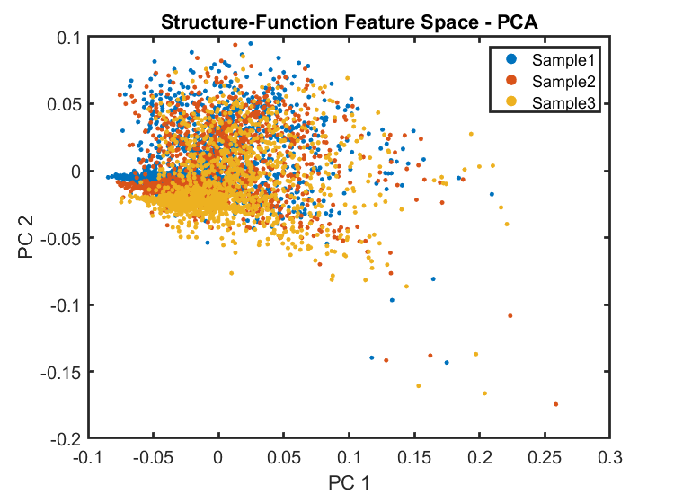
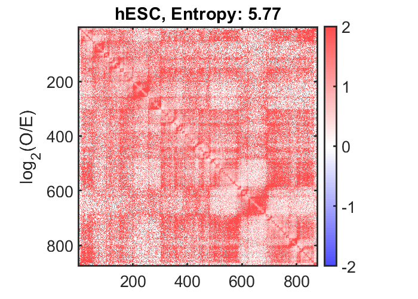
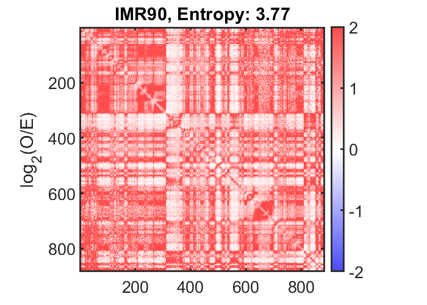
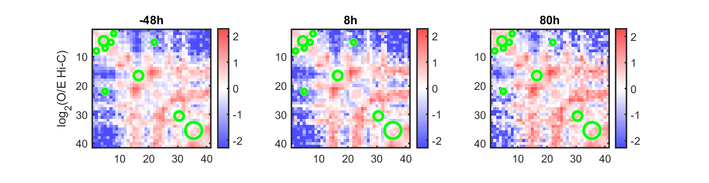
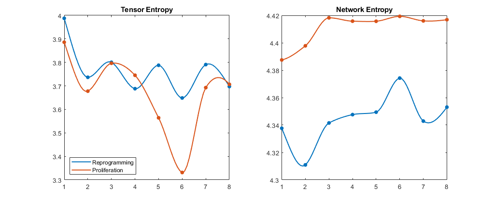

Contents
4DN example
This example script shows how each of the core functionalities of the 4DNvestigator can be called using default parameters
link to paper: (In preparation)
Written by: Stephen Lindsly, Scott Ronquist Contact: lindsly@umich.edu, scotronq@umich.edu
close all
clear
restoredefaultpath
addpath(genpath(pwd))
Load Data Example through the 4DNvestigator functions
if exist('myodData.mat','file')~=2 || exist('sampleMyodDataIndexTp-48_8_80.xlsx','file')~=2 error(['Download all Hi-C and RNA-seq data ',... '<a href="https://drive.google.com/drive/folders/1xVjX7yqiOIPV_IfVKVDJJ79Ee0xMHGr8?usp=sharing">here</a>',... ' and save to the directory data\exampleData\']) end Index_Loc = 'data\exampleData\myodData\sampleMyodDataIndexTp-48_8_80.xlsx'; Data_Loc = 'data\exampleData\myodData\'; if exist('sampleMyodDataIndexTp-48_8_80.xlsx','file')==2 [dataInfo] = fdnLoadUserInput(Index_Loc); [H] = fdnLoadHic(Data_Loc,dataInfo,'single'); [R] = fdnLoadRnaseq(Data_Loc,dataInfo,H); end
reading .hic header information...
Warning: Escaped character '\M' is not valid. See 'doc sprintf' for supported
special characters.
Warning: G:
Warning: Escaped character '\M' is not valid. See 'doc sprintf' for supported
special characters.
Warning: G:
Warning: Escaped character '\M' is not valid. See 'doc sprintf' for supported
special characters.
Warning: G:
File_Name =
3×1 cell array
{'Sample_64585.hic'}
{'Sample_71530.hic'}
{'Sample_71531.hic'}
Loading 100kb Hi-C. Sample: (1/3), chr:1, estimated time: 0 secs...
Loading 100kb Hi-C. Sample: (1/3), chr:2, estimated time: 480 secs...
Loading 100kb Hi-C. Sample: (1/3), chr:3, estimated time: 473 secs...
Loading 100kb Hi-C. Sample: (1/3), chr:4, estimated time: 466 secs...
Loading 100kb Hi-C. Sample: (1/3), chr:5, estimated time: 459 secs...
Loading 100kb Hi-C. Sample: (1/3), chr:6, estimated time: 452 secs...
Loading 100kb Hi-C. Sample: (1/3), chr:7, estimated time: 446 secs...
Loading 100kb Hi-C. Sample: (1/3), chr:8, estimated time: 439 secs...
Loading 100kb Hi-C. Sample: (1/3), chr:9, estimated time: 432 secs...
Loading 100kb Hi-C. Sample: (1/3), chr:10, estimated time: 425 secs...
Loading 100kb Hi-C. Sample: (1/3), chr:11, estimated time: 418 secs...
Loading 100kb Hi-C. Sample: (1/3), chr:12, estimated time: 411 secs...
Loading 100kb Hi-C. Sample: (1/3), chr:13, estimated time: 404 secs...
Loading 100kb Hi-C. Sample: (1/3), chr:14, estimated time: 398 secs...
Loading 100kb Hi-C. Sample: (1/3), chr:15, estimated time: 391 secs...
Loading 100kb Hi-C. Sample: (1/3), chr:16, estimated time: 384 secs...
Loading 100kb Hi-C. Sample: (1/3), chr:17, estimated time: 377 secs...
Loading 100kb Hi-C. Sample: (1/3), chr:18, estimated time: 370 secs...
Loading 100kb Hi-C. Sample: (1/3), chr:19, estimated time: 363 secs...
Loading 100kb Hi-C. Sample: (1/3), chr:20, estimated time: 356 secs...
Loading 100kb Hi-C. Sample: (1/3), chr:21, estimated time: 350 secs...
Loading 100kb Hi-C. Sample: (1/3), chr:22, estimated time: 343 secs...
Loading 100kb Hi-C. Sample: (1/3), chr:X, estimated time: 336 secs...
Loading 100kb Hi-C. Sample: (1/3), chr:Y, estimated time: 329 secs...
Loading 100kb Hi-C. Sample: (2/3), chr:1, estimated time: 322 secs...
Loading 100kb Hi-C. Sample: (2/3), chr:2, estimated time: 315 secs...
Loading 100kb Hi-C. Sample: (2/3), chr:3, estimated time: 308 secs...
Loading 100kb Hi-C. Sample: (2/3), chr:4, estimated time: 302 secs...
Loading 100kb Hi-C. Sample: (2/3), chr:5, estimated time: 295 secs...
Loading 100kb Hi-C. Sample: (2/3), chr:6, estimated time: 288 secs...
Loading 100kb Hi-C. Sample: (2/3), chr:7, estimated time: 281 secs...
Loading 100kb Hi-C. Sample: (2/3), chr:8, estimated time: 274 secs...
Loading 100kb Hi-C. Sample: (2/3), chr:9, estimated time: 267 secs...
Loading 100kb Hi-C. Sample: (2/3), chr:10, estimated time: 260 secs...
Loading 100kb Hi-C. Sample: (2/3), chr:11, estimated time: 254 secs...
Loading 100kb Hi-C. Sample: (2/3), chr:12, estimated time: 247 secs...
Loading 100kb Hi-C. Sample: (2/3), chr:13, estimated time: 240 secs...
Loading 100kb Hi-C. Sample: (2/3), chr:14, estimated time: 233 secs...
Loading 100kb Hi-C. Sample: (2/3), chr:15, estimated time: 226 secs...
Loading 100kb Hi-C. Sample: (2/3), chr:16, estimated time: 219 secs...
Loading 100kb Hi-C. Sample: (2/3), chr:17, estimated time: 212 secs...
Loading 100kb Hi-C. Sample: (2/3), chr:18, estimated time: 206 secs...
Loading 100kb Hi-C. Sample: (2/3), chr:19, estimated time: 199 secs...
Loading 100kb Hi-C. Sample: (2/3), chr:20, estimated time: 192 secs...
Loading 100kb Hi-C. Sample: (2/3), chr:21, estimated time: 185 secs...
Loading 100kb Hi-C. Sample: (2/3), chr:22, estimated time: 178 secs...
Loading 100kb Hi-C. Sample: (2/3), chr:X, estimated time: 171 secs...
Loading 100kb Hi-C. Sample: (2/3), chr:Y, estimated time: 165 secs...
Loading 100kb Hi-C. Sample: (3/3), chr:1, estimated time: 158 secs...
Loading 100kb Hi-C. Sample: (3/3), chr:2, estimated time: 151 secs...
Loading 100kb Hi-C. Sample: (3/3), chr:3, estimated time: 144 secs...
Loading 100kb Hi-C. Sample: (3/3), chr:4, estimated time: 137 secs...
Loading 100kb Hi-C. Sample: (3/3), chr:5, estimated time: 130 secs...
Loading 100kb Hi-C. Sample: (3/3), chr:6, estimated time: 123 secs...
Loading 100kb Hi-C. Sample: (3/3), chr:7, estimated time: 117 secs...
Loading 100kb Hi-C. Sample: (3/3), chr:8, estimated time: 110 secs...
Loading 100kb Hi-C. Sample: (3/3), chr:9, estimated time: 103 secs...
Loading 100kb Hi-C. Sample: (3/3), chr:10, estimated time: 96 secs...
Loading 100kb Hi-C. Sample: (3/3), chr:11, estimated time: 89 secs...
Loading 100kb Hi-C. Sample: (3/3), chr:12, estimated time: 82 secs...
Loading 100kb Hi-C. Sample: (3/3), chr:13, estimated time: 75 secs...
Loading 100kb Hi-C. Sample: (3/3), chr:14, estimated time: 69 secs...
Loading 100kb Hi-C. Sample: (3/3), chr:15, estimated time: 62 secs...
Loading 100kb Hi-C. Sample: (3/3), chr:16, estimated time: 55 secs...
Loading 100kb Hi-C. Sample: (3/3), chr:17, estimated time: 48 secs...
Loading 100kb Hi-C. Sample: (3/3), chr:18, estimated time: 41 secs...
Loading 100kb Hi-C. Sample: (3/3), chr:19, estimated time: 34 secs...
Loading 100kb Hi-C. Sample: (3/3), chr:20, estimated time: 27 secs...
Loading 100kb Hi-C. Sample: (3/3), chr:21, estimated time: 21 secs...
Loading 100kb Hi-C. Sample: (3/3), chr:22, estimated time: 14 secs...
Loading 100kb Hi-C. Sample: (3/3), chr:X, estimated time: 7 secs...
Loading 100kb Hi-C. Sample: (3/3), chr:Y, estimated time: 0 secs...
Extracting Hi-C, 1Mb, ALL...
Extracting Hi-C, 1Mb, IntraChr:1...
Extracting Hi-C, 1Mb, IntraChr:2...
Extracting Hi-C, 1Mb, IntraChr:3...
Extracting Hi-C, 1Mb, IntraChr:4...
Extracting Hi-C, 1Mb, IntraChr:5...
Extracting Hi-C, 1Mb, IntraChr:6...
Extracting Hi-C, 1Mb, IntraChr:7...
Extracting Hi-C, 1Mb, IntraChr:8...
Extracting Hi-C, 1Mb, IntraChr:9...
Extracting Hi-C, 1Mb, IntraChr:10...
Extracting Hi-C, 1Mb, IntraChr:11...
Extracting Hi-C, 1Mb, IntraChr:12...
Extracting Hi-C, 1Mb, IntraChr:13...
Extracting Hi-C, 1Mb, IntraChr:14...
Extracting Hi-C, 1Mb, IntraChr:15...
Extracting Hi-C, 1Mb, IntraChr:16...
Extracting Hi-C, 1Mb, IntraChr:17...
Extracting Hi-C, 1Mb, IntraChr:18...
Extracting Hi-C, 1Mb, IntraChr:19...
Extracting Hi-C, 1Mb, IntraChr:20...
Extracting Hi-C, 1Mb, IntraChr:21...
Extracting Hi-C, 1Mb, IntraChr:22...
Extracting Hi-C, 1Mb, IntraChr:23...
Extracting Hi-C, 1Mb, IntraChr:24...
Extracting Hi-C, 1Mb, InterChr:1 vs 2...
Loading 1Mb Hi-C. Sample: (1/3), chr1:1, chr2:2, estimated time: 0 secs...
trimming inter-chr 1-2, 1Mb...
Extracting Hi-C, 1Mb, InterChr:1 vs 3...
Loading 1Mb Hi-C. Sample: (1/3), chr1:1, chr2:3, estimated time: 0 secs...
trimming inter-chr 1-3, 1Mb...
Extracting Hi-C, 1Mb, InterChr:1 vs 4...
Loading 1Mb Hi-C. Sample: (1/3), chr1:1, chr2:4, estimated time: 0 secs...
trimming inter-chr 1-4, 1Mb...
Extracting Hi-C, 1Mb, InterChr:1 vs 5...
Loading 1Mb Hi-C. Sample: (1/3), chr1:1, chr2:5, estimated time: 0 secs...
trimming inter-chr 1-5, 1Mb...
Extracting Hi-C, 1Mb, InterChr:1 vs 6...
Loading 1Mb Hi-C. Sample: (1/3), chr1:1, chr2:6, estimated time: 0 secs...
trimming inter-chr 1-6, 1Mb...
Extracting Hi-C, 1Mb, InterChr:1 vs 7...
Loading 1Mb Hi-C. Sample: (1/3), chr1:1, chr2:7, estimated time: 0 secs...
trimming inter-chr 1-7, 1Mb...
Extracting Hi-C, 1Mb, InterChr:1 vs 8...
Loading 1Mb Hi-C. Sample: (1/3), chr1:1, chr2:8, estimated time: 0 secs...
trimming inter-chr 1-8, 1Mb...
Extracting Hi-C, 1Mb, InterChr:1 vs 9...
Loading 1Mb Hi-C. Sample: (1/3), chr1:1, chr2:9, estimated time: 0 secs...
trimming inter-chr 1-9, 1Mb...
Extracting Hi-C, 1Mb, InterChr:1 vs 10...
Loading 1Mb Hi-C. Sample: (1/3), chr1:1, chr2:10, estimated time: 0 secs...
trimming inter-chr 1-10, 1Mb...
Extracting Hi-C, 1Mb, InterChr:1 vs 11...
Loading 1Mb Hi-C. Sample: (1/3), chr1:1, chr2:11, estimated time: 0 secs...
trimming inter-chr 1-11, 1Mb...
Extracting Hi-C, 1Mb, InterChr:1 vs 12...
Loading 1Mb Hi-C. Sample: (1/3), chr1:1, chr2:12, estimated time: 0 secs...
trimming inter-chr 1-12, 1Mb...
Extracting Hi-C, 1Mb, InterChr:1 vs 13...
Loading 1Mb Hi-C. Sample: (1/3), chr1:1, chr2:13, estimated time: 0 secs...
trimming inter-chr 1-13, 1Mb...
Extracting Hi-C, 1Mb, InterChr:1 vs 14...
Loading 1Mb Hi-C. Sample: (1/3), chr1:1, chr2:14, estimated time: 0 secs...
trimming inter-chr 1-14, 1Mb...
Extracting Hi-C, 1Mb, InterChr:1 vs 15...
Loading 1Mb Hi-C. Sample: (1/3), chr1:1, chr2:15, estimated time: 0 secs...
trimming inter-chr 1-15, 1Mb...
Extracting Hi-C, 1Mb, InterChr:1 vs 16...
Loading 1Mb Hi-C. Sample: (1/3), chr1:1, chr2:16, estimated time: 0 secs...
trimming inter-chr 1-16, 1Mb...
Extracting Hi-C, 1Mb, InterChr:1 vs 17...
Loading 1Mb Hi-C. Sample: (1/3), chr1:1, chr2:17, estimated time: 0 secs...
trimming inter-chr 1-17, 1Mb...
Extracting Hi-C, 1Mb, InterChr:1 vs 18...
Loading 1Mb Hi-C. Sample: (1/3), chr1:1, chr2:18, estimated time: 0 secs...
trimming inter-chr 1-18, 1Mb...
Extracting Hi-C, 1Mb, InterChr:1 vs 19...
Loading 1Mb Hi-C. Sample: (1/3), chr1:1, chr2:19, estimated time: 0 secs...
trimming inter-chr 1-19, 1Mb...
Extracting Hi-C, 1Mb, InterChr:1 vs 20...
Loading 1Mb Hi-C. Sample: (1/3), chr1:1, chr2:20, estimated time: 0 secs...
trimming inter-chr 1-20, 1Mb...
Extracting Hi-C, 1Mb, InterChr:1 vs 21...
Loading 1Mb Hi-C. Sample: (1/3), chr1:1, chr2:21, estimated time: 0 secs...
trimming inter-chr 1-21, 1Mb...
Extracting Hi-C, 1Mb, InterChr:1 vs 22...
Loading 1Mb Hi-C. Sample: (1/3), chr1:1, chr2:22, estimated time: 0 secs...
trimming inter-chr 1-22, 1Mb...
Extracting Hi-C, 1Mb, InterChr:1 vs 23...
Loading 1Mb Hi-C. Sample: (1/3), chr1:1, chr2:X, estimated time: 0 secs...
trimming inter-chr 1-23, 1Mb...
Extracting Hi-C, 1Mb, InterChr:1 vs 24...
Loading 1Mb Hi-C. Sample: (1/3), chr1:1, chr2:Y, estimated time: 0 secs...
trimming inter-chr 1-24, 1Mb...
Extracting Hi-C, 1Mb, InterChr:2 vs 3...
Loading 1Mb Hi-C. Sample: (1/3), chr1:2, chr2:3, estimated time: 0 secs...
trimming inter-chr 2-3, 1Mb...
Extracting Hi-C, 1Mb, InterChr:2 vs 4...
Loading 1Mb Hi-C. Sample: (1/3), chr1:2, chr2:4, estimated time: 0 secs...
trimming inter-chr 2-4, 1Mb...
Extracting Hi-C, 1Mb, InterChr:2 vs 5...
Loading 1Mb Hi-C. Sample: (1/3), chr1:2, chr2:5, estimated time: 0 secs...
trimming inter-chr 2-5, 1Mb...
Extracting Hi-C, 1Mb, InterChr:2 vs 6...
Loading 1Mb Hi-C. Sample: (1/3), chr1:2, chr2:6, estimated time: 0 secs...
trimming inter-chr 2-6, 1Mb...
Extracting Hi-C, 1Mb, InterChr:2 vs 7...
Loading 1Mb Hi-C. Sample: (1/3), chr1:2, chr2:7, estimated time: 0 secs...
trimming inter-chr 2-7, 1Mb...
Extracting Hi-C, 1Mb, InterChr:2 vs 8...
Loading 1Mb Hi-C. Sample: (1/3), chr1:2, chr2:8, estimated time: 0 secs...
trimming inter-chr 2-8, 1Mb...
Extracting Hi-C, 1Mb, InterChr:2 vs 9...
Loading 1Mb Hi-C. Sample: (1/3), chr1:2, chr2:9, estimated time: 0 secs...
trimming inter-chr 2-9, 1Mb...
Extracting Hi-C, 1Mb, InterChr:2 vs 10...
Loading 1Mb Hi-C. Sample: (1/3), chr1:2, chr2:10, estimated time: 0 secs...
trimming inter-chr 2-10, 1Mb...
Extracting Hi-C, 1Mb, InterChr:2 vs 11...
Loading 1Mb Hi-C. Sample: (1/3), chr1:2, chr2:11, estimated time: 0 secs...
trimming inter-chr 2-11, 1Mb...
Extracting Hi-C, 1Mb, InterChr:2 vs 12...
Loading 1Mb Hi-C. Sample: (1/3), chr1:2, chr2:12, estimated time: 0 secs...
trimming inter-chr 2-12, 1Mb...
Extracting Hi-C, 1Mb, InterChr:2 vs 13...
Loading 1Mb Hi-C. Sample: (1/3), chr1:2, chr2:13, estimated time: 0 secs...
trimming inter-chr 2-13, 1Mb...
Extracting Hi-C, 1Mb, InterChr:2 vs 14...
Loading 1Mb Hi-C. Sample: (1/3), chr1:2, chr2:14, estimated time: 0 secs...
trimming inter-chr 2-14, 1Mb...
Extracting Hi-C, 1Mb, InterChr:2 vs 15...
Loading 1Mb Hi-C. Sample: (1/3), chr1:2, chr2:15, estimated time: 0 secs...
trimming inter-chr 2-15, 1Mb...
Extracting Hi-C, 1Mb, InterChr:2 vs 16...
Loading 1Mb Hi-C. Sample: (1/3), chr1:2, chr2:16, estimated time: 0 secs...
trimming inter-chr 2-16, 1Mb...
Extracting Hi-C, 1Mb, InterChr:2 vs 17...
Loading 1Mb Hi-C. Sample: (1/3), chr1:2, chr2:17, estimated time: 0 secs...
trimming inter-chr 2-17, 1Mb...
Extracting Hi-C, 1Mb, InterChr:2 vs 18...
Loading 1Mb Hi-C. Sample: (1/3), chr1:2, chr2:18, estimated time: 0 secs...
trimming inter-chr 2-18, 1Mb...
Extracting Hi-C, 1Mb, InterChr:2 vs 19...
Loading 1Mb Hi-C. Sample: (1/3), chr1:2, chr2:19, estimated time: 0 secs...
trimming inter-chr 2-19, 1Mb...
Extracting Hi-C, 1Mb, InterChr:2 vs 20...
Loading 1Mb Hi-C. Sample: (1/3), chr1:2, chr2:20, estimated time: 0 secs...
trimming inter-chr 2-20, 1Mb...
Extracting Hi-C, 1Mb, InterChr:2 vs 21...
Loading 1Mb Hi-C. Sample: (1/3), chr1:2, chr2:21, estimated time: 0 secs...
trimming inter-chr 2-21, 1Mb...
Extracting Hi-C, 1Mb, InterChr:2 vs 22...
Loading 1Mb Hi-C. Sample: (1/3), chr1:2, chr2:22, estimated time: 0 secs...
trimming inter-chr 2-22, 1Mb...
Extracting Hi-C, 1Mb, InterChr:2 vs 23...
Loading 1Mb Hi-C. Sample: (1/3), chr1:2, chr2:X, estimated time: 0 secs...
trimming inter-chr 2-23, 1Mb...
Extracting Hi-C, 1Mb, InterChr:2 vs 24...
Loading 1Mb Hi-C. Sample: (1/3), chr1:2, chr2:Y, estimated time: 0 secs...
trimming inter-chr 2-24, 1Mb...
Extracting Hi-C, 1Mb, InterChr:3 vs 4...
Loading 1Mb Hi-C. Sample: (1/3), chr1:3, chr2:4, estimated time: 0 secs...
trimming inter-chr 3-4, 1Mb...
Extracting Hi-C, 1Mb, InterChr:3 vs 5...
Loading 1Mb Hi-C. Sample: (1/3), chr1:3, chr2:5, estimated time: 0 secs...
trimming inter-chr 3-5, 1Mb...
Extracting Hi-C, 1Mb, InterChr:3 vs 6...
Loading 1Mb Hi-C. Sample: (1/3), chr1:3, chr2:6, estimated time: 0 secs...
trimming inter-chr 3-6, 1Mb...
Extracting Hi-C, 1Mb, InterChr:3 vs 7...
Loading 1Mb Hi-C. Sample: (1/3), chr1:3, chr2:7, estimated time: 0 secs...
trimming inter-chr 3-7, 1Mb...
Extracting Hi-C, 1Mb, InterChr:3 vs 8...
Loading 1Mb Hi-C. Sample: (1/3), chr1:3, chr2:8, estimated time: 0 secs...
trimming inter-chr 3-8, 1Mb...
Extracting Hi-C, 1Mb, InterChr:3 vs 9...
Loading 1Mb Hi-C. Sample: (1/3), chr1:3, chr2:9, estimated time: 0 secs...
trimming inter-chr 3-9, 1Mb...
Extracting Hi-C, 1Mb, InterChr:3 vs 10...
Loading 1Mb Hi-C. Sample: (1/3), chr1:3, chr2:10, estimated time: 0 secs...
trimming inter-chr 3-10, 1Mb...
Extracting Hi-C, 1Mb, InterChr:3 vs 11...
Loading 1Mb Hi-C. Sample: (1/3), chr1:3, chr2:11, estimated time: 0 secs...
trimming inter-chr 3-11, 1Mb...
Extracting Hi-C, 1Mb, InterChr:3 vs 12...
Loading 1Mb Hi-C. Sample: (1/3), chr1:3, chr2:12, estimated time: 0 secs...
trimming inter-chr 3-12, 1Mb...
Extracting Hi-C, 1Mb, InterChr:3 vs 13...
Loading 1Mb Hi-C. Sample: (1/3), chr1:3, chr2:13, estimated time: 0 secs...
trimming inter-chr 3-13, 1Mb...
Extracting Hi-C, 1Mb, InterChr:3 vs 14...
Loading 1Mb Hi-C. Sample: (1/3), chr1:3, chr2:14, estimated time: 0 secs...
trimming inter-chr 3-14, 1Mb...
Extracting Hi-C, 1Mb, InterChr:3 vs 15...
Loading 1Mb Hi-C. Sample: (1/3), chr1:3, chr2:15, estimated time: 0 secs...
trimming inter-chr 3-15, 1Mb...
Extracting Hi-C, 1Mb, InterChr:3 vs 16...
Loading 1Mb Hi-C. Sample: (1/3), chr1:3, chr2:16, estimated time: 0 secs...
trimming inter-chr 3-16, 1Mb...
Extracting Hi-C, 1Mb, InterChr:3 vs 17...
Loading 1Mb Hi-C. Sample: (1/3), chr1:3, chr2:17, estimated time: 0 secs...
trimming inter-chr 3-17, 1Mb...
Extracting Hi-C, 1Mb, InterChr:3 vs 18...
Loading 1Mb Hi-C. Sample: (1/3), chr1:3, chr2:18, estimated time: 0 secs...
trimming inter-chr 3-18, 1Mb...
Extracting Hi-C, 1Mb, InterChr:3 vs 19...
Loading 1Mb Hi-C. Sample: (1/3), chr1:3, chr2:19, estimated time: 0 secs...
trimming inter-chr 3-19, 1Mb...
Extracting Hi-C, 1Mb, InterChr:3 vs 20...
Loading 1Mb Hi-C. Sample: (1/3), chr1:3, chr2:20, estimated time: 0 secs...
trimming inter-chr 3-20, 1Mb...
Extracting Hi-C, 1Mb, InterChr:3 vs 21...
Loading 1Mb Hi-C. Sample: (1/3), chr1:3, chr2:21, estimated time: 0 secs...
trimming inter-chr 3-21, 1Mb...
Extracting Hi-C, 1Mb, InterChr:3 vs 22...
Loading 1Mb Hi-C. Sample: (1/3), chr1:3, chr2:22, estimated time: 0 secs...
trimming inter-chr 3-22, 1Mb...
Extracting Hi-C, 1Mb, InterChr:3 vs 23...
Loading 1Mb Hi-C. Sample: (1/3), chr1:3, chr2:X, estimated time: 0 secs...
trimming inter-chr 3-23, 1Mb...
Extracting Hi-C, 1Mb, InterChr:3 vs 24...
Loading 1Mb Hi-C. Sample: (1/3), chr1:3, chr2:Y, estimated time: 0 secs...
trimming inter-chr 3-24, 1Mb...
Extracting Hi-C, 1Mb, InterChr:4 vs 5...
Loading 1Mb Hi-C. Sample: (1/3), chr1:4, chr2:5, estimated time: 0 secs...
trimming inter-chr 4-5, 1Mb...
Extracting Hi-C, 1Mb, InterChr:4 vs 6...
Loading 1Mb Hi-C. Sample: (1/3), chr1:4, chr2:6, estimated time: 0 secs...
trimming inter-chr 4-6, 1Mb...
Extracting Hi-C, 1Mb, InterChr:4 vs 7...
Loading 1Mb Hi-C. Sample: (1/3), chr1:4, chr2:7, estimated time: 0 secs...
trimming inter-chr 4-7, 1Mb...
Extracting Hi-C, 1Mb, InterChr:4 vs 8...
Loading 1Mb Hi-C. Sample: (1/3), chr1:4, chr2:8, estimated time: 0 secs...
trimming inter-chr 4-8, 1Mb...
Extracting Hi-C, 1Mb, InterChr:4 vs 9...
Loading 1Mb Hi-C. Sample: (1/3), chr1:4, chr2:9, estimated time: 0 secs...
trimming inter-chr 4-9, 1Mb...
Extracting Hi-C, 1Mb, InterChr:4 vs 10...
Loading 1Mb Hi-C. Sample: (1/3), chr1:4, chr2:10, estimated time: 0 secs...
trimming inter-chr 4-10, 1Mb...
Extracting Hi-C, 1Mb, InterChr:4 vs 11...
Loading 1Mb Hi-C. Sample: (1/3), chr1:4, chr2:11, estimated time: 0 secs...
trimming inter-chr 4-11, 1Mb...
Extracting Hi-C, 1Mb, InterChr:4 vs 12...
Loading 1Mb Hi-C. Sample: (1/3), chr1:4, chr2:12, estimated time: 0 secs...
trimming inter-chr 4-12, 1Mb...
Extracting Hi-C, 1Mb, InterChr:4 vs 13...
Loading 1Mb Hi-C. Sample: (1/3), chr1:4, chr2:13, estimated time: 0 secs...
trimming inter-chr 4-13, 1Mb...
Extracting Hi-C, 1Mb, InterChr:4 vs 14...
Loading 1Mb Hi-C. Sample: (1/3), chr1:4, chr2:14, estimated time: 0 secs...
trimming inter-chr 4-14, 1Mb...
Extracting Hi-C, 1Mb, InterChr:4 vs 15...
Loading 1Mb Hi-C. Sample: (1/3), chr1:4, chr2:15, estimated time: 0 secs...
trimming inter-chr 4-15, 1Mb...
Extracting Hi-C, 1Mb, InterChr:4 vs 16...
Loading 1Mb Hi-C. Sample: (1/3), chr1:4, chr2:16, estimated time: 0 secs...
trimming inter-chr 4-16, 1Mb...
Extracting Hi-C, 1Mb, InterChr:4 vs 17...
Loading 1Mb Hi-C. Sample: (1/3), chr1:4, chr2:17, estimated time: 0 secs...
trimming inter-chr 4-17, 1Mb...
Extracting Hi-C, 1Mb, InterChr:4 vs 18...
Loading 1Mb Hi-C. Sample: (1/3), chr1:4, chr2:18, estimated time: 0 secs...
trimming inter-chr 4-18, 1Mb...
Extracting Hi-C, 1Mb, InterChr:4 vs 19...
Loading 1Mb Hi-C. Sample: (1/3), chr1:4, chr2:19, estimated time: 0 secs...
trimming inter-chr 4-19, 1Mb...
Extracting Hi-C, 1Mb, InterChr:4 vs 20...
Loading 1Mb Hi-C. Sample: (1/3), chr1:4, chr2:20, estimated time: 0 secs...
trimming inter-chr 4-20, 1Mb...
Extracting Hi-C, 1Mb, InterChr:4 vs 21...
Loading 1Mb Hi-C. Sample: (1/3), chr1:4, chr2:21, estimated time: 0 secs...
trimming inter-chr 4-21, 1Mb...
Extracting Hi-C, 1Mb, InterChr:4 vs 22...
Loading 1Mb Hi-C. Sample: (1/3), chr1:4, chr2:22, estimated time: 0 secs...
trimming inter-chr 4-22, 1Mb...
Extracting Hi-C, 1Mb, InterChr:4 vs 23...
Loading 1Mb Hi-C. Sample: (1/3), chr1:4, chr2:X, estimated time: 0 secs...
trimming inter-chr 4-23, 1Mb...
Extracting Hi-C, 1Mb, InterChr:4 vs 24...
Loading 1Mb Hi-C. Sample: (1/3), chr1:4, chr2:Y, estimated time: 0 secs...
trimming inter-chr 4-24, 1Mb...
Extracting Hi-C, 1Mb, InterChr:5 vs 6...
Loading 1Mb Hi-C. Sample: (1/3), chr1:5, chr2:6, estimated time: 0 secs...
trimming inter-chr 5-6, 1Mb...
Extracting Hi-C, 1Mb, InterChr:5 vs 7...
Loading 1Mb Hi-C. Sample: (1/3), chr1:5, chr2:7, estimated time: 0 secs...
trimming inter-chr 5-7, 1Mb...
Extracting Hi-C, 1Mb, InterChr:5 vs 8...
Loading 1Mb Hi-C. Sample: (1/3), chr1:5, chr2:8, estimated time: 0 secs...
trimming inter-chr 5-8, 1Mb...
Extracting Hi-C, 1Mb, InterChr:5 vs 9...
Loading 1Mb Hi-C. Sample: (1/3), chr1:5, chr2:9, estimated time: 0 secs...
trimming inter-chr 5-9, 1Mb...
Extracting Hi-C, 1Mb, InterChr:5 vs 10...
Loading 1Mb Hi-C. Sample: (1/3), chr1:5, chr2:10, estimated time: 0 secs...
trimming inter-chr 5-10, 1Mb...
Extracting Hi-C, 1Mb, InterChr:5 vs 11...
Loading 1Mb Hi-C. Sample: (1/3), chr1:5, chr2:11, estimated time: 0 secs...
trimming inter-chr 5-11, 1Mb...
Extracting Hi-C, 1Mb, InterChr:5 vs 12...
Loading 1Mb Hi-C. Sample: (1/3), chr1:5, chr2:12, estimated time: 0 secs...
trimming inter-chr 5-12, 1Mb...
Extracting Hi-C, 1Mb, InterChr:5 vs 13...
Loading 1Mb Hi-C. Sample: (1/3), chr1:5, chr2:13, estimated time: 0 secs...
trimming inter-chr 5-13, 1Mb...
Extracting Hi-C, 1Mb, InterChr:5 vs 14...
Loading 1Mb Hi-C. Sample: (1/3), chr1:5, chr2:14, estimated time: 0 secs...
trimming inter-chr 5-14, 1Mb...
Extracting Hi-C, 1Mb, InterChr:5 vs 15...
Loading 1Mb Hi-C. Sample: (1/3), chr1:5, chr2:15, estimated time: 0 secs...
trimming inter-chr 5-15, 1Mb...
Extracting Hi-C, 1Mb, InterChr:5 vs 16...
Loading 1Mb Hi-C. Sample: (1/3), chr1:5, chr2:16, estimated time: 0 secs...
trimming inter-chr 5-16, 1Mb...
Extracting Hi-C, 1Mb, InterChr:5 vs 17...
Loading 1Mb Hi-C. Sample: (1/3), chr1:5, chr2:17, estimated time: 0 secs...
trimming inter-chr 5-17, 1Mb...
Extracting Hi-C, 1Mb, InterChr:5 vs 18...
Loading 1Mb Hi-C. Sample: (1/3), chr1:5, chr2:18, estimated time: 0 secs...
trimming inter-chr 5-18, 1Mb...
Extracting Hi-C, 1Mb, InterChr:5 vs 19...
Loading 1Mb Hi-C. Sample: (1/3), chr1:5, chr2:19, estimated time: 0 secs...
trimming inter-chr 5-19, 1Mb...
Extracting Hi-C, 1Mb, InterChr:5 vs 20...
Loading 1Mb Hi-C. Sample: (1/3), chr1:5, chr2:20, estimated time: 0 secs...
trimming inter-chr 5-20, 1Mb...
Extracting Hi-C, 1Mb, InterChr:5 vs 21...
Loading 1Mb Hi-C. Sample: (1/3), chr1:5, chr2:21, estimated time: 0 secs...
trimming inter-chr 5-21, 1Mb...
Extracting Hi-C, 1Mb, InterChr:5 vs 22...
Loading 1Mb Hi-C. Sample: (1/3), chr1:5, chr2:22, estimated time: 0 secs...
trimming inter-chr 5-22, 1Mb...
Extracting Hi-C, 1Mb, InterChr:5 vs 23...
Loading 1Mb Hi-C. Sample: (1/3), chr1:5, chr2:X, estimated time: 0 secs...
trimming inter-chr 5-23, 1Mb...
Extracting Hi-C, 1Mb, InterChr:5 vs 24...
Loading 1Mb Hi-C. Sample: (1/3), chr1:5, chr2:Y, estimated time: 0 secs...
trimming inter-chr 5-24, 1Mb...
Extracting Hi-C, 1Mb, InterChr:6 vs 7...
Loading 1Mb Hi-C. Sample: (1/3), chr1:6, chr2:7, estimated time: 0 secs...
trimming inter-chr 6-7, 1Mb...
Extracting Hi-C, 1Mb, InterChr:6 vs 8...
Loading 1Mb Hi-C. Sample: (1/3), chr1:6, chr2:8, estimated time: 0 secs...
trimming inter-chr 6-8, 1Mb...
Extracting Hi-C, 1Mb, InterChr:6 vs 9...
Loading 1Mb Hi-C. Sample: (1/3), chr1:6, chr2:9, estimated time: 0 secs...
trimming inter-chr 6-9, 1Mb...
Extracting Hi-C, 1Mb, InterChr:6 vs 10...
Loading 1Mb Hi-C. Sample: (1/3), chr1:6, chr2:10, estimated time: 0 secs...
trimming inter-chr 6-10, 1Mb...
Extracting Hi-C, 1Mb, InterChr:6 vs 11...
Loading 1Mb Hi-C. Sample: (1/3), chr1:6, chr2:11, estimated time: 0 secs...
trimming inter-chr 6-11, 1Mb...
Extracting Hi-C, 1Mb, InterChr:6 vs 12...
Loading 1Mb Hi-C. Sample: (1/3), chr1:6, chr2:12, estimated time: 0 secs...
trimming inter-chr 6-12, 1Mb...
Extracting Hi-C, 1Mb, InterChr:6 vs 13...
Loading 1Mb Hi-C. Sample: (1/3), chr1:6, chr2:13, estimated time: 0 secs...
trimming inter-chr 6-13, 1Mb...
Extracting Hi-C, 1Mb, InterChr:6 vs 14...
Loading 1Mb Hi-C. Sample: (1/3), chr1:6, chr2:14, estimated time: 0 secs...
trimming inter-chr 6-14, 1Mb...
Extracting Hi-C, 1Mb, InterChr:6 vs 15...
Loading 1Mb Hi-C. Sample: (1/3), chr1:6, chr2:15, estimated time: 0 secs...
trimming inter-chr 6-15, 1Mb...
Extracting Hi-C, 1Mb, InterChr:6 vs 16...
Loading 1Mb Hi-C. Sample: (1/3), chr1:6, chr2:16, estimated time: 0 secs...
trimming inter-chr 6-16, 1Mb...
Extracting Hi-C, 1Mb, InterChr:6 vs 17...
Loading 1Mb Hi-C. Sample: (1/3), chr1:6, chr2:17, estimated time: 0 secs...
trimming inter-chr 6-17, 1Mb...
Extracting Hi-C, 1Mb, InterChr:6 vs 18...
Loading 1Mb Hi-C. Sample: (1/3), chr1:6, chr2:18, estimated time: 0 secs...
trimming inter-chr 6-18, 1Mb...
Extracting Hi-C, 1Mb, InterChr:6 vs 19...
Loading 1Mb Hi-C. Sample: (1/3), chr1:6, chr2:19, estimated time: 0 secs...
trimming inter-chr 6-19, 1Mb...
Extracting Hi-C, 1Mb, InterChr:6 vs 20...
Loading 1Mb Hi-C. Sample: (1/3), chr1:6, chr2:20, estimated time: 0 secs...
trimming inter-chr 6-20, 1Mb...
Extracting Hi-C, 1Mb, InterChr:6 vs 21...
Loading 1Mb Hi-C. Sample: (1/3), chr1:6, chr2:21, estimated time: 0 secs...
trimming inter-chr 6-21, 1Mb...
Extracting Hi-C, 1Mb, InterChr:6 vs 22...
Loading 1Mb Hi-C. Sample: (1/3), chr1:6, chr2:22, estimated time: 0 secs...
trimming inter-chr 6-22, 1Mb...
Extracting Hi-C, 1Mb, InterChr:6 vs 23...
Loading 1Mb Hi-C. Sample: (1/3), chr1:6, chr2:X, estimated time: 0 secs...
trimming inter-chr 6-23, 1Mb...
Extracting Hi-C, 1Mb, InterChr:6 vs 24...
Loading 1Mb Hi-C. Sample: (1/3), chr1:6, chr2:Y, estimated time: 0 secs...
trimming inter-chr 6-24, 1Mb...
Extracting Hi-C, 1Mb, InterChr:7 vs 8...
Loading 1Mb Hi-C. Sample: (1/3), chr1:7, chr2:8, estimated time: 0 secs...
trimming inter-chr 7-8, 1Mb...
Extracting Hi-C, 1Mb, InterChr:7 vs 9...
Loading 1Mb Hi-C. Sample: (1/3), chr1:7, chr2:9, estimated time: 0 secs...
trimming inter-chr 7-9, 1Mb...
Extracting Hi-C, 1Mb, InterChr:7 vs 10...
Loading 1Mb Hi-C. Sample: (1/3), chr1:7, chr2:10, estimated time: 0 secs...
trimming inter-chr 7-10, 1Mb...
Extracting Hi-C, 1Mb, InterChr:7 vs 11...
Loading 1Mb Hi-C. Sample: (1/3), chr1:7, chr2:11, estimated time: 0 secs...
trimming inter-chr 7-11, 1Mb...
Extracting Hi-C, 1Mb, InterChr:7 vs 12...
Loading 1Mb Hi-C. Sample: (1/3), chr1:7, chr2:12, estimated time: 0 secs...
trimming inter-chr 7-12, 1Mb...
Extracting Hi-C, 1Mb, InterChr:7 vs 13...
Loading 1Mb Hi-C. Sample: (1/3), chr1:7, chr2:13, estimated time: 0 secs...
trimming inter-chr 7-13, 1Mb...
Extracting Hi-C, 1Mb, InterChr:7 vs 14...
Loading 1Mb Hi-C. Sample: (1/3), chr1:7, chr2:14, estimated time: 0 secs...
trimming inter-chr 7-14, 1Mb...
Extracting Hi-C, 1Mb, InterChr:7 vs 15...
Loading 1Mb Hi-C. Sample: (1/3), chr1:7, chr2:15, estimated time: 0 secs...
trimming inter-chr 7-15, 1Mb...
Extracting Hi-C, 1Mb, InterChr:7 vs 16...
Loading 1Mb Hi-C. Sample: (1/3), chr1:7, chr2:16, estimated time: 0 secs...
trimming inter-chr 7-16, 1Mb...
Extracting Hi-C, 1Mb, InterChr:7 vs 17...
Loading 1Mb Hi-C. Sample: (1/3), chr1:7, chr2:17, estimated time: 0 secs...
trimming inter-chr 7-17, 1Mb...
Extracting Hi-C, 1Mb, InterChr:7 vs 18...
Loading 1Mb Hi-C. Sample: (1/3), chr1:7, chr2:18, estimated time: 0 secs...
trimming inter-chr 7-18, 1Mb...
Extracting Hi-C, 1Mb, InterChr:7 vs 19...
Loading 1Mb Hi-C. Sample: (1/3), chr1:7, chr2:19, estimated time: 0 secs...
trimming inter-chr 7-19, 1Mb...
Extracting Hi-C, 1Mb, InterChr:7 vs 20...
Loading 1Mb Hi-C. Sample: (1/3), chr1:7, chr2:20, estimated time: 0 secs...
trimming inter-chr 7-20, 1Mb...
Extracting Hi-C, 1Mb, InterChr:7 vs 21...
Loading 1Mb Hi-C. Sample: (1/3), chr1:7, chr2:21, estimated time: 0 secs...
trimming inter-chr 7-21, 1Mb...
Extracting Hi-C, 1Mb, InterChr:7 vs 22...
Loading 1Mb Hi-C. Sample: (1/3), chr1:7, chr2:22, estimated time: 0 secs...
trimming inter-chr 7-22, 1Mb...
Extracting Hi-C, 1Mb, InterChr:7 vs 23...
Loading 1Mb Hi-C. Sample: (1/3), chr1:7, chr2:X, estimated time: 0 secs...
trimming inter-chr 7-23, 1Mb...
Extracting Hi-C, 1Mb, InterChr:7 vs 24...
Loading 1Mb Hi-C. Sample: (1/3), chr1:7, chr2:Y, estimated time: 0 secs...
trimming inter-chr 7-24, 1Mb...
Extracting Hi-C, 1Mb, InterChr:8 vs 9...
Loading 1Mb Hi-C. Sample: (1/3), chr1:8, chr2:9, estimated time: 0 secs...
trimming inter-chr 8-9, 1Mb...
Extracting Hi-C, 1Mb, InterChr:8 vs 10...
Loading 1Mb Hi-C. Sample: (1/3), chr1:8, chr2:10, estimated time: 0 secs...
trimming inter-chr 8-10, 1Mb...
Extracting Hi-C, 1Mb, InterChr:8 vs 11...
Loading 1Mb Hi-C. Sample: (1/3), chr1:8, chr2:11, estimated time: 0 secs...
trimming inter-chr 8-11, 1Mb...
Extracting Hi-C, 1Mb, InterChr:8 vs 12...
Loading 1Mb Hi-C. Sample: (1/3), chr1:8, chr2:12, estimated time: 0 secs...
trimming inter-chr 8-12, 1Mb...
Extracting Hi-C, 1Mb, InterChr:8 vs 13...
Loading 1Mb Hi-C. Sample: (1/3), chr1:8, chr2:13, estimated time: 0 secs...
trimming inter-chr 8-13, 1Mb...
Extracting Hi-C, 1Mb, InterChr:8 vs 14...
Loading 1Mb Hi-C. Sample: (1/3), chr1:8, chr2:14, estimated time: 0 secs...
trimming inter-chr 8-14, 1Mb...
Extracting Hi-C, 1Mb, InterChr:8 vs 15...
Loading 1Mb Hi-C. Sample: (1/3), chr1:8, chr2:15, estimated time: 0 secs...
trimming inter-chr 8-15, 1Mb...
Extracting Hi-C, 1Mb, InterChr:8 vs 16...
Loading 1Mb Hi-C. Sample: (1/3), chr1:8, chr2:16, estimated time: 0 secs...
trimming inter-chr 8-16, 1Mb...
Extracting Hi-C, 1Mb, InterChr:8 vs 17...
Loading 1Mb Hi-C. Sample: (1/3), chr1:8, chr2:17, estimated time: 0 secs...
trimming inter-chr 8-17, 1Mb...
Extracting Hi-C, 1Mb, InterChr:8 vs 18...
Loading 1Mb Hi-C. Sample: (1/3), chr1:8, chr2:18, estimated time: 0 secs...
trimming inter-chr 8-18, 1Mb...
Extracting Hi-C, 1Mb, InterChr:8 vs 19...
Loading 1Mb Hi-C. Sample: (1/3), chr1:8, chr2:19, estimated time: 0 secs...
trimming inter-chr 8-19, 1Mb...
Extracting Hi-C, 1Mb, InterChr:8 vs 20...
Loading 1Mb Hi-C. Sample: (1/3), chr1:8, chr2:20, estimated time: 0 secs...
trimming inter-chr 8-20, 1Mb...
Extracting Hi-C, 1Mb, InterChr:8 vs 21...
Loading 1Mb Hi-C. Sample: (1/3), chr1:8, chr2:21, estimated time: 0 secs...
trimming inter-chr 8-21, 1Mb...
Extracting Hi-C, 1Mb, InterChr:8 vs 22...
Loading 1Mb Hi-C. Sample: (1/3), chr1:8, chr2:22, estimated time: 0 secs...
trimming inter-chr 8-22, 1Mb...
Extracting Hi-C, 1Mb, InterChr:8 vs 23...
Loading 1Mb Hi-C. Sample: (1/3), chr1:8, chr2:X, estimated time: 0 secs...
trimming inter-chr 8-23, 1Mb...
Extracting Hi-C, 1Mb, InterChr:8 vs 24...
Loading 1Mb Hi-C. Sample: (1/3), chr1:8, chr2:Y, estimated time: 0 secs...
trimming inter-chr 8-24, 1Mb...
Extracting Hi-C, 1Mb, InterChr:9 vs 10...
Loading 1Mb Hi-C. Sample: (1/3), chr1:9, chr2:10, estimated time: 0 secs...
trimming inter-chr 9-10, 1Mb...
Extracting Hi-C, 1Mb, InterChr:9 vs 11...
Loading 1Mb Hi-C. Sample: (1/3), chr1:9, chr2:11, estimated time: 0 secs...
trimming inter-chr 9-11, 1Mb...
Extracting Hi-C, 1Mb, InterChr:9 vs 12...
Loading 1Mb Hi-C. Sample: (1/3), chr1:9, chr2:12, estimated time: 0 secs...
trimming inter-chr 9-12, 1Mb...
Extracting Hi-C, 1Mb, InterChr:9 vs 13...
Loading 1Mb Hi-C. Sample: (1/3), chr1:9, chr2:13, estimated time: 0 secs...
trimming inter-chr 9-13, 1Mb...
Extracting Hi-C, 1Mb, InterChr:9 vs 14...
Loading 1Mb Hi-C. Sample: (1/3), chr1:9, chr2:14, estimated time: 0 secs...
trimming inter-chr 9-14, 1Mb...
Extracting Hi-C, 1Mb, InterChr:9 vs 15...
Loading 1Mb Hi-C. Sample: (1/3), chr1:9, chr2:15, estimated time: 0 secs...
trimming inter-chr 9-15, 1Mb...
Extracting Hi-C, 1Mb, InterChr:9 vs 16...
Loading 1Mb Hi-C. Sample: (1/3), chr1:9, chr2:16, estimated time: 0 secs...
trimming inter-chr 9-16, 1Mb...
Extracting Hi-C, 1Mb, InterChr:9 vs 17...
Loading 1Mb Hi-C. Sample: (1/3), chr1:9, chr2:17, estimated time: 0 secs...
trimming inter-chr 9-17, 1Mb...
Extracting Hi-C, 1Mb, InterChr:9 vs 18...
Loading 1Mb Hi-C. Sample: (1/3), chr1:9, chr2:18, estimated time: 0 secs...
trimming inter-chr 9-18, 1Mb...
Extracting Hi-C, 1Mb, InterChr:9 vs 19...
Loading 1Mb Hi-C. Sample: (1/3), chr1:9, chr2:19, estimated time: 0 secs...
trimming inter-chr 9-19, 1Mb...
Extracting Hi-C, 1Mb, InterChr:9 vs 20...
Loading 1Mb Hi-C. Sample: (1/3), chr1:9, chr2:20, estimated time: 0 secs...
trimming inter-chr 9-20, 1Mb...
Extracting Hi-C, 1Mb, InterChr:9 vs 21...
Loading 1Mb Hi-C. Sample: (1/3), chr1:9, chr2:21, estimated time: 0 secs...
trimming inter-chr 9-21, 1Mb...
Extracting Hi-C, 1Mb, InterChr:9 vs 22...
Loading 1Mb Hi-C. Sample: (1/3), chr1:9, chr2:22, estimated time: 0 secs...
trimming inter-chr 9-22, 1Mb...
Extracting Hi-C, 1Mb, InterChr:9 vs 23...
Loading 1Mb Hi-C. Sample: (1/3), chr1:9, chr2:X, estimated time: 0 secs...
trimming inter-chr 9-23, 1Mb...
Extracting Hi-C, 1Mb, InterChr:9 vs 24...
Loading 1Mb Hi-C. Sample: (1/3), chr1:9, chr2:Y, estimated time: 0 secs...
trimming inter-chr 9-24, 1Mb...
Extracting Hi-C, 1Mb, InterChr:10 vs 11...
Loading 1Mb Hi-C. Sample: (1/3), chr1:10, chr2:11, estimated time: 0 secs...
trimming inter-chr 10-11, 1Mb...
Extracting Hi-C, 1Mb, InterChr:10 vs 12...
Loading 1Mb Hi-C. Sample: (1/3), chr1:10, chr2:12, estimated time: 0 secs...
trimming inter-chr 10-12, 1Mb...
Extracting Hi-C, 1Mb, InterChr:10 vs 13...
Loading 1Mb Hi-C. Sample: (1/3), chr1:10, chr2:13, estimated time: 0 secs...
trimming inter-chr 10-13, 1Mb...
Extracting Hi-C, 1Mb, InterChr:10 vs 14...
Loading 1Mb Hi-C. Sample: (1/3), chr1:10, chr2:14, estimated time: 0 secs...
trimming inter-chr 10-14, 1Mb...
Extracting Hi-C, 1Mb, InterChr:10 vs 15...
Loading 1Mb Hi-C. Sample: (1/3), chr1:10, chr2:15, estimated time: 0 secs...
trimming inter-chr 10-15, 1Mb...
Extracting Hi-C, 1Mb, InterChr:10 vs 16...
Loading 1Mb Hi-C. Sample: (1/3), chr1:10, chr2:16, estimated time: 0 secs...
trimming inter-chr 10-16, 1Mb...
Extracting Hi-C, 1Mb, InterChr:10 vs 17...
Loading 1Mb Hi-C. Sample: (1/3), chr1:10, chr2:17, estimated time: 0 secs...
trimming inter-chr 10-17, 1Mb...
Extracting Hi-C, 1Mb, InterChr:10 vs 18...
Loading 1Mb Hi-C. Sample: (1/3), chr1:10, chr2:18, estimated time: 0 secs...
trimming inter-chr 10-18, 1Mb...
Extracting Hi-C, 1Mb, InterChr:10 vs 19...
Loading 1Mb Hi-C. Sample: (1/3), chr1:10, chr2:19, estimated time: 0 secs...
trimming inter-chr 10-19, 1Mb...
Extracting Hi-C, 1Mb, InterChr:10 vs 20...
Loading 1Mb Hi-C. Sample: (1/3), chr1:10, chr2:20, estimated time: 0 secs...
trimming inter-chr 10-20, 1Mb...
Extracting Hi-C, 1Mb, InterChr:10 vs 21...
Loading 1Mb Hi-C. Sample: (1/3), chr1:10, chr2:21, estimated time: 0 secs...
trimming inter-chr 10-21, 1Mb...
Extracting Hi-C, 1Mb, InterChr:10 vs 22...
Loading 1Mb Hi-C. Sample: (1/3), chr1:10, chr2:22, estimated time: 0 secs...
trimming inter-chr 10-22, 1Mb...
Extracting Hi-C, 1Mb, InterChr:10 vs 23...
Loading 1Mb Hi-C. Sample: (1/3), chr1:10, chr2:X, estimated time: 0 secs...
trimming inter-chr 10-23, 1Mb...
Extracting Hi-C, 1Mb, InterChr:10 vs 24...
Loading 1Mb Hi-C. Sample: (1/3), chr1:10, chr2:Y, estimated time: 0 secs...
trimming inter-chr 10-24, 1Mb...
Extracting Hi-C, 1Mb, InterChr:11 vs 12...
Loading 1Mb Hi-C. Sample: (1/3), chr1:11, chr2:12, estimated time: 0 secs...
trimming inter-chr 11-12, 1Mb...
Extracting Hi-C, 1Mb, InterChr:11 vs 13...
Loading 1Mb Hi-C. Sample: (1/3), chr1:11, chr2:13, estimated time: 0 secs...
trimming inter-chr 11-13, 1Mb...
Extracting Hi-C, 1Mb, InterChr:11 vs 14...
Loading 1Mb Hi-C. Sample: (1/3), chr1:11, chr2:14, estimated time: 0 secs...
trimming inter-chr 11-14, 1Mb...
Extracting Hi-C, 1Mb, InterChr:11 vs 15...
Loading 1Mb Hi-C. Sample: (1/3), chr1:11, chr2:15, estimated time: 0 secs...
trimming inter-chr 11-15, 1Mb...
Extracting Hi-C, 1Mb, InterChr:11 vs 16...
Loading 1Mb Hi-C. Sample: (1/3), chr1:11, chr2:16, estimated time: 0 secs...
trimming inter-chr 11-16, 1Mb...
Extracting Hi-C, 1Mb, InterChr:11 vs 17...
Loading 1Mb Hi-C. Sample: (1/3), chr1:11, chr2:17, estimated time: 0 secs...
trimming inter-chr 11-17, 1Mb...
Extracting Hi-C, 1Mb, InterChr:11 vs 18...
Loading 1Mb Hi-C. Sample: (1/3), chr1:11, chr2:18, estimated time: 0 secs...
trimming inter-chr 11-18, 1Mb...
Extracting Hi-C, 1Mb, InterChr:11 vs 19...
Loading 1Mb Hi-C. Sample: (1/3), chr1:11, chr2:19, estimated time: 0 secs...
trimming inter-chr 11-19, 1Mb...
Extracting Hi-C, 1Mb, InterChr:11 vs 20...
Loading 1Mb Hi-C. Sample: (1/3), chr1:11, chr2:20, estimated time: 0 secs...
trimming inter-chr 11-20, 1Mb...
Extracting Hi-C, 1Mb, InterChr:11 vs 21...
Loading 1Mb Hi-C. Sample: (1/3), chr1:11, chr2:21, estimated time: 0 secs...
trimming inter-chr 11-21, 1Mb...
Extracting Hi-C, 1Mb, InterChr:11 vs 22...
Loading 1Mb Hi-C. Sample: (1/3), chr1:11, chr2:22, estimated time: 0 secs...
trimming inter-chr 11-22, 1Mb...
Extracting Hi-C, 1Mb, InterChr:11 vs 23...
Loading 1Mb Hi-C. Sample: (1/3), chr1:11, chr2:X, estimated time: 0 secs...
trimming inter-chr 11-23, 1Mb...
Extracting Hi-C, 1Mb, InterChr:11 vs 24...
Loading 1Mb Hi-C. Sample: (1/3), chr1:11, chr2:Y, estimated time: 0 secs...
trimming inter-chr 11-24, 1Mb...
Extracting Hi-C, 1Mb, InterChr:12 vs 13...
Loading 1Mb Hi-C. Sample: (1/3), chr1:12, chr2:13, estimated time: 0 secs...
trimming inter-chr 12-13, 1Mb...
Extracting Hi-C, 1Mb, InterChr:12 vs 14...
Loading 1Mb Hi-C. Sample: (1/3), chr1:12, chr2:14, estimated time: 0 secs...
trimming inter-chr 12-14, 1Mb...
Extracting Hi-C, 1Mb, InterChr:12 vs 15...
Loading 1Mb Hi-C. Sample: (1/3), chr1:12, chr2:15, estimated time: 0 secs...
trimming inter-chr 12-15, 1Mb...
Extracting Hi-C, 1Mb, InterChr:12 vs 16...
Loading 1Mb Hi-C. Sample: (1/3), chr1:12, chr2:16, estimated time: 0 secs...
trimming inter-chr 12-16, 1Mb...
Extracting Hi-C, 1Mb, InterChr:12 vs 17...
Loading 1Mb Hi-C. Sample: (1/3), chr1:12, chr2:17, estimated time: 0 secs...
trimming inter-chr 12-17, 1Mb...
Extracting Hi-C, 1Mb, InterChr:12 vs 18...
Loading 1Mb Hi-C. Sample: (1/3), chr1:12, chr2:18, estimated time: 0 secs...
trimming inter-chr 12-18, 1Mb...
Extracting Hi-C, 1Mb, InterChr:12 vs 19...
Loading 1Mb Hi-C. Sample: (1/3), chr1:12, chr2:19, estimated time: 0 secs...
trimming inter-chr 12-19, 1Mb...
Extracting Hi-C, 1Mb, InterChr:12 vs 20...
Loading 1Mb Hi-C. Sample: (1/3), chr1:12, chr2:20, estimated time: 0 secs...
trimming inter-chr 12-20, 1Mb...
Extracting Hi-C, 1Mb, InterChr:12 vs 21...
Loading 1Mb Hi-C. Sample: (1/3), chr1:12, chr2:21, estimated time: 0 secs...
trimming inter-chr 12-21, 1Mb...
Extracting Hi-C, 1Mb, InterChr:12 vs 22...
Loading 1Mb Hi-C. Sample: (1/3), chr1:12, chr2:22, estimated time: 0 secs...
trimming inter-chr 12-22, 1Mb...
Extracting Hi-C, 1Mb, InterChr:12 vs 23...
Loading 1Mb Hi-C. Sample: (1/3), chr1:12, chr2:X, estimated time: 0 secs...
trimming inter-chr 12-23, 1Mb...
Extracting Hi-C, 1Mb, InterChr:12 vs 24...
Loading 1Mb Hi-C. Sample: (1/3), chr1:12, chr2:Y, estimated time: 0 secs...
trimming inter-chr 12-24, 1Mb...
Extracting Hi-C, 1Mb, InterChr:13 vs 14...
Loading 1Mb Hi-C. Sample: (1/3), chr1:13, chr2:14, estimated time: 0 secs...
trimming inter-chr 13-14, 1Mb...
Extracting Hi-C, 1Mb, InterChr:13 vs 15...
Loading 1Mb Hi-C. Sample: (1/3), chr1:13, chr2:15, estimated time: 0 secs...
trimming inter-chr 13-15, 1Mb...
Extracting Hi-C, 1Mb, InterChr:13 vs 16...
Loading 1Mb Hi-C. Sample: (1/3), chr1:13, chr2:16, estimated time: 0 secs...
trimming inter-chr 13-16, 1Mb...
Extracting Hi-C, 1Mb, InterChr:13 vs 17...
Loading 1Mb Hi-C. Sample: (1/3), chr1:13, chr2:17, estimated time: 0 secs...
trimming inter-chr 13-17, 1Mb...
Extracting Hi-C, 1Mb, InterChr:13 vs 18...
Loading 1Mb Hi-C. Sample: (1/3), chr1:13, chr2:18, estimated time: 0 secs...
trimming inter-chr 13-18, 1Mb...
Extracting Hi-C, 1Mb, InterChr:13 vs 19...
Loading 1Mb Hi-C. Sample: (1/3), chr1:13, chr2:19, estimated time: 0 secs...
trimming inter-chr 13-19, 1Mb...
Extracting Hi-C, 1Mb, InterChr:13 vs 20...
Loading 1Mb Hi-C. Sample: (1/3), chr1:13, chr2:20, estimated time: 0 secs...
trimming inter-chr 13-20, 1Mb...
Extracting Hi-C, 1Mb, InterChr:13 vs 21...
Loading 1Mb Hi-C. Sample: (1/3), chr1:13, chr2:21, estimated time: 0 secs...
trimming inter-chr 13-21, 1Mb...
Extracting Hi-C, 1Mb, InterChr:13 vs 22...
Loading 1Mb Hi-C. Sample: (1/3), chr1:13, chr2:22, estimated time: 0 secs...
trimming inter-chr 13-22, 1Mb...
Extracting Hi-C, 1Mb, InterChr:13 vs 23...
Loading 1Mb Hi-C. Sample: (1/3), chr1:13, chr2:X, estimated time: 0 secs...
trimming inter-chr 13-23, 1Mb...
Extracting Hi-C, 1Mb, InterChr:13 vs 24...
Loading 1Mb Hi-C. Sample: (1/3), chr1:13, chr2:Y, estimated time: 0 secs...
trimming inter-chr 13-24, 1Mb...
Extracting Hi-C, 1Mb, InterChr:14 vs 15...
Loading 1Mb Hi-C. Sample: (1/3), chr1:14, chr2:15, estimated time: 0 secs...
trimming inter-chr 14-15, 1Mb...
Extracting Hi-C, 1Mb, InterChr:14 vs 16...
Loading 1Mb Hi-C. Sample: (1/3), chr1:14, chr2:16, estimated time: 0 secs...
trimming inter-chr 14-16, 1Mb...
Extracting Hi-C, 1Mb, InterChr:14 vs 17...
Loading 1Mb Hi-C. Sample: (1/3), chr1:14, chr2:17, estimated time: 0 secs...
trimming inter-chr 14-17, 1Mb...
Extracting Hi-C, 1Mb, InterChr:14 vs 18...
Loading 1Mb Hi-C. Sample: (1/3), chr1:14, chr2:18, estimated time: 0 secs...
trimming inter-chr 14-18, 1Mb...
Extracting Hi-C, 1Mb, InterChr:14 vs 19...
Loading 1Mb Hi-C. Sample: (1/3), chr1:14, chr2:19, estimated time: 0 secs...
trimming inter-chr 14-19, 1Mb...
Extracting Hi-C, 1Mb, InterChr:14 vs 20...
Loading 1Mb Hi-C. Sample: (1/3), chr1:14, chr2:20, estimated time: 0 secs...
trimming inter-chr 14-20, 1Mb...
Extracting Hi-C, 1Mb, InterChr:14 vs 21...
Loading 1Mb Hi-C. Sample: (1/3), chr1:14, chr2:21, estimated time: 0 secs...
trimming inter-chr 14-21, 1Mb...
Extracting Hi-C, 1Mb, InterChr:14 vs 22...
Loading 1Mb Hi-C. Sample: (1/3), chr1:14, chr2:22, estimated time: 0 secs...
trimming inter-chr 14-22, 1Mb...
Extracting Hi-C, 1Mb, InterChr:14 vs 23...
Loading 1Mb Hi-C. Sample: (1/3), chr1:14, chr2:X, estimated time: 0 secs...
trimming inter-chr 14-23, 1Mb...
Extracting Hi-C, 1Mb, InterChr:14 vs 24...
Loading 1Mb Hi-C. Sample: (1/3), chr1:14, chr2:Y, estimated time: 0 secs...
trimming inter-chr 14-24, 1Mb...
Extracting Hi-C, 1Mb, InterChr:15 vs 16...
Loading 1Mb Hi-C. Sample: (1/3), chr1:15, chr2:16, estimated time: 0 secs...
trimming inter-chr 15-16, 1Mb...
Extracting Hi-C, 1Mb, InterChr:15 vs 17...
Loading 1Mb Hi-C. Sample: (1/3), chr1:15, chr2:17, estimated time: 0 secs...
trimming inter-chr 15-17, 1Mb...
Extracting Hi-C, 1Mb, InterChr:15 vs 18...
Loading 1Mb Hi-C. Sample: (1/3), chr1:15, chr2:18, estimated time: 0 secs...
trimming inter-chr 15-18, 1Mb...
Extracting Hi-C, 1Mb, InterChr:15 vs 19...
Loading 1Mb Hi-C. Sample: (1/3), chr1:15, chr2:19, estimated time: 0 secs...
trimming inter-chr 15-19, 1Mb...
Extracting Hi-C, 1Mb, InterChr:15 vs 20...
Loading 1Mb Hi-C. Sample: (1/3), chr1:15, chr2:20, estimated time: 0 secs...
trimming inter-chr 15-20, 1Mb...
Extracting Hi-C, 1Mb, InterChr:15 vs 21...
Loading 1Mb Hi-C. Sample: (1/3), chr1:15, chr2:21, estimated time: 0 secs...
trimming inter-chr 15-21, 1Mb...
Extracting Hi-C, 1Mb, InterChr:15 vs 22...
Loading 1Mb Hi-C. Sample: (1/3), chr1:15, chr2:22, estimated time: 0 secs...
trimming inter-chr 15-22, 1Mb...
Extracting Hi-C, 1Mb, InterChr:15 vs 23...
Loading 1Mb Hi-C. Sample: (1/3), chr1:15, chr2:X, estimated time: 0 secs...
trimming inter-chr 15-23, 1Mb...
Extracting Hi-C, 1Mb, InterChr:15 vs 24...
Loading 1Mb Hi-C. Sample: (1/3), chr1:15, chr2:Y, estimated time: 0 secs...
trimming inter-chr 15-24, 1Mb...
Extracting Hi-C, 1Mb, InterChr:16 vs 17...
Loading 1Mb Hi-C. Sample: (1/3), chr1:16, chr2:17, estimated time: 0 secs...
trimming inter-chr 16-17, 1Mb...
Extracting Hi-C, 1Mb, InterChr:16 vs 18...
Loading 1Mb Hi-C. Sample: (1/3), chr1:16, chr2:18, estimated time: 0 secs...
trimming inter-chr 16-18, 1Mb...
Extracting Hi-C, 1Mb, InterChr:16 vs 19...
Loading 1Mb Hi-C. Sample: (1/3), chr1:16, chr2:19, estimated time: 0 secs...
trimming inter-chr 16-19, 1Mb...
Extracting Hi-C, 1Mb, InterChr:16 vs 20...
Loading 1Mb Hi-C. Sample: (1/3), chr1:16, chr2:20, estimated time: 0 secs...
trimming inter-chr 16-20, 1Mb...
Extracting Hi-C, 1Mb, InterChr:16 vs 21...
Loading 1Mb Hi-C. Sample: (1/3), chr1:16, chr2:21, estimated time: 0 secs...
trimming inter-chr 16-21, 1Mb...
Extracting Hi-C, 1Mb, InterChr:16 vs 22...
Loading 1Mb Hi-C. Sample: (1/3), chr1:16, chr2:22, estimated time: 0 secs...
trimming inter-chr 16-22, 1Mb...
Extracting Hi-C, 1Mb, InterChr:16 vs 23...
Loading 1Mb Hi-C. Sample: (1/3), chr1:16, chr2:X, estimated time: 0 secs...
trimming inter-chr 16-23, 1Mb...
Extracting Hi-C, 1Mb, InterChr:16 vs 24...
Loading 1Mb Hi-C. Sample: (1/3), chr1:16, chr2:Y, estimated time: 0 secs...
trimming inter-chr 16-24, 1Mb...
Extracting Hi-C, 1Mb, InterChr:17 vs 18...
Loading 1Mb Hi-C. Sample: (1/3), chr1:17, chr2:18, estimated time: 0 secs...
trimming inter-chr 17-18, 1Mb...
Extracting Hi-C, 1Mb, InterChr:17 vs 19...
Loading 1Mb Hi-C. Sample: (1/3), chr1:17, chr2:19, estimated time: 0 secs...
trimming inter-chr 17-19, 1Mb...
Extracting Hi-C, 1Mb, InterChr:17 vs 20...
Loading 1Mb Hi-C. Sample: (1/3), chr1:17, chr2:20, estimated time: 0 secs...
trimming inter-chr 17-20, 1Mb...
Extracting Hi-C, 1Mb, InterChr:17 vs 21...
Loading 1Mb Hi-C. Sample: (1/3), chr1:17, chr2:21, estimated time: 0 secs...
trimming inter-chr 17-21, 1Mb...
Extracting Hi-C, 1Mb, InterChr:17 vs 22...
Loading 1Mb Hi-C. Sample: (1/3), chr1:17, chr2:22, estimated time: 0 secs...
trimming inter-chr 17-22, 1Mb...
Extracting Hi-C, 1Mb, InterChr:17 vs 23...
Loading 1Mb Hi-C. Sample: (1/3), chr1:17, chr2:X, estimated time: 0 secs...
trimming inter-chr 17-23, 1Mb...
Extracting Hi-C, 1Mb, InterChr:17 vs 24...
Loading 1Mb Hi-C. Sample: (1/3), chr1:17, chr2:Y, estimated time: 0 secs...
trimming inter-chr 17-24, 1Mb...
Extracting Hi-C, 1Mb, InterChr:18 vs 19...
Loading 1Mb Hi-C. Sample: (1/3), chr1:18, chr2:19, estimated time: 0 secs...
trimming inter-chr 18-19, 1Mb...
Extracting Hi-C, 1Mb, InterChr:18 vs 20...
Loading 1Mb Hi-C. Sample: (1/3), chr1:18, chr2:20, estimated time: 0 secs...
trimming inter-chr 18-20, 1Mb...
Extracting Hi-C, 1Mb, InterChr:18 vs 21...
Loading 1Mb Hi-C. Sample: (1/3), chr1:18, chr2:21, estimated time: 0 secs...
trimming inter-chr 18-21, 1Mb...
Extracting Hi-C, 1Mb, InterChr:18 vs 22...
Loading 1Mb Hi-C. Sample: (1/3), chr1:18, chr2:22, estimated time: 0 secs...
trimming inter-chr 18-22, 1Mb...
Extracting Hi-C, 1Mb, InterChr:18 vs 23...
Loading 1Mb Hi-C. Sample: (1/3), chr1:18, chr2:X, estimated time: 0 secs...
trimming inter-chr 18-23, 1Mb...
Extracting Hi-C, 1Mb, InterChr:18 vs 24...
Loading 1Mb Hi-C. Sample: (1/3), chr1:18, chr2:Y, estimated time: 0 secs...
trimming inter-chr 18-24, 1Mb...
Extracting Hi-C, 1Mb, InterChr:19 vs 20...
Loading 1Mb Hi-C. Sample: (1/3), chr1:19, chr2:20, estimated time: 0 secs...
trimming inter-chr 19-20, 1Mb...
Extracting Hi-C, 1Mb, InterChr:19 vs 21...
Loading 1Mb Hi-C. Sample: (1/3), chr1:19, chr2:21, estimated time: 0 secs...
trimming inter-chr 19-21, 1Mb...
Extracting Hi-C, 1Mb, InterChr:19 vs 22...
Loading 1Mb Hi-C. Sample: (1/3), chr1:19, chr2:22, estimated time: 0 secs...
trimming inter-chr 19-22, 1Mb...
Extracting Hi-C, 1Mb, InterChr:19 vs 23...
Loading 1Mb Hi-C. Sample: (1/3), chr1:19, chr2:X, estimated time: 0 secs...
trimming inter-chr 19-23, 1Mb...
Extracting Hi-C, 1Mb, InterChr:19 vs 24...
Loading 1Mb Hi-C. Sample: (1/3), chr1:19, chr2:Y, estimated time: 0 secs...
trimming inter-chr 19-24, 1Mb...
Extracting Hi-C, 1Mb, InterChr:20 vs 21...
Loading 1Mb Hi-C. Sample: (1/3), chr1:20, chr2:21, estimated time: 0 secs...
trimming inter-chr 20-21, 1Mb...
Extracting Hi-C, 1Mb, InterChr:20 vs 22...
Loading 1Mb Hi-C. Sample: (1/3), chr1:20, chr2:22, estimated time: 0 secs...
trimming inter-chr 20-22, 1Mb...
Extracting Hi-C, 1Mb, InterChr:20 vs 23...
Loading 1Mb Hi-C. Sample: (1/3), chr1:20, chr2:X, estimated time: 0 secs...
trimming inter-chr 20-23, 1Mb...
Extracting Hi-C, 1Mb, InterChr:20 vs 24...
Loading 1Mb Hi-C. Sample: (1/3), chr1:20, chr2:Y, estimated time: 0 secs...
trimming inter-chr 20-24, 1Mb...
Extracting Hi-C, 1Mb, InterChr:21 vs 22...
Loading 1Mb Hi-C. Sample: (1/3), chr1:21, chr2:22, estimated time: 0 secs...
trimming inter-chr 21-22, 1Mb...
Extracting Hi-C, 1Mb, InterChr:21 vs 23...
Loading 1Mb Hi-C. Sample: (1/3), chr1:21, chr2:X, estimated time: 0 secs...
trimming inter-chr 21-23, 1Mb...
Extracting Hi-C, 1Mb, InterChr:21 vs 24...
Loading 1Mb Hi-C. Sample: (1/3), chr1:21, chr2:Y, estimated time: 0 secs...
trimming inter-chr 21-24, 1Mb...
Extracting Hi-C, 1Mb, InterChr:22 vs 23...
Loading 1Mb Hi-C. Sample: (1/3), chr1:22, chr2:X, estimated time: 0 secs...
trimming inter-chr 22-23, 1Mb...
Extracting Hi-C, 1Mb, InterChr:22 vs 24...
Loading 1Mb Hi-C. Sample: (1/3), chr1:22, chr2:Y, estimated time: 0 secs...
trimming inter-chr 22-24, 1Mb...
Extracting Hi-C, 1Mb, InterChr:23 vs 24...
Loading 1Mb Hi-C. Sample: (1/3), chr1:X, chr2:Y, estimated time: 0 secs...
trimming inter-chr 23-24, 1Mb...
Extracting Hi-C, 1Mb, ALL...
Extracting Hi-C, 1Mb, IntraChr:1...
Extracting Hi-C, 1Mb, IntraChr:2...
Extracting Hi-C, 1Mb, IntraChr:3...
Extracting Hi-C, 1Mb, IntraChr:4...
Extracting Hi-C, 1Mb, IntraChr:5...
Extracting Hi-C, 1Mb, IntraChr:6...
Extracting Hi-C, 1Mb, IntraChr:7...
Extracting Hi-C, 1Mb, IntraChr:8...
Extracting Hi-C, 1Mb, IntraChr:9...
Extracting Hi-C, 1Mb, IntraChr:10...
Extracting Hi-C, 1Mb, IntraChr:11...
Extracting Hi-C, 1Mb, IntraChr:12...
Extracting Hi-C, 1Mb, IntraChr:13...
Extracting Hi-C, 1Mb, IntraChr:14...
Extracting Hi-C, 1Mb, IntraChr:15...
Extracting Hi-C, 1Mb, IntraChr:16...
Extracting Hi-C, 1Mb, IntraChr:17...
Extracting Hi-C, 1Mb, IntraChr:18...
Extracting Hi-C, 1Mb, IntraChr:19...
Extracting Hi-C, 1Mb, IntraChr:20...
Extracting Hi-C, 1Mb, IntraChr:21...
Extracting Hi-C, 1Mb, IntraChr:22...
Extracting Hi-C, 1Mb, IntraChr:23...
Extracting Hi-C, 1Mb, IntraChr:24...
Extracting Hi-C, 1Mb, InterChr:1 vs 2...
Loading 1Mb Hi-C. Sample: (2/3), chr1:1, chr2:2, estimated time: 0 secs...
trimming inter-chr 1-2, 1Mb...
Extracting Hi-C, 1Mb, InterChr:1 vs 3...
Loading 1Mb Hi-C. Sample: (2/3), chr1:1, chr2:3, estimated time: 0 secs...
trimming inter-chr 1-3, 1Mb...
Extracting Hi-C, 1Mb, InterChr:1 vs 4...
Loading 1Mb Hi-C. Sample: (2/3), chr1:1, chr2:4, estimated time: 0 secs...
trimming inter-chr 1-4, 1Mb...
Extracting Hi-C, 1Mb, InterChr:1 vs 5...
Loading 1Mb Hi-C. Sample: (2/3), chr1:1, chr2:5, estimated time: 0 secs...
trimming inter-chr 1-5, 1Mb...
Extracting Hi-C, 1Mb, InterChr:1 vs 6...
Loading 1Mb Hi-C. Sample: (2/3), chr1:1, chr2:6, estimated time: 0 secs...
trimming inter-chr 1-6, 1Mb...
Extracting Hi-C, 1Mb, InterChr:1 vs 7...
Loading 1Mb Hi-C. Sample: (2/3), chr1:1, chr2:7, estimated time: 0 secs...
trimming inter-chr 1-7, 1Mb...
Extracting Hi-C, 1Mb, InterChr:1 vs 8...
Loading 1Mb Hi-C. Sample: (2/3), chr1:1, chr2:8, estimated time: 0 secs...
trimming inter-chr 1-8, 1Mb...
Extracting Hi-C, 1Mb, InterChr:1 vs 9...
Loading 1Mb Hi-C. Sample: (2/3), chr1:1, chr2:9, estimated time: 0 secs...
trimming inter-chr 1-9, 1Mb...
Extracting Hi-C, 1Mb, InterChr:1 vs 10...
Loading 1Mb Hi-C. Sample: (2/3), chr1:1, chr2:10, estimated time: 0 secs...
trimming inter-chr 1-10, 1Mb...
Extracting Hi-C, 1Mb, InterChr:1 vs 11...
Loading 1Mb Hi-C. Sample: (2/3), chr1:1, chr2:11, estimated time: 0 secs...
trimming inter-chr 1-11, 1Mb...
Extracting Hi-C, 1Mb, InterChr:1 vs 12...
Loading 1Mb Hi-C. Sample: (2/3), chr1:1, chr2:12, estimated time: 0 secs...
trimming inter-chr 1-12, 1Mb...
Extracting Hi-C, 1Mb, InterChr:1 vs 13...
Loading 1Mb Hi-C. Sample: (2/3), chr1:1, chr2:13, estimated time: 0 secs...
trimming inter-chr 1-13, 1Mb...
Extracting Hi-C, 1Mb, InterChr:1 vs 14...
Loading 1Mb Hi-C. Sample: (2/3), chr1:1, chr2:14, estimated time: 0 secs...
trimming inter-chr 1-14, 1Mb...
Extracting Hi-C, 1Mb, InterChr:1 vs 15...
Loading 1Mb Hi-C. Sample: (2/3), chr1:1, chr2:15, estimated time: 0 secs...
trimming inter-chr 1-15, 1Mb...
Extracting Hi-C, 1Mb, InterChr:1 vs 16...
Loading 1Mb Hi-C. Sample: (2/3), chr1:1, chr2:16, estimated time: 0 secs...
trimming inter-chr 1-16, 1Mb...
Extracting Hi-C, 1Mb, InterChr:1 vs 17...
Loading 1Mb Hi-C. Sample: (2/3), chr1:1, chr2:17, estimated time: 0 secs...
trimming inter-chr 1-17, 1Mb...
Extracting Hi-C, 1Mb, InterChr:1 vs 18...
Loading 1Mb Hi-C. Sample: (2/3), chr1:1, chr2:18, estimated time: 0 secs...
trimming inter-chr 1-18, 1Mb...
Extracting Hi-C, 1Mb, InterChr:1 vs 19...
Loading 1Mb Hi-C. Sample: (2/3), chr1:1, chr2:19, estimated time: 0 secs...
trimming inter-chr 1-19, 1Mb...
Extracting Hi-C, 1Mb, InterChr:1 vs 20...
Loading 1Mb Hi-C. Sample: (2/3), chr1:1, chr2:20, estimated time: 0 secs...
trimming inter-chr 1-20, 1Mb...
Extracting Hi-C, 1Mb, InterChr:1 vs 21...
Loading 1Mb Hi-C. Sample: (2/3), chr1:1, chr2:21, estimated time: 0 secs...
trimming inter-chr 1-21, 1Mb...
Extracting Hi-C, 1Mb, InterChr:1 vs 22...
Loading 1Mb Hi-C. Sample: (2/3), chr1:1, chr2:22, estimated time: 0 secs...
trimming inter-chr 1-22, 1Mb...
Extracting Hi-C, 1Mb, InterChr:1 vs 23...
Loading 1Mb Hi-C. Sample: (2/3), chr1:1, chr2:X, estimated time: 0 secs...
trimming inter-chr 1-23, 1Mb...
Extracting Hi-C, 1Mb, InterChr:1 vs 24...
Loading 1Mb Hi-C. Sample: (2/3), chr1:1, chr2:Y, estimated time: 0 secs...
trimming inter-chr 1-24, 1Mb...
Extracting Hi-C, 1Mb, InterChr:2 vs 3...
Loading 1Mb Hi-C. Sample: (2/3), chr1:2, chr2:3, estimated time: 0 secs...
trimming inter-chr 2-3, 1Mb...
Extracting Hi-C, 1Mb, InterChr:2 vs 4...
Loading 1Mb Hi-C. Sample: (2/3), chr1:2, chr2:4, estimated time: 0 secs...
trimming inter-chr 2-4, 1Mb...
Extracting Hi-C, 1Mb, InterChr:2 vs 5...
Loading 1Mb Hi-C. Sample: (2/3), chr1:2, chr2:5, estimated time: 0 secs...
trimming inter-chr 2-5, 1Mb...
Extracting Hi-C, 1Mb, InterChr:2 vs 6...
Loading 1Mb Hi-C. Sample: (2/3), chr1:2, chr2:6, estimated time: 0 secs...
trimming inter-chr 2-6, 1Mb...
Extracting Hi-C, 1Mb, InterChr:2 vs 7...
Loading 1Mb Hi-C. Sample: (2/3), chr1:2, chr2:7, estimated time: 0 secs...
trimming inter-chr 2-7, 1Mb...
Extracting Hi-C, 1Mb, InterChr:2 vs 8...
Loading 1Mb Hi-C. Sample: (2/3), chr1:2, chr2:8, estimated time: 0 secs...
trimming inter-chr 2-8, 1Mb...
Extracting Hi-C, 1Mb, InterChr:2 vs 9...
Loading 1Mb Hi-C. Sample: (2/3), chr1:2, chr2:9, estimated time: 0 secs...
trimming inter-chr 2-9, 1Mb...
Extracting Hi-C, 1Mb, InterChr:2 vs 10...
Loading 1Mb Hi-C. Sample: (2/3), chr1:2, chr2:10, estimated time: 0 secs...
trimming inter-chr 2-10, 1Mb...
Extracting Hi-C, 1Mb, InterChr:2 vs 11...
Loading 1Mb Hi-C. Sample: (2/3), chr1:2, chr2:11, estimated time: 0 secs...
trimming inter-chr 2-11, 1Mb...
Extracting Hi-C, 1Mb, InterChr:2 vs 12...
Loading 1Mb Hi-C. Sample: (2/3), chr1:2, chr2:12, estimated time: 0 secs...
trimming inter-chr 2-12, 1Mb...
Extracting Hi-C, 1Mb, InterChr:2 vs 13...
Loading 1Mb Hi-C. Sample: (2/3), chr1:2, chr2:13, estimated time: 0 secs...
trimming inter-chr 2-13, 1Mb...
Extracting Hi-C, 1Mb, InterChr:2 vs 14...
Loading 1Mb Hi-C. Sample: (2/3), chr1:2, chr2:14, estimated time: 0 secs...
trimming inter-chr 2-14, 1Mb...
Extracting Hi-C, 1Mb, InterChr:2 vs 15...
Loading 1Mb Hi-C. Sample: (2/3), chr1:2, chr2:15, estimated time: 0 secs...
trimming inter-chr 2-15, 1Mb...
Extracting Hi-C, 1Mb, InterChr:2 vs 16...
Loading 1Mb Hi-C. Sample: (2/3), chr1:2, chr2:16, estimated time: 0 secs...
trimming inter-chr 2-16, 1Mb...
Extracting Hi-C, 1Mb, InterChr:2 vs 17...
Loading 1Mb Hi-C. Sample: (2/3), chr1:2, chr2:17, estimated time: 0 secs...
trimming inter-chr 2-17, 1Mb...
Extracting Hi-C, 1Mb, InterChr:2 vs 18...
Loading 1Mb Hi-C. Sample: (2/3), chr1:2, chr2:18, estimated time: 0 secs...
trimming inter-chr 2-18, 1Mb...
Extracting Hi-C, 1Mb, InterChr:2 vs 19...
Loading 1Mb Hi-C. Sample: (2/3), chr1:2, chr2:19, estimated time: 0 secs...
trimming inter-chr 2-19, 1Mb...
Extracting Hi-C, 1Mb, InterChr:2 vs 20...
Loading 1Mb Hi-C. Sample: (2/3), chr1:2, chr2:20, estimated time: 0 secs...
trimming inter-chr 2-20, 1Mb...
Extracting Hi-C, 1Mb, InterChr:2 vs 21...
Loading 1Mb Hi-C. Sample: (2/3), chr1:2, chr2:21, estimated time: 0 secs...
trimming inter-chr 2-21, 1Mb...
Extracting Hi-C, 1Mb, InterChr:2 vs 22...
Loading 1Mb Hi-C. Sample: (2/3), chr1:2, chr2:22, estimated time: 0 secs...
trimming inter-chr 2-22, 1Mb...
Extracting Hi-C, 1Mb, InterChr:2 vs 23...
Loading 1Mb Hi-C. Sample: (2/3), chr1:2, chr2:X, estimated time: 0 secs...
trimming inter-chr 2-23, 1Mb...
Extracting Hi-C, 1Mb, InterChr:2 vs 24...
Loading 1Mb Hi-C. Sample: (2/3), chr1:2, chr2:Y, estimated time: 0 secs...
trimming inter-chr 2-24, 1Mb...
Extracting Hi-C, 1Mb, InterChr:3 vs 4...
Loading 1Mb Hi-C. Sample: (2/3), chr1:3, chr2:4, estimated time: 0 secs...
trimming inter-chr 3-4, 1Mb...
Extracting Hi-C, 1Mb, InterChr:3 vs 5...
Loading 1Mb Hi-C. Sample: (2/3), chr1:3, chr2:5, estimated time: 0 secs...
trimming inter-chr 3-5, 1Mb...
Extracting Hi-C, 1Mb, InterChr:3 vs 6...
Loading 1Mb Hi-C. Sample: (2/3), chr1:3, chr2:6, estimated time: 0 secs...
trimming inter-chr 3-6, 1Mb...
Extracting Hi-C, 1Mb, InterChr:3 vs 7...
Loading 1Mb Hi-C. Sample: (2/3), chr1:3, chr2:7, estimated time: 0 secs...
trimming inter-chr 3-7, 1Mb...
Extracting Hi-C, 1Mb, InterChr:3 vs 8...
Loading 1Mb Hi-C. Sample: (2/3), chr1:3, chr2:8, estimated time: 0 secs...
trimming inter-chr 3-8, 1Mb...
Extracting Hi-C, 1Mb, InterChr:3 vs 9...
Loading 1Mb Hi-C. Sample: (2/3), chr1:3, chr2:9, estimated time: 0 secs...
trimming inter-chr 3-9, 1Mb...
Extracting Hi-C, 1Mb, InterChr:3 vs 10...
Loading 1Mb Hi-C. Sample: (2/3), chr1:3, chr2:10, estimated time: 0 secs...
trimming inter-chr 3-10, 1Mb...
Extracting Hi-C, 1Mb, InterChr:3 vs 11...
Loading 1Mb Hi-C. Sample: (2/3), chr1:3, chr2:11, estimated time: 0 secs...
trimming inter-chr 3-11, 1Mb...
Extracting Hi-C, 1Mb, InterChr:3 vs 12...
Loading 1Mb Hi-C. Sample: (2/3), chr1:3, chr2:12, estimated time: 0 secs...
trimming inter-chr 3-12, 1Mb...
Extracting Hi-C, 1Mb, InterChr:3 vs 13...
Loading 1Mb Hi-C. Sample: (2/3), chr1:3, chr2:13, estimated time: 0 secs...
trimming inter-chr 3-13, 1Mb...
Extracting Hi-C, 1Mb, InterChr:3 vs 14...
Loading 1Mb Hi-C. Sample: (2/3), chr1:3, chr2:14, estimated time: 0 secs...
trimming inter-chr 3-14, 1Mb...
Extracting Hi-C, 1Mb, InterChr:3 vs 15...
Loading 1Mb Hi-C. Sample: (2/3), chr1:3, chr2:15, estimated time: 0 secs...
trimming inter-chr 3-15, 1Mb...
Extracting Hi-C, 1Mb, InterChr:3 vs 16...
Loading 1Mb Hi-C. Sample: (2/3), chr1:3, chr2:16, estimated time: 0 secs...
trimming inter-chr 3-16, 1Mb...
Extracting Hi-C, 1Mb, InterChr:3 vs 17...
Loading 1Mb Hi-C. Sample: (2/3), chr1:3, chr2:17, estimated time: 0 secs...
trimming inter-chr 3-17, 1Mb...
Extracting Hi-C, 1Mb, InterChr:3 vs 18...
Loading 1Mb Hi-C. Sample: (2/3), chr1:3, chr2:18, estimated time: 0 secs...
trimming inter-chr 3-18, 1Mb...
Extracting Hi-C, 1Mb, InterChr:3 vs 19...
Loading 1Mb Hi-C. Sample: (2/3), chr1:3, chr2:19, estimated time: 0 secs...
trimming inter-chr 3-19, 1Mb...
Extracting Hi-C, 1Mb, InterChr:3 vs 20...
Loading 1Mb Hi-C. Sample: (2/3), chr1:3, chr2:20, estimated time: 0 secs...
trimming inter-chr 3-20, 1Mb...
Extracting Hi-C, 1Mb, InterChr:3 vs 21...
Loading 1Mb Hi-C. Sample: (2/3), chr1:3, chr2:21, estimated time: 0 secs...
trimming inter-chr 3-21, 1Mb...
Extracting Hi-C, 1Mb, InterChr:3 vs 22...
Loading 1Mb Hi-C. Sample: (2/3), chr1:3, chr2:22, estimated time: 0 secs...
trimming inter-chr 3-22, 1Mb...
Extracting Hi-C, 1Mb, InterChr:3 vs 23...
Loading 1Mb Hi-C. Sample: (2/3), chr1:3, chr2:X, estimated time: 0 secs...
trimming inter-chr 3-23, 1Mb...
Extracting Hi-C, 1Mb, InterChr:3 vs 24...
Loading 1Mb Hi-C. Sample: (2/3), chr1:3, chr2:Y, estimated time: 0 secs...
trimming inter-chr 3-24, 1Mb...
Extracting Hi-C, 1Mb, InterChr:4 vs 5...
Loading 1Mb Hi-C. Sample: (2/3), chr1:4, chr2:5, estimated time: 0 secs...
trimming inter-chr 4-5, 1Mb...
Extracting Hi-C, 1Mb, InterChr:4 vs 6...
Loading 1Mb Hi-C. Sample: (2/3), chr1:4, chr2:6, estimated time: 0 secs...
trimming inter-chr 4-6, 1Mb...
Extracting Hi-C, 1Mb, InterChr:4 vs 7...
Loading 1Mb Hi-C. Sample: (2/3), chr1:4, chr2:7, estimated time: 0 secs...
trimming inter-chr 4-7, 1Mb...
Extracting Hi-C, 1Mb, InterChr:4 vs 8...
Loading 1Mb Hi-C. Sample: (2/3), chr1:4, chr2:8, estimated time: 0 secs...
trimming inter-chr 4-8, 1Mb...
Extracting Hi-C, 1Mb, InterChr:4 vs 9...
Loading 1Mb Hi-C. Sample: (2/3), chr1:4, chr2:9, estimated time: 0 secs...
trimming inter-chr 4-9, 1Mb...
Extracting Hi-C, 1Mb, InterChr:4 vs 10...
Loading 1Mb Hi-C. Sample: (2/3), chr1:4, chr2:10, estimated time: 0 secs...
trimming inter-chr 4-10, 1Mb...
Extracting Hi-C, 1Mb, InterChr:4 vs 11...
Loading 1Mb Hi-C. Sample: (2/3), chr1:4, chr2:11, estimated time: 0 secs...
trimming inter-chr 4-11, 1Mb...
Extracting Hi-C, 1Mb, InterChr:4 vs 12...
Loading 1Mb Hi-C. Sample: (2/3), chr1:4, chr2:12, estimated time: 0 secs...
trimming inter-chr 4-12, 1Mb...
Extracting Hi-C, 1Mb, InterChr:4 vs 13...
Loading 1Mb Hi-C. Sample: (2/3), chr1:4, chr2:13, estimated time: 0 secs...
trimming inter-chr 4-13, 1Mb...
Extracting Hi-C, 1Mb, InterChr:4 vs 14...
Loading 1Mb Hi-C. Sample: (2/3), chr1:4, chr2:14, estimated time: 0 secs...
trimming inter-chr 4-14, 1Mb...
Extracting Hi-C, 1Mb, InterChr:4 vs 15...
Loading 1Mb Hi-C. Sample: (2/3), chr1:4, chr2:15, estimated time: 0 secs...
trimming inter-chr 4-15, 1Mb...
Extracting Hi-C, 1Mb, InterChr:4 vs 16...
Loading 1Mb Hi-C. Sample: (2/3), chr1:4, chr2:16, estimated time: 0 secs...
trimming inter-chr 4-16, 1Mb...
Extracting Hi-C, 1Mb, InterChr:4 vs 17...
Loading 1Mb Hi-C. Sample: (2/3), chr1:4, chr2:17, estimated time: 0 secs...
trimming inter-chr 4-17, 1Mb...
Extracting Hi-C, 1Mb, InterChr:4 vs 18...
Loading 1Mb Hi-C. Sample: (2/3), chr1:4, chr2:18, estimated time: 0 secs...
trimming inter-chr 4-18, 1Mb...
Extracting Hi-C, 1Mb, InterChr:4 vs 19...
Loading 1Mb Hi-C. Sample: (2/3), chr1:4, chr2:19, estimated time: 0 secs...
trimming inter-chr 4-19, 1Mb...
Extracting Hi-C, 1Mb, InterChr:4 vs 20...
Loading 1Mb Hi-C. Sample: (2/3), chr1:4, chr2:20, estimated time: 0 secs...
trimming inter-chr 4-20, 1Mb...
Extracting Hi-C, 1Mb, InterChr:4 vs 21...
Loading 1Mb Hi-C. Sample: (2/3), chr1:4, chr2:21, estimated time: 0 secs...
trimming inter-chr 4-21, 1Mb...
Extracting Hi-C, 1Mb, InterChr:4 vs 22...
Loading 1Mb Hi-C. Sample: (2/3), chr1:4, chr2:22, estimated time: 0 secs...
trimming inter-chr 4-22, 1Mb...
Extracting Hi-C, 1Mb, InterChr:4 vs 23...
Loading 1Mb Hi-C. Sample: (2/3), chr1:4, chr2:X, estimated time: 0 secs...
trimming inter-chr 4-23, 1Mb...
Extracting Hi-C, 1Mb, InterChr:4 vs 24...
Loading 1Mb Hi-C. Sample: (2/3), chr1:4, chr2:Y, estimated time: 0 secs...
trimming inter-chr 4-24, 1Mb...
Extracting Hi-C, 1Mb, InterChr:5 vs 6...
Loading 1Mb Hi-C. Sample: (2/3), chr1:5, chr2:6, estimated time: 0 secs...
trimming inter-chr 5-6, 1Mb...
Extracting Hi-C, 1Mb, InterChr:5 vs 7...
Loading 1Mb Hi-C. Sample: (2/3), chr1:5, chr2:7, estimated time: 0 secs...
trimming inter-chr 5-7, 1Mb...
Extracting Hi-C, 1Mb, InterChr:5 vs 8...
Loading 1Mb Hi-C. Sample: (2/3), chr1:5, chr2:8, estimated time: 0 secs...
trimming inter-chr 5-8, 1Mb...
Extracting Hi-C, 1Mb, InterChr:5 vs 9...
Loading 1Mb Hi-C. Sample: (2/3), chr1:5, chr2:9, estimated time: 0 secs...
trimming inter-chr 5-9, 1Mb...
Extracting Hi-C, 1Mb, InterChr:5 vs 10...
Loading 1Mb Hi-C. Sample: (2/3), chr1:5, chr2:10, estimated time: 0 secs...
trimming inter-chr 5-10, 1Mb...
Extracting Hi-C, 1Mb, InterChr:5 vs 11...
Loading 1Mb Hi-C. Sample: (2/3), chr1:5, chr2:11, estimated time: 0 secs...
trimming inter-chr 5-11, 1Mb...
Extracting Hi-C, 1Mb, InterChr:5 vs 12...
Loading 1Mb Hi-C. Sample: (2/3), chr1:5, chr2:12, estimated time: 0 secs...
trimming inter-chr 5-12, 1Mb...
Extracting Hi-C, 1Mb, InterChr:5 vs 13...
Loading 1Mb Hi-C. Sample: (2/3), chr1:5, chr2:13, estimated time: 0 secs...
trimming inter-chr 5-13, 1Mb...
Extracting Hi-C, 1Mb, InterChr:5 vs 14...
Loading 1Mb Hi-C. Sample: (2/3), chr1:5, chr2:14, estimated time: 0 secs...
trimming inter-chr 5-14, 1Mb...
Extracting Hi-C, 1Mb, InterChr:5 vs 15...
Loading 1Mb Hi-C. Sample: (2/3), chr1:5, chr2:15, estimated time: 0 secs...
trimming inter-chr 5-15, 1Mb...
Extracting Hi-C, 1Mb, InterChr:5 vs 16...
Loading 1Mb Hi-C. Sample: (2/3), chr1:5, chr2:16, estimated time: 0 secs...
trimming inter-chr 5-16, 1Mb...
Extracting Hi-C, 1Mb, InterChr:5 vs 17...
Loading 1Mb Hi-C. Sample: (2/3), chr1:5, chr2:17, estimated time: 0 secs...
trimming inter-chr 5-17, 1Mb...
Extracting Hi-C, 1Mb, InterChr:5 vs 18...
Loading 1Mb Hi-C. Sample: (2/3), chr1:5, chr2:18, estimated time: 0 secs...
trimming inter-chr 5-18, 1Mb...
Extracting Hi-C, 1Mb, InterChr:5 vs 19...
Loading 1Mb Hi-C. Sample: (2/3), chr1:5, chr2:19, estimated time: 0 secs...
trimming inter-chr 5-19, 1Mb...
Extracting Hi-C, 1Mb, InterChr:5 vs 20...
Loading 1Mb Hi-C. Sample: (2/3), chr1:5, chr2:20, estimated time: 0 secs...
trimming inter-chr 5-20, 1Mb...
Extracting Hi-C, 1Mb, InterChr:5 vs 21...
Loading 1Mb Hi-C. Sample: (2/3), chr1:5, chr2:21, estimated time: 0 secs...
trimming inter-chr 5-21, 1Mb...
Extracting Hi-C, 1Mb, InterChr:5 vs 22...
Loading 1Mb Hi-C. Sample: (2/3), chr1:5, chr2:22, estimated time: 0 secs...
trimming inter-chr 5-22, 1Mb...
Extracting Hi-C, 1Mb, InterChr:5 vs 23...
Loading 1Mb Hi-C. Sample: (2/3), chr1:5, chr2:X, estimated time: 0 secs...
trimming inter-chr 5-23, 1Mb...
Extracting Hi-C, 1Mb, InterChr:5 vs 24...
Loading 1Mb Hi-C. Sample: (2/3), chr1:5, chr2:Y, estimated time: 0 secs...
trimming inter-chr 5-24, 1Mb...
Extracting Hi-C, 1Mb, InterChr:6 vs 7...
Loading 1Mb Hi-C. Sample: (2/3), chr1:6, chr2:7, estimated time: 0 secs...
trimming inter-chr 6-7, 1Mb...
Extracting Hi-C, 1Mb, InterChr:6 vs 8...
Loading 1Mb Hi-C. Sample: (2/3), chr1:6, chr2:8, estimated time: 0 secs...
trimming inter-chr 6-8, 1Mb...
Extracting Hi-C, 1Mb, InterChr:6 vs 9...
Loading 1Mb Hi-C. Sample: (2/3), chr1:6, chr2:9, estimated time: 0 secs...
trimming inter-chr 6-9, 1Mb...
Extracting Hi-C, 1Mb, InterChr:6 vs 10...
Loading 1Mb Hi-C. Sample: (2/3), chr1:6, chr2:10, estimated time: 0 secs...
trimming inter-chr 6-10, 1Mb...
Extracting Hi-C, 1Mb, InterChr:6 vs 11...
Loading 1Mb Hi-C. Sample: (2/3), chr1:6, chr2:11, estimated time: 0 secs...
trimming inter-chr 6-11, 1Mb...
Extracting Hi-C, 1Mb, InterChr:6 vs 12...
Loading 1Mb Hi-C. Sample: (2/3), chr1:6, chr2:12, estimated time: 0 secs...
trimming inter-chr 6-12, 1Mb...
Extracting Hi-C, 1Mb, InterChr:6 vs 13...
Loading 1Mb Hi-C. Sample: (2/3), chr1:6, chr2:13, estimated time: 0 secs...
trimming inter-chr 6-13, 1Mb...
Extracting Hi-C, 1Mb, InterChr:6 vs 14...
Loading 1Mb Hi-C. Sample: (2/3), chr1:6, chr2:14, estimated time: 0 secs...
trimming inter-chr 6-14, 1Mb...
Extracting Hi-C, 1Mb, InterChr:6 vs 15...
Loading 1Mb Hi-C. Sample: (2/3), chr1:6, chr2:15, estimated time: 0 secs...
trimming inter-chr 6-15, 1Mb...
Extracting Hi-C, 1Mb, InterChr:6 vs 16...
Loading 1Mb Hi-C. Sample: (2/3), chr1:6, chr2:16, estimated time: 0 secs...
trimming inter-chr 6-16, 1Mb...
Extracting Hi-C, 1Mb, InterChr:6 vs 17...
Loading 1Mb Hi-C. Sample: (2/3), chr1:6, chr2:17, estimated time: 0 secs...
trimming inter-chr 6-17, 1Mb...
Extracting Hi-C, 1Mb, InterChr:6 vs 18...
Loading 1Mb Hi-C. Sample: (2/3), chr1:6, chr2:18, estimated time: 0 secs...
trimming inter-chr 6-18, 1Mb...
Extracting Hi-C, 1Mb, InterChr:6 vs 19...
Loading 1Mb Hi-C. Sample: (2/3), chr1:6, chr2:19, estimated time: 0 secs...
trimming inter-chr 6-19, 1Mb...
Extracting Hi-C, 1Mb, InterChr:6 vs 20...
Loading 1Mb Hi-C. Sample: (2/3), chr1:6, chr2:20, estimated time: 0 secs...
trimming inter-chr 6-20, 1Mb...
Extracting Hi-C, 1Mb, InterChr:6 vs 21...
Loading 1Mb Hi-C. Sample: (2/3), chr1:6, chr2:21, estimated time: 0 secs...
trimming inter-chr 6-21, 1Mb...
Extracting Hi-C, 1Mb, InterChr:6 vs 22...
Loading 1Mb Hi-C. Sample: (2/3), chr1:6, chr2:22, estimated time: 0 secs...
trimming inter-chr 6-22, 1Mb...
Extracting Hi-C, 1Mb, InterChr:6 vs 23...
Loading 1Mb Hi-C. Sample: (2/3), chr1:6, chr2:X, estimated time: 0 secs...
trimming inter-chr 6-23, 1Mb...
Extracting Hi-C, 1Mb, InterChr:6 vs 24...
Loading 1Mb Hi-C. Sample: (2/3), chr1:6, chr2:Y, estimated time: 0 secs...
trimming inter-chr 6-24, 1Mb...
Extracting Hi-C, 1Mb, InterChr:7 vs 8...
Loading 1Mb Hi-C. Sample: (2/3), chr1:7, chr2:8, estimated time: 0 secs...
trimming inter-chr 7-8, 1Mb...
Extracting Hi-C, 1Mb, InterChr:7 vs 9...
Loading 1Mb Hi-C. Sample: (2/3), chr1:7, chr2:9, estimated time: 0 secs...
trimming inter-chr 7-9, 1Mb...
Extracting Hi-C, 1Mb, InterChr:7 vs 10...
Loading 1Mb Hi-C. Sample: (2/3), chr1:7, chr2:10, estimated time: 0 secs...
trimming inter-chr 7-10, 1Mb...
Extracting Hi-C, 1Mb, InterChr:7 vs 11...
Loading 1Mb Hi-C. Sample: (2/3), chr1:7, chr2:11, estimated time: 0 secs...
trimming inter-chr 7-11, 1Mb...
Extracting Hi-C, 1Mb, InterChr:7 vs 12...
Loading 1Mb Hi-C. Sample: (2/3), chr1:7, chr2:12, estimated time: 0 secs...
trimming inter-chr 7-12, 1Mb...
Extracting Hi-C, 1Mb, InterChr:7 vs 13...
Loading 1Mb Hi-C. Sample: (2/3), chr1:7, chr2:13, estimated time: 0 secs...
trimming inter-chr 7-13, 1Mb...
Extracting Hi-C, 1Mb, InterChr:7 vs 14...
Loading 1Mb Hi-C. Sample: (2/3), chr1:7, chr2:14, estimated time: 0 secs...
trimming inter-chr 7-14, 1Mb...
Extracting Hi-C, 1Mb, InterChr:7 vs 15...
Loading 1Mb Hi-C. Sample: (2/3), chr1:7, chr2:15, estimated time: 0 secs...
trimming inter-chr 7-15, 1Mb...
Extracting Hi-C, 1Mb, InterChr:7 vs 16...
Loading 1Mb Hi-C. Sample: (2/3), chr1:7, chr2:16, estimated time: 0 secs...
trimming inter-chr 7-16, 1Mb...
Extracting Hi-C, 1Mb, InterChr:7 vs 17...
Loading 1Mb Hi-C. Sample: (2/3), chr1:7, chr2:17, estimated time: 0 secs...
trimming inter-chr 7-17, 1Mb...
Extracting Hi-C, 1Mb, InterChr:7 vs 18...
Loading 1Mb Hi-C. Sample: (2/3), chr1:7, chr2:18, estimated time: 0 secs...
trimming inter-chr 7-18, 1Mb...
Extracting Hi-C, 1Mb, InterChr:7 vs 19...
Loading 1Mb Hi-C. Sample: (2/3), chr1:7, chr2:19, estimated time: 0 secs...
trimming inter-chr 7-19, 1Mb...
Extracting Hi-C, 1Mb, InterChr:7 vs 20...
Loading 1Mb Hi-C. Sample: (2/3), chr1:7, chr2:20, estimated time: 0 secs...
trimming inter-chr 7-20, 1Mb...
Extracting Hi-C, 1Mb, InterChr:7 vs 21...
Loading 1Mb Hi-C. Sample: (2/3), chr1:7, chr2:21, estimated time: 0 secs...
trimming inter-chr 7-21, 1Mb...
Extracting Hi-C, 1Mb, InterChr:7 vs 22...
Loading 1Mb Hi-C. Sample: (2/3), chr1:7, chr2:22, estimated time: 0 secs...
trimming inter-chr 7-22, 1Mb...
Extracting Hi-C, 1Mb, InterChr:7 vs 23...
Loading 1Mb Hi-C. Sample: (2/3), chr1:7, chr2:X, estimated time: 0 secs...
trimming inter-chr 7-23, 1Mb...
Extracting Hi-C, 1Mb, InterChr:7 vs 24...
Loading 1Mb Hi-C. Sample: (2/3), chr1:7, chr2:Y, estimated time: 0 secs...
trimming inter-chr 7-24, 1Mb...
Extracting Hi-C, 1Mb, InterChr:8 vs 9...
Loading 1Mb Hi-C. Sample: (2/3), chr1:8, chr2:9, estimated time: 0 secs...
trimming inter-chr 8-9, 1Mb...
Extracting Hi-C, 1Mb, InterChr:8 vs 10...
Loading 1Mb Hi-C. Sample: (2/3), chr1:8, chr2:10, estimated time: 0 secs...
trimming inter-chr 8-10, 1Mb...
Extracting Hi-C, 1Mb, InterChr:8 vs 11...
Loading 1Mb Hi-C. Sample: (2/3), chr1:8, chr2:11, estimated time: 0 secs...
trimming inter-chr 8-11, 1Mb...
Extracting Hi-C, 1Mb, InterChr:8 vs 12...
Loading 1Mb Hi-C. Sample: (2/3), chr1:8, chr2:12, estimated time: 0 secs...
trimming inter-chr 8-12, 1Mb...
Extracting Hi-C, 1Mb, InterChr:8 vs 13...
Loading 1Mb Hi-C. Sample: (2/3), chr1:8, chr2:13, estimated time: 0 secs...
trimming inter-chr 8-13, 1Mb...
Extracting Hi-C, 1Mb, InterChr:8 vs 14...
Loading 1Mb Hi-C. Sample: (2/3), chr1:8, chr2:14, estimated time: 0 secs...
trimming inter-chr 8-14, 1Mb...
Extracting Hi-C, 1Mb, InterChr:8 vs 15...
Loading 1Mb Hi-C. Sample: (2/3), chr1:8, chr2:15, estimated time: 0 secs...
trimming inter-chr 8-15, 1Mb...
Extracting Hi-C, 1Mb, InterChr:8 vs 16...
Loading 1Mb Hi-C. Sample: (2/3), chr1:8, chr2:16, estimated time: 0 secs...
trimming inter-chr 8-16, 1Mb...
Extracting Hi-C, 1Mb, InterChr:8 vs 17...
Loading 1Mb Hi-C. Sample: (2/3), chr1:8, chr2:17, estimated time: 0 secs...
trimming inter-chr 8-17, 1Mb...
Extracting Hi-C, 1Mb, InterChr:8 vs 18...
Loading 1Mb Hi-C. Sample: (2/3), chr1:8, chr2:18, estimated time: 0 secs...
trimming inter-chr 8-18, 1Mb...
Extracting Hi-C, 1Mb, InterChr:8 vs 19...
Loading 1Mb Hi-C. Sample: (2/3), chr1:8, chr2:19, estimated time: 0 secs...
trimming inter-chr 8-19, 1Mb...
Extracting Hi-C, 1Mb, InterChr:8 vs 20...
Loading 1Mb Hi-C. Sample: (2/3), chr1:8, chr2:20, estimated time: 0 secs...
trimming inter-chr 8-20, 1Mb...
Extracting Hi-C, 1Mb, InterChr:8 vs 21...
Loading 1Mb Hi-C. Sample: (2/3), chr1:8, chr2:21, estimated time: 0 secs...
trimming inter-chr 8-21, 1Mb...
Extracting Hi-C, 1Mb, InterChr:8 vs 22...
Loading 1Mb Hi-C. Sample: (2/3), chr1:8, chr2:22, estimated time: 0 secs...
trimming inter-chr 8-22, 1Mb...
Extracting Hi-C, 1Mb, InterChr:8 vs 23...
Loading 1Mb Hi-C. Sample: (2/3), chr1:8, chr2:X, estimated time: 0 secs...
trimming inter-chr 8-23, 1Mb...
Extracting Hi-C, 1Mb, InterChr:8 vs 24...
Loading 1Mb Hi-C. Sample: (2/3), chr1:8, chr2:Y, estimated time: 0 secs...
trimming inter-chr 8-24, 1Mb...
Extracting Hi-C, 1Mb, InterChr:9 vs 10...
Loading 1Mb Hi-C. Sample: (2/3), chr1:9, chr2:10, estimated time: 0 secs...
trimming inter-chr 9-10, 1Mb...
Extracting Hi-C, 1Mb, InterChr:9 vs 11...
Loading 1Mb Hi-C. Sample: (2/3), chr1:9, chr2:11, estimated time: 0 secs...
trimming inter-chr 9-11, 1Mb...
Extracting Hi-C, 1Mb, InterChr:9 vs 12...
Loading 1Mb Hi-C. Sample: (2/3), chr1:9, chr2:12, estimated time: 0 secs...
trimming inter-chr 9-12, 1Mb...
Extracting Hi-C, 1Mb, InterChr:9 vs 13...
Loading 1Mb Hi-C. Sample: (2/3), chr1:9, chr2:13, estimated time: 0 secs...
trimming inter-chr 9-13, 1Mb...
Extracting Hi-C, 1Mb, InterChr:9 vs 14...
Loading 1Mb Hi-C. Sample: (2/3), chr1:9, chr2:14, estimated time: 0 secs...
trimming inter-chr 9-14, 1Mb...
Extracting Hi-C, 1Mb, InterChr:9 vs 15...
Loading 1Mb Hi-C. Sample: (2/3), chr1:9, chr2:15, estimated time: 0 secs...
trimming inter-chr 9-15, 1Mb...
Extracting Hi-C, 1Mb, InterChr:9 vs 16...
Loading 1Mb Hi-C. Sample: (2/3), chr1:9, chr2:16, estimated time: 0 secs...
trimming inter-chr 9-16, 1Mb...
Extracting Hi-C, 1Mb, InterChr:9 vs 17...
Loading 1Mb Hi-C. Sample: (2/3), chr1:9, chr2:17, estimated time: 0 secs...
trimming inter-chr 9-17, 1Mb...
Extracting Hi-C, 1Mb, InterChr:9 vs 18...
Loading 1Mb Hi-C. Sample: (2/3), chr1:9, chr2:18, estimated time: 0 secs...
trimming inter-chr 9-18, 1Mb...
Extracting Hi-C, 1Mb, InterChr:9 vs 19...
Loading 1Mb Hi-C. Sample: (2/3), chr1:9, chr2:19, estimated time: 0 secs...
trimming inter-chr 9-19, 1Mb...
Extracting Hi-C, 1Mb, InterChr:9 vs 20...
Loading 1Mb Hi-C. Sample: (2/3), chr1:9, chr2:20, estimated time: 0 secs...
trimming inter-chr 9-20, 1Mb...
Extracting Hi-C, 1Mb, InterChr:9 vs 21...
Loading 1Mb Hi-C. Sample: (2/3), chr1:9, chr2:21, estimated time: 0 secs...
trimming inter-chr 9-21, 1Mb...
Extracting Hi-C, 1Mb, InterChr:9 vs 22...
Loading 1Mb Hi-C. Sample: (2/3), chr1:9, chr2:22, estimated time: 0 secs...
trimming inter-chr 9-22, 1Mb...
Extracting Hi-C, 1Mb, InterChr:9 vs 23...
Loading 1Mb Hi-C. Sample: (2/3), chr1:9, chr2:X, estimated time: 0 secs...
trimming inter-chr 9-23, 1Mb...
Extracting Hi-C, 1Mb, InterChr:9 vs 24...
Loading 1Mb Hi-C. Sample: (2/3), chr1:9, chr2:Y, estimated time: 0 secs...
trimming inter-chr 9-24, 1Mb...
Extracting Hi-C, 1Mb, InterChr:10 vs 11...
Loading 1Mb Hi-C. Sample: (2/3), chr1:10, chr2:11, estimated time: 0 secs...
trimming inter-chr 10-11, 1Mb...
Extracting Hi-C, 1Mb, InterChr:10 vs 12...
Loading 1Mb Hi-C. Sample: (2/3), chr1:10, chr2:12, estimated time: 0 secs...
trimming inter-chr 10-12, 1Mb...
Extracting Hi-C, 1Mb, InterChr:10 vs 13...
Loading 1Mb Hi-C. Sample: (2/3), chr1:10, chr2:13, estimated time: 0 secs...
trimming inter-chr 10-13, 1Mb...
Extracting Hi-C, 1Mb, InterChr:10 vs 14...
Loading 1Mb Hi-C. Sample: (2/3), chr1:10, chr2:14, estimated time: 0 secs...
trimming inter-chr 10-14, 1Mb...
Extracting Hi-C, 1Mb, InterChr:10 vs 15...
Loading 1Mb Hi-C. Sample: (2/3), chr1:10, chr2:15, estimated time: 0 secs...
trimming inter-chr 10-15, 1Mb...
Extracting Hi-C, 1Mb, InterChr:10 vs 16...
Loading 1Mb Hi-C. Sample: (2/3), chr1:10, chr2:16, estimated time: 0 secs...
trimming inter-chr 10-16, 1Mb...
Extracting Hi-C, 1Mb, InterChr:10 vs 17...
Loading 1Mb Hi-C. Sample: (2/3), chr1:10, chr2:17, estimated time: 0 secs...
trimming inter-chr 10-17, 1Mb...
Extracting Hi-C, 1Mb, InterChr:10 vs 18...
Loading 1Mb Hi-C. Sample: (2/3), chr1:10, chr2:18, estimated time: 0 secs...
trimming inter-chr 10-18, 1Mb...
Extracting Hi-C, 1Mb, InterChr:10 vs 19...
Loading 1Mb Hi-C. Sample: (2/3), chr1:10, chr2:19, estimated time: 0 secs...
trimming inter-chr 10-19, 1Mb...
Extracting Hi-C, 1Mb, InterChr:10 vs 20...
Loading 1Mb Hi-C. Sample: (2/3), chr1:10, chr2:20, estimated time: 0 secs...
trimming inter-chr 10-20, 1Mb...
Extracting Hi-C, 1Mb, InterChr:10 vs 21...
Loading 1Mb Hi-C. Sample: (2/3), chr1:10, chr2:21, estimated time: 0 secs...
trimming inter-chr 10-21, 1Mb...
Extracting Hi-C, 1Mb, InterChr:10 vs 22...
Loading 1Mb Hi-C. Sample: (2/3), chr1:10, chr2:22, estimated time: 0 secs...
trimming inter-chr 10-22, 1Mb...
Extracting Hi-C, 1Mb, InterChr:10 vs 23...
Loading 1Mb Hi-C. Sample: (2/3), chr1:10, chr2:X, estimated time: 0 secs...
trimming inter-chr 10-23, 1Mb...
Extracting Hi-C, 1Mb, InterChr:10 vs 24...
Loading 1Mb Hi-C. Sample: (2/3), chr1:10, chr2:Y, estimated time: 0 secs...
trimming inter-chr 10-24, 1Mb...
Extracting Hi-C, 1Mb, InterChr:11 vs 12...
Loading 1Mb Hi-C. Sample: (2/3), chr1:11, chr2:12, estimated time: 0 secs...
trimming inter-chr 11-12, 1Mb...
Extracting Hi-C, 1Mb, InterChr:11 vs 13...
Loading 1Mb Hi-C. Sample: (2/3), chr1:11, chr2:13, estimated time: 0 secs...
trimming inter-chr 11-13, 1Mb...
Extracting Hi-C, 1Mb, InterChr:11 vs 14...
Loading 1Mb Hi-C. Sample: (2/3), chr1:11, chr2:14, estimated time: 0 secs...
trimming inter-chr 11-14, 1Mb...
Extracting Hi-C, 1Mb, InterChr:11 vs 15...
Loading 1Mb Hi-C. Sample: (2/3), chr1:11, chr2:15, estimated time: 0 secs...
trimming inter-chr 11-15, 1Mb...
Extracting Hi-C, 1Mb, InterChr:11 vs 16...
Loading 1Mb Hi-C. Sample: (2/3), chr1:11, chr2:16, estimated time: 0 secs...
trimming inter-chr 11-16, 1Mb...
Extracting Hi-C, 1Mb, InterChr:11 vs 17...
Loading 1Mb Hi-C. Sample: (2/3), chr1:11, chr2:17, estimated time: 0 secs...
trimming inter-chr 11-17, 1Mb...
Extracting Hi-C, 1Mb, InterChr:11 vs 18...
Loading 1Mb Hi-C. Sample: (2/3), chr1:11, chr2:18, estimated time: 0 secs...
trimming inter-chr 11-18, 1Mb...
Extracting Hi-C, 1Mb, InterChr:11 vs 19...
Loading 1Mb Hi-C. Sample: (2/3), chr1:11, chr2:19, estimated time: 0 secs...
trimming inter-chr 11-19, 1Mb...
Extracting Hi-C, 1Mb, InterChr:11 vs 20...
Loading 1Mb Hi-C. Sample: (2/3), chr1:11, chr2:20, estimated time: 0 secs...
trimming inter-chr 11-20, 1Mb...
Extracting Hi-C, 1Mb, InterChr:11 vs 21...
Loading 1Mb Hi-C. Sample: (2/3), chr1:11, chr2:21, estimated time: 0 secs...
trimming inter-chr 11-21, 1Mb...
Extracting Hi-C, 1Mb, InterChr:11 vs 22...
Loading 1Mb Hi-C. Sample: (2/3), chr1:11, chr2:22, estimated time: 0 secs...
trimming inter-chr 11-22, 1Mb...
Extracting Hi-C, 1Mb, InterChr:11 vs 23...
Loading 1Mb Hi-C. Sample: (2/3), chr1:11, chr2:X, estimated time: 0 secs...
trimming inter-chr 11-23, 1Mb...
Extracting Hi-C, 1Mb, InterChr:11 vs 24...
Loading 1Mb Hi-C. Sample: (2/3), chr1:11, chr2:Y, estimated time: 0 secs...
trimming inter-chr 11-24, 1Mb...
Extracting Hi-C, 1Mb, InterChr:12 vs 13...
Loading 1Mb Hi-C. Sample: (2/3), chr1:12, chr2:13, estimated time: 0 secs...
trimming inter-chr 12-13, 1Mb...
Extracting Hi-C, 1Mb, InterChr:12 vs 14...
Loading 1Mb Hi-C. Sample: (2/3), chr1:12, chr2:14, estimated time: 0 secs...
trimming inter-chr 12-14, 1Mb...
Extracting Hi-C, 1Mb, InterChr:12 vs 15...
Loading 1Mb Hi-C. Sample: (2/3), chr1:12, chr2:15, estimated time: 0 secs...
trimming inter-chr 12-15, 1Mb...
Extracting Hi-C, 1Mb, InterChr:12 vs 16...
Loading 1Mb Hi-C. Sample: (2/3), chr1:12, chr2:16, estimated time: 0 secs...
trimming inter-chr 12-16, 1Mb...
Extracting Hi-C, 1Mb, InterChr:12 vs 17...
Loading 1Mb Hi-C. Sample: (2/3), chr1:12, chr2:17, estimated time: 0 secs...
trimming inter-chr 12-17, 1Mb...
Extracting Hi-C, 1Mb, InterChr:12 vs 18...
Loading 1Mb Hi-C. Sample: (2/3), chr1:12, chr2:18, estimated time: 0 secs...
trimming inter-chr 12-18, 1Mb...
Extracting Hi-C, 1Mb, InterChr:12 vs 19...
Loading 1Mb Hi-C. Sample: (2/3), chr1:12, chr2:19, estimated time: 0 secs...
trimming inter-chr 12-19, 1Mb...
Extracting Hi-C, 1Mb, InterChr:12 vs 20...
Loading 1Mb Hi-C. Sample: (2/3), chr1:12, chr2:20, estimated time: 0 secs...
trimming inter-chr 12-20, 1Mb...
Extracting Hi-C, 1Mb, InterChr:12 vs 21...
Loading 1Mb Hi-C. Sample: (2/3), chr1:12, chr2:21, estimated time: 0 secs...
trimming inter-chr 12-21, 1Mb...
Extracting Hi-C, 1Mb, InterChr:12 vs 22...
Loading 1Mb Hi-C. Sample: (2/3), chr1:12, chr2:22, estimated time: 0 secs...
trimming inter-chr 12-22, 1Mb...
Extracting Hi-C, 1Mb, InterChr:12 vs 23...
Loading 1Mb Hi-C. Sample: (2/3), chr1:12, chr2:X, estimated time: 0 secs...
trimming inter-chr 12-23, 1Mb...
Extracting Hi-C, 1Mb, InterChr:12 vs 24...
Loading 1Mb Hi-C. Sample: (2/3), chr1:12, chr2:Y, estimated time: 0 secs...
trimming inter-chr 12-24, 1Mb...
Extracting Hi-C, 1Mb, InterChr:13 vs 14...
Loading 1Mb Hi-C. Sample: (2/3), chr1:13, chr2:14, estimated time: 0 secs...
trimming inter-chr 13-14, 1Mb...
Extracting Hi-C, 1Mb, InterChr:13 vs 15...
Loading 1Mb Hi-C. Sample: (2/3), chr1:13, chr2:15, estimated time: 0 secs...
trimming inter-chr 13-15, 1Mb...
Extracting Hi-C, 1Mb, InterChr:13 vs 16...
Loading 1Mb Hi-C. Sample: (2/3), chr1:13, chr2:16, estimated time: 0 secs...
trimming inter-chr 13-16, 1Mb...
Extracting Hi-C, 1Mb, InterChr:13 vs 17...
Loading 1Mb Hi-C. Sample: (2/3), chr1:13, chr2:17, estimated time: 0 secs...
trimming inter-chr 13-17, 1Mb...
Extracting Hi-C, 1Mb, InterChr:13 vs 18...
Loading 1Mb Hi-C. Sample: (2/3), chr1:13, chr2:18, estimated time: 0 secs...
trimming inter-chr 13-18, 1Mb...
Extracting Hi-C, 1Mb, InterChr:13 vs 19...
Loading 1Mb Hi-C. Sample: (2/3), chr1:13, chr2:19, estimated time: 0 secs...
trimming inter-chr 13-19, 1Mb...
Extracting Hi-C, 1Mb, InterChr:13 vs 20...
Loading 1Mb Hi-C. Sample: (2/3), chr1:13, chr2:20, estimated time: 0 secs...
trimming inter-chr 13-20, 1Mb...
Extracting Hi-C, 1Mb, InterChr:13 vs 21...
Loading 1Mb Hi-C. Sample: (2/3), chr1:13, chr2:21, estimated time: 0 secs...
trimming inter-chr 13-21, 1Mb...
Extracting Hi-C, 1Mb, InterChr:13 vs 22...
Loading 1Mb Hi-C. Sample: (2/3), chr1:13, chr2:22, estimated time: 0 secs...
trimming inter-chr 13-22, 1Mb...
Extracting Hi-C, 1Mb, InterChr:13 vs 23...
Loading 1Mb Hi-C. Sample: (2/3), chr1:13, chr2:X, estimated time: 0 secs...
trimming inter-chr 13-23, 1Mb...
Extracting Hi-C, 1Mb, InterChr:13 vs 24...
Loading 1Mb Hi-C. Sample: (2/3), chr1:13, chr2:Y, estimated time: 0 secs...
trimming inter-chr 13-24, 1Mb...
Extracting Hi-C, 1Mb, InterChr:14 vs 15...
Loading 1Mb Hi-C. Sample: (2/3), chr1:14, chr2:15, estimated time: 0 secs...
trimming inter-chr 14-15, 1Mb...
Extracting Hi-C, 1Mb, InterChr:14 vs 16...
Loading 1Mb Hi-C. Sample: (2/3), chr1:14, chr2:16, estimated time: 0 secs...
trimming inter-chr 14-16, 1Mb...
Extracting Hi-C, 1Mb, InterChr:14 vs 17...
Loading 1Mb Hi-C. Sample: (2/3), chr1:14, chr2:17, estimated time: 0 secs...
trimming inter-chr 14-17, 1Mb...
Extracting Hi-C, 1Mb, InterChr:14 vs 18...
Loading 1Mb Hi-C. Sample: (2/3), chr1:14, chr2:18, estimated time: 0 secs...
trimming inter-chr 14-18, 1Mb...
Extracting Hi-C, 1Mb, InterChr:14 vs 19...
Loading 1Mb Hi-C. Sample: (2/3), chr1:14, chr2:19, estimated time: 0 secs...
trimming inter-chr 14-19, 1Mb...
Extracting Hi-C, 1Mb, InterChr:14 vs 20...
Loading 1Mb Hi-C. Sample: (2/3), chr1:14, chr2:20, estimated time: 0 secs...
trimming inter-chr 14-20, 1Mb...
Extracting Hi-C, 1Mb, InterChr:14 vs 21...
Loading 1Mb Hi-C. Sample: (2/3), chr1:14, chr2:21, estimated time: 0 secs...
trimming inter-chr 14-21, 1Mb...
Extracting Hi-C, 1Mb, InterChr:14 vs 22...
Loading 1Mb Hi-C. Sample: (2/3), chr1:14, chr2:22, estimated time: 0 secs...
trimming inter-chr 14-22, 1Mb...
Extracting Hi-C, 1Mb, InterChr:14 vs 23...
Loading 1Mb Hi-C. Sample: (2/3), chr1:14, chr2:X, estimated time: 0 secs...
trimming inter-chr 14-23, 1Mb...
Extracting Hi-C, 1Mb, InterChr:14 vs 24...
Loading 1Mb Hi-C. Sample: (2/3), chr1:14, chr2:Y, estimated time: 0 secs...
trimming inter-chr 14-24, 1Mb...
Extracting Hi-C, 1Mb, InterChr:15 vs 16...
Loading 1Mb Hi-C. Sample: (2/3), chr1:15, chr2:16, estimated time: 0 secs...
trimming inter-chr 15-16, 1Mb...
Extracting Hi-C, 1Mb, InterChr:15 vs 17...
Loading 1Mb Hi-C. Sample: (2/3), chr1:15, chr2:17, estimated time: 0 secs...
trimming inter-chr 15-17, 1Mb...
Extracting Hi-C, 1Mb, InterChr:15 vs 18...
Loading 1Mb Hi-C. Sample: (2/3), chr1:15, chr2:18, estimated time: 0 secs...
trimming inter-chr 15-18, 1Mb...
Extracting Hi-C, 1Mb, InterChr:15 vs 19...
Loading 1Mb Hi-C. Sample: (2/3), chr1:15, chr2:19, estimated time: 0 secs...
trimming inter-chr 15-19, 1Mb...
Extracting Hi-C, 1Mb, InterChr:15 vs 20...
Loading 1Mb Hi-C. Sample: (2/3), chr1:15, chr2:20, estimated time: 0 secs...
trimming inter-chr 15-20, 1Mb...
Extracting Hi-C, 1Mb, InterChr:15 vs 21...
Loading 1Mb Hi-C. Sample: (2/3), chr1:15, chr2:21, estimated time: 0 secs...
trimming inter-chr 15-21, 1Mb...
Extracting Hi-C, 1Mb, InterChr:15 vs 22...
Loading 1Mb Hi-C. Sample: (2/3), chr1:15, chr2:22, estimated time: 0 secs...
trimming inter-chr 15-22, 1Mb...
Extracting Hi-C, 1Mb, InterChr:15 vs 23...
Loading 1Mb Hi-C. Sample: (2/3), chr1:15, chr2:X, estimated time: 0 secs...
trimming inter-chr 15-23, 1Mb...
Extracting Hi-C, 1Mb, InterChr:15 vs 24...
Loading 1Mb Hi-C. Sample: (2/3), chr1:15, chr2:Y, estimated time: 0 secs...
trimming inter-chr 15-24, 1Mb...
Extracting Hi-C, 1Mb, InterChr:16 vs 17...
Loading 1Mb Hi-C. Sample: (2/3), chr1:16, chr2:17, estimated time: 0 secs...
trimming inter-chr 16-17, 1Mb...
Extracting Hi-C, 1Mb, InterChr:16 vs 18...
Loading 1Mb Hi-C. Sample: (2/3), chr1:16, chr2:18, estimated time: 0 secs...
trimming inter-chr 16-18, 1Mb...
Extracting Hi-C, 1Mb, InterChr:16 vs 19...
Loading 1Mb Hi-C. Sample: (2/3), chr1:16, chr2:19, estimated time: 0 secs...
trimming inter-chr 16-19, 1Mb...
Extracting Hi-C, 1Mb, InterChr:16 vs 20...
Loading 1Mb Hi-C. Sample: (2/3), chr1:16, chr2:20, estimated time: 0 secs...
trimming inter-chr 16-20, 1Mb...
Extracting Hi-C, 1Mb, InterChr:16 vs 21...
Loading 1Mb Hi-C. Sample: (2/3), chr1:16, chr2:21, estimated time: 0 secs...
trimming inter-chr 16-21, 1Mb...
Extracting Hi-C, 1Mb, InterChr:16 vs 22...
Loading 1Mb Hi-C. Sample: (2/3), chr1:16, chr2:22, estimated time: 0 secs...
trimming inter-chr 16-22, 1Mb...
Extracting Hi-C, 1Mb, InterChr:16 vs 23...
Loading 1Mb Hi-C. Sample: (2/3), chr1:16, chr2:X, estimated time: 0 secs...
trimming inter-chr 16-23, 1Mb...
Extracting Hi-C, 1Mb, InterChr:16 vs 24...
Loading 1Mb Hi-C. Sample: (2/3), chr1:16, chr2:Y, estimated time: 0 secs...
trimming inter-chr 16-24, 1Mb...
Extracting Hi-C, 1Mb, InterChr:17 vs 18...
Loading 1Mb Hi-C. Sample: (2/3), chr1:17, chr2:18, estimated time: 0 secs...
trimming inter-chr 17-18, 1Mb...
Extracting Hi-C, 1Mb, InterChr:17 vs 19...
Loading 1Mb Hi-C. Sample: (2/3), chr1:17, chr2:19, estimated time: 0 secs...
trimming inter-chr 17-19, 1Mb...
Extracting Hi-C, 1Mb, InterChr:17 vs 20...
Loading 1Mb Hi-C. Sample: (2/3), chr1:17, chr2:20, estimated time: 0 secs...
trimming inter-chr 17-20, 1Mb...
Extracting Hi-C, 1Mb, InterChr:17 vs 21...
Loading 1Mb Hi-C. Sample: (2/3), chr1:17, chr2:21, estimated time: 0 secs...
trimming inter-chr 17-21, 1Mb...
Extracting Hi-C, 1Mb, InterChr:17 vs 22...
Loading 1Mb Hi-C. Sample: (2/3), chr1:17, chr2:22, estimated time: 0 secs...
trimming inter-chr 17-22, 1Mb...
Extracting Hi-C, 1Mb, InterChr:17 vs 23...
Loading 1Mb Hi-C. Sample: (2/3), chr1:17, chr2:X, estimated time: 0 secs...
trimming inter-chr 17-23, 1Mb...
Extracting Hi-C, 1Mb, InterChr:17 vs 24...
Loading 1Mb Hi-C. Sample: (2/3), chr1:17, chr2:Y, estimated time: 0 secs...
trimming inter-chr 17-24, 1Mb...
Extracting Hi-C, 1Mb, InterChr:18 vs 19...
Loading 1Mb Hi-C. Sample: (2/3), chr1:18, chr2:19, estimated time: 0 secs...
trimming inter-chr 18-19, 1Mb...
Extracting Hi-C, 1Mb, InterChr:18 vs 20...
Loading 1Mb Hi-C. Sample: (2/3), chr1:18, chr2:20, estimated time: 0 secs...
trimming inter-chr 18-20, 1Mb...
Extracting Hi-C, 1Mb, InterChr:18 vs 21...
Loading 1Mb Hi-C. Sample: (2/3), chr1:18, chr2:21, estimated time: 0 secs...
trimming inter-chr 18-21, 1Mb...
Extracting Hi-C, 1Mb, InterChr:18 vs 22...
Loading 1Mb Hi-C. Sample: (2/3), chr1:18, chr2:22, estimated time: 0 secs...
trimming inter-chr 18-22, 1Mb...
Extracting Hi-C, 1Mb, InterChr:18 vs 23...
Loading 1Mb Hi-C. Sample: (2/3), chr1:18, chr2:X, estimated time: 0 secs...
trimming inter-chr 18-23, 1Mb...
Extracting Hi-C, 1Mb, InterChr:18 vs 24...
Loading 1Mb Hi-C. Sample: (2/3), chr1:18, chr2:Y, estimated time: 0 secs...
trimming inter-chr 18-24, 1Mb...
Extracting Hi-C, 1Mb, InterChr:19 vs 20...
Loading 1Mb Hi-C. Sample: (2/3), chr1:19, chr2:20, estimated time: 0 secs...
trimming inter-chr 19-20, 1Mb...
Extracting Hi-C, 1Mb, InterChr:19 vs 21...
Loading 1Mb Hi-C. Sample: (2/3), chr1:19, chr2:21, estimated time: 0 secs...
trimming inter-chr 19-21, 1Mb...
Extracting Hi-C, 1Mb, InterChr:19 vs 22...
Loading 1Mb Hi-C. Sample: (2/3), chr1:19, chr2:22, estimated time: 0 secs...
trimming inter-chr 19-22, 1Mb...
Extracting Hi-C, 1Mb, InterChr:19 vs 23...
Loading 1Mb Hi-C. Sample: (2/3), chr1:19, chr2:X, estimated time: 0 secs...
trimming inter-chr 19-23, 1Mb...
Extracting Hi-C, 1Mb, InterChr:19 vs 24...
Loading 1Mb Hi-C. Sample: (2/3), chr1:19, chr2:Y, estimated time: 0 secs...
trimming inter-chr 19-24, 1Mb...
Extracting Hi-C, 1Mb, InterChr:20 vs 21...
Loading 1Mb Hi-C. Sample: (2/3), chr1:20, chr2:21, estimated time: 0 secs...
trimming inter-chr 20-21, 1Mb...
Extracting Hi-C, 1Mb, InterChr:20 vs 22...
Loading 1Mb Hi-C. Sample: (2/3), chr1:20, chr2:22, estimated time: 0 secs...
trimming inter-chr 20-22, 1Mb...
Extracting Hi-C, 1Mb, InterChr:20 vs 23...
Loading 1Mb Hi-C. Sample: (2/3), chr1:20, chr2:X, estimated time: 0 secs...
trimming inter-chr 20-23, 1Mb...
Extracting Hi-C, 1Mb, InterChr:20 vs 24...
Loading 1Mb Hi-C. Sample: (2/3), chr1:20, chr2:Y, estimated time: 0 secs...
trimming inter-chr 20-24, 1Mb...
Extracting Hi-C, 1Mb, InterChr:21 vs 22...
Loading 1Mb Hi-C. Sample: (2/3), chr1:21, chr2:22, estimated time: 0 secs...
trimming inter-chr 21-22, 1Mb...
Extracting Hi-C, 1Mb, InterChr:21 vs 23...
Loading 1Mb Hi-C. Sample: (2/3), chr1:21, chr2:X, estimated time: 0 secs...
trimming inter-chr 21-23, 1Mb...
Extracting Hi-C, 1Mb, InterChr:21 vs 24...
Loading 1Mb Hi-C. Sample: (2/3), chr1:21, chr2:Y, estimated time: 0 secs...
trimming inter-chr 21-24, 1Mb...
Extracting Hi-C, 1Mb, InterChr:22 vs 23...
Loading 1Mb Hi-C. Sample: (2/3), chr1:22, chr2:X, estimated time: 0 secs...
trimming inter-chr 22-23, 1Mb...
Extracting Hi-C, 1Mb, InterChr:22 vs 24...
Loading 1Mb Hi-C. Sample: (2/3), chr1:22, chr2:Y, estimated time: 0 secs...
trimming inter-chr 22-24, 1Mb...
Extracting Hi-C, 1Mb, InterChr:23 vs 24...
Loading 1Mb Hi-C. Sample: (2/3), chr1:X, chr2:Y, estimated time: 0 secs...
trimming inter-chr 23-24, 1Mb...
Extracting Hi-C, 1Mb, ALL...
Extracting Hi-C, 1Mb, IntraChr:1...
Extracting Hi-C, 1Mb, IntraChr:2...
Extracting Hi-C, 1Mb, IntraChr:3...
Extracting Hi-C, 1Mb, IntraChr:4...
Extracting Hi-C, 1Mb, IntraChr:5...
Extracting Hi-C, 1Mb, IntraChr:6...
Extracting Hi-C, 1Mb, IntraChr:7...
Extracting Hi-C, 1Mb, IntraChr:8...
Extracting Hi-C, 1Mb, IntraChr:9...
Extracting Hi-C, 1Mb, IntraChr:10...
Extracting Hi-C, 1Mb, IntraChr:11...
Extracting Hi-C, 1Mb, IntraChr:12...
Extracting Hi-C, 1Mb, IntraChr:13...
Extracting Hi-C, 1Mb, IntraChr:14...
Extracting Hi-C, 1Mb, IntraChr:15...
Extracting Hi-C, 1Mb, IntraChr:16...
Extracting Hi-C, 1Mb, IntraChr:17...
Extracting Hi-C, 1Mb, IntraChr:18...
Extracting Hi-C, 1Mb, IntraChr:19...
Extracting Hi-C, 1Mb, IntraChr:20...
Extracting Hi-C, 1Mb, IntraChr:21...
Extracting Hi-C, 1Mb, IntraChr:22...
Extracting Hi-C, 1Mb, IntraChr:23...
Extracting Hi-C, 1Mb, IntraChr:24...
Extracting Hi-C, 1Mb, InterChr:1 vs 2...
Loading 1Mb Hi-C. Sample: (3/3), chr1:1, chr2:2, estimated time: 0 secs...
trimming inter-chr 1-2, 1Mb...
Extracting Hi-C, 1Mb, InterChr:1 vs 3...
Loading 1Mb Hi-C. Sample: (3/3), chr1:1, chr2:3, estimated time: 0 secs...
trimming inter-chr 1-3, 1Mb...
Extracting Hi-C, 1Mb, InterChr:1 vs 4...
Loading 1Mb Hi-C. Sample: (3/3), chr1:1, chr2:4, estimated time: 0 secs...
trimming inter-chr 1-4, 1Mb...
Extracting Hi-C, 1Mb, InterChr:1 vs 5...
Loading 1Mb Hi-C. Sample: (3/3), chr1:1, chr2:5, estimated time: 0 secs...
trimming inter-chr 1-5, 1Mb...
Extracting Hi-C, 1Mb, InterChr:1 vs 6...
Loading 1Mb Hi-C. Sample: (3/3), chr1:1, chr2:6, estimated time: 0 secs...
trimming inter-chr 1-6, 1Mb...
Extracting Hi-C, 1Mb, InterChr:1 vs 7...
Loading 1Mb Hi-C. Sample: (3/3), chr1:1, chr2:7, estimated time: 0 secs...
trimming inter-chr 1-7, 1Mb...
Extracting Hi-C, 1Mb, InterChr:1 vs 8...
Loading 1Mb Hi-C. Sample: (3/3), chr1:1, chr2:8, estimated time: 0 secs...
trimming inter-chr 1-8, 1Mb...
Extracting Hi-C, 1Mb, InterChr:1 vs 9...
Loading 1Mb Hi-C. Sample: (3/3), chr1:1, chr2:9, estimated time: 0 secs...
trimming inter-chr 1-9, 1Mb...
Extracting Hi-C, 1Mb, InterChr:1 vs 10...
Loading 1Mb Hi-C. Sample: (3/3), chr1:1, chr2:10, estimated time: 0 secs...
trimming inter-chr 1-10, 1Mb...
Extracting Hi-C, 1Mb, InterChr:1 vs 11...
Loading 1Mb Hi-C. Sample: (3/3), chr1:1, chr2:11, estimated time: 0 secs...
trimming inter-chr 1-11, 1Mb...
Extracting Hi-C, 1Mb, InterChr:1 vs 12...
Loading 1Mb Hi-C. Sample: (3/3), chr1:1, chr2:12, estimated time: 0 secs...
trimming inter-chr 1-12, 1Mb...
Extracting Hi-C, 1Mb, InterChr:1 vs 13...
Loading 1Mb Hi-C. Sample: (3/3), chr1:1, chr2:13, estimated time: 0 secs...
trimming inter-chr 1-13, 1Mb...
Extracting Hi-C, 1Mb, InterChr:1 vs 14...
Loading 1Mb Hi-C. Sample: (3/3), chr1:1, chr2:14, estimated time: 0 secs...
trimming inter-chr 1-14, 1Mb...
Extracting Hi-C, 1Mb, InterChr:1 vs 15...
Loading 1Mb Hi-C. Sample: (3/3), chr1:1, chr2:15, estimated time: 0 secs...
trimming inter-chr 1-15, 1Mb...
Extracting Hi-C, 1Mb, InterChr:1 vs 16...
Loading 1Mb Hi-C. Sample: (3/3), chr1:1, chr2:16, estimated time: 0 secs...
trimming inter-chr 1-16, 1Mb...
Extracting Hi-C, 1Mb, InterChr:1 vs 17...
Loading 1Mb Hi-C. Sample: (3/3), chr1:1, chr2:17, estimated time: 0 secs...
trimming inter-chr 1-17, 1Mb...
Extracting Hi-C, 1Mb, InterChr:1 vs 18...
Loading 1Mb Hi-C. Sample: (3/3), chr1:1, chr2:18, estimated time: 0 secs...
trimming inter-chr 1-18, 1Mb...
Extracting Hi-C, 1Mb, InterChr:1 vs 19...
Loading 1Mb Hi-C. Sample: (3/3), chr1:1, chr2:19, estimated time: 0 secs...
trimming inter-chr 1-19, 1Mb...
Extracting Hi-C, 1Mb, InterChr:1 vs 20...
Loading 1Mb Hi-C. Sample: (3/3), chr1:1, chr2:20, estimated time: 0 secs...
trimming inter-chr 1-20, 1Mb...
Extracting Hi-C, 1Mb, InterChr:1 vs 21...
Loading 1Mb Hi-C. Sample: (3/3), chr1:1, chr2:21, estimated time: 0 secs...
trimming inter-chr 1-21, 1Mb...
Extracting Hi-C, 1Mb, InterChr:1 vs 22...
Loading 1Mb Hi-C. Sample: (3/3), chr1:1, chr2:22, estimated time: 0 secs...
trimming inter-chr 1-22, 1Mb...
Extracting Hi-C, 1Mb, InterChr:1 vs 23...
Loading 1Mb Hi-C. Sample: (3/3), chr1:1, chr2:X, estimated time: 0 secs...
trimming inter-chr 1-23, 1Mb...
Extracting Hi-C, 1Mb, InterChr:1 vs 24...
Loading 1Mb Hi-C. Sample: (3/3), chr1:1, chr2:Y, estimated time: 0 secs...
trimming inter-chr 1-24, 1Mb...
Extracting Hi-C, 1Mb, InterChr:2 vs 3...
Loading 1Mb Hi-C. Sample: (3/3), chr1:2, chr2:3, estimated time: 0 secs...
trimming inter-chr 2-3, 1Mb...
Extracting Hi-C, 1Mb, InterChr:2 vs 4...
Loading 1Mb Hi-C. Sample: (3/3), chr1:2, chr2:4, estimated time: 0 secs...
trimming inter-chr 2-4, 1Mb...
Extracting Hi-C, 1Mb, InterChr:2 vs 5...
Loading 1Mb Hi-C. Sample: (3/3), chr1:2, chr2:5, estimated time: 0 secs...
trimming inter-chr 2-5, 1Mb...
Extracting Hi-C, 1Mb, InterChr:2 vs 6...
Loading 1Mb Hi-C. Sample: (3/3), chr1:2, chr2:6, estimated time: 0 secs...
trimming inter-chr 2-6, 1Mb...
Extracting Hi-C, 1Mb, InterChr:2 vs 7...
Loading 1Mb Hi-C. Sample: (3/3), chr1:2, chr2:7, estimated time: 0 secs...
trimming inter-chr 2-7, 1Mb...
Extracting Hi-C, 1Mb, InterChr:2 vs 8...
Loading 1Mb Hi-C. Sample: (3/3), chr1:2, chr2:8, estimated time: 0 secs...
trimming inter-chr 2-8, 1Mb...
Extracting Hi-C, 1Mb, InterChr:2 vs 9...
Loading 1Mb Hi-C. Sample: (3/3), chr1:2, chr2:9, estimated time: 0 secs...
trimming inter-chr 2-9, 1Mb...
Extracting Hi-C, 1Mb, InterChr:2 vs 10...
Loading 1Mb Hi-C. Sample: (3/3), chr1:2, chr2:10, estimated time: 0 secs...
trimming inter-chr 2-10, 1Mb...
Extracting Hi-C, 1Mb, InterChr:2 vs 11...
Loading 1Mb Hi-C. Sample: (3/3), chr1:2, chr2:11, estimated time: 0 secs...
trimming inter-chr 2-11, 1Mb...
Extracting Hi-C, 1Mb, InterChr:2 vs 12...
Loading 1Mb Hi-C. Sample: (3/3), chr1:2, chr2:12, estimated time: 0 secs...
trimming inter-chr 2-12, 1Mb...
Extracting Hi-C, 1Mb, InterChr:2 vs 13...
Loading 1Mb Hi-C. Sample: (3/3), chr1:2, chr2:13, estimated time: 0 secs...
trimming inter-chr 2-13, 1Mb...
Extracting Hi-C, 1Mb, InterChr:2 vs 14...
Loading 1Mb Hi-C. Sample: (3/3), chr1:2, chr2:14, estimated time: 0 secs...
trimming inter-chr 2-14, 1Mb...
Extracting Hi-C, 1Mb, InterChr:2 vs 15...
Loading 1Mb Hi-C. Sample: (3/3), chr1:2, chr2:15, estimated time: 0 secs...
trimming inter-chr 2-15, 1Mb...
Extracting Hi-C, 1Mb, InterChr:2 vs 16...
Loading 1Mb Hi-C. Sample: (3/3), chr1:2, chr2:16, estimated time: 0 secs...
trimming inter-chr 2-16, 1Mb...
Extracting Hi-C, 1Mb, InterChr:2 vs 17...
Loading 1Mb Hi-C. Sample: (3/3), chr1:2, chr2:17, estimated time: 0 secs...
trimming inter-chr 2-17, 1Mb...
Extracting Hi-C, 1Mb, InterChr:2 vs 18...
Loading 1Mb Hi-C. Sample: (3/3), chr1:2, chr2:18, estimated time: 0 secs...
trimming inter-chr 2-18, 1Mb...
Extracting Hi-C, 1Mb, InterChr:2 vs 19...
Loading 1Mb Hi-C. Sample: (3/3), chr1:2, chr2:19, estimated time: 0 secs...
trimming inter-chr 2-19, 1Mb...
Extracting Hi-C, 1Mb, InterChr:2 vs 20...
Loading 1Mb Hi-C. Sample: (3/3), chr1:2, chr2:20, estimated time: 0 secs...
trimming inter-chr 2-20, 1Mb...
Extracting Hi-C, 1Mb, InterChr:2 vs 21...
Loading 1Mb Hi-C. Sample: (3/3), chr1:2, chr2:21, estimated time: 0 secs...
trimming inter-chr 2-21, 1Mb...
Extracting Hi-C, 1Mb, InterChr:2 vs 22...
Loading 1Mb Hi-C. Sample: (3/3), chr1:2, chr2:22, estimated time: 0 secs...
trimming inter-chr 2-22, 1Mb...
Extracting Hi-C, 1Mb, InterChr:2 vs 23...
Loading 1Mb Hi-C. Sample: (3/3), chr1:2, chr2:X, estimated time: 0 secs...
trimming inter-chr 2-23, 1Mb...
Extracting Hi-C, 1Mb, InterChr:2 vs 24...
Loading 1Mb Hi-C. Sample: (3/3), chr1:2, chr2:Y, estimated time: 0 secs...
trimming inter-chr 2-24, 1Mb...
Extracting Hi-C, 1Mb, InterChr:3 vs 4...
Loading 1Mb Hi-C. Sample: (3/3), chr1:3, chr2:4, estimated time: 0 secs...
trimming inter-chr 3-4, 1Mb...
Extracting Hi-C, 1Mb, InterChr:3 vs 5...
Loading 1Mb Hi-C. Sample: (3/3), chr1:3, chr2:5, estimated time: 0 secs...
trimming inter-chr 3-5, 1Mb...
Extracting Hi-C, 1Mb, InterChr:3 vs 6...
Loading 1Mb Hi-C. Sample: (3/3), chr1:3, chr2:6, estimated time: 0 secs...
trimming inter-chr 3-6, 1Mb...
Extracting Hi-C, 1Mb, InterChr:3 vs 7...
Loading 1Mb Hi-C. Sample: (3/3), chr1:3, chr2:7, estimated time: 0 secs...
trimming inter-chr 3-7, 1Mb...
Extracting Hi-C, 1Mb, InterChr:3 vs 8...
Loading 1Mb Hi-C. Sample: (3/3), chr1:3, chr2:8, estimated time: 0 secs...
trimming inter-chr 3-8, 1Mb...
Extracting Hi-C, 1Mb, InterChr:3 vs 9...
Loading 1Mb Hi-C. Sample: (3/3), chr1:3, chr2:9, estimated time: 0 secs...
trimming inter-chr 3-9, 1Mb...
Extracting Hi-C, 1Mb, InterChr:3 vs 10...
Loading 1Mb Hi-C. Sample: (3/3), chr1:3, chr2:10, estimated time: 0 secs...
trimming inter-chr 3-10, 1Mb...
Extracting Hi-C, 1Mb, InterChr:3 vs 11...
Loading 1Mb Hi-C. Sample: (3/3), chr1:3, chr2:11, estimated time: 0 secs...
trimming inter-chr 3-11, 1Mb...
Extracting Hi-C, 1Mb, InterChr:3 vs 12...
Loading 1Mb Hi-C. Sample: (3/3), chr1:3, chr2:12, estimated time: 0 secs...
trimming inter-chr 3-12, 1Mb...
Extracting Hi-C, 1Mb, InterChr:3 vs 13...
Loading 1Mb Hi-C. Sample: (3/3), chr1:3, chr2:13, estimated time: 0 secs...
trimming inter-chr 3-13, 1Mb...
Extracting Hi-C, 1Mb, InterChr:3 vs 14...
Loading 1Mb Hi-C. Sample: (3/3), chr1:3, chr2:14, estimated time: 0 secs...
trimming inter-chr 3-14, 1Mb...
Extracting Hi-C, 1Mb, InterChr:3 vs 15...
Loading 1Mb Hi-C. Sample: (3/3), chr1:3, chr2:15, estimated time: 0 secs...
trimming inter-chr 3-15, 1Mb...
Extracting Hi-C, 1Mb, InterChr:3 vs 16...
Loading 1Mb Hi-C. Sample: (3/3), chr1:3, chr2:16, estimated time: 0 secs...
trimming inter-chr 3-16, 1Mb...
Extracting Hi-C, 1Mb, InterChr:3 vs 17...
Loading 1Mb Hi-C. Sample: (3/3), chr1:3, chr2:17, estimated time: 0 secs...
trimming inter-chr 3-17, 1Mb...
Extracting Hi-C, 1Mb, InterChr:3 vs 18...
Loading 1Mb Hi-C. Sample: (3/3), chr1:3, chr2:18, estimated time: 0 secs...
trimming inter-chr 3-18, 1Mb...
Extracting Hi-C, 1Mb, InterChr:3 vs 19...
Loading 1Mb Hi-C. Sample: (3/3), chr1:3, chr2:19, estimated time: 0 secs...
trimming inter-chr 3-19, 1Mb...
Extracting Hi-C, 1Mb, InterChr:3 vs 20...
Loading 1Mb Hi-C. Sample: (3/3), chr1:3, chr2:20, estimated time: 0 secs...
trimming inter-chr 3-20, 1Mb...
Extracting Hi-C, 1Mb, InterChr:3 vs 21...
Loading 1Mb Hi-C. Sample: (3/3), chr1:3, chr2:21, estimated time: 0 secs...
trimming inter-chr 3-21, 1Mb...
Extracting Hi-C, 1Mb, InterChr:3 vs 22...
Loading 1Mb Hi-C. Sample: (3/3), chr1:3, chr2:22, estimated time: 0 secs...
trimming inter-chr 3-22, 1Mb...
Extracting Hi-C, 1Mb, InterChr:3 vs 23...
Loading 1Mb Hi-C. Sample: (3/3), chr1:3, chr2:X, estimated time: 0 secs...
trimming inter-chr 3-23, 1Mb...
Extracting Hi-C, 1Mb, InterChr:3 vs 24...
Loading 1Mb Hi-C. Sample: (3/3), chr1:3, chr2:Y, estimated time: 0 secs...
trimming inter-chr 3-24, 1Mb...
Extracting Hi-C, 1Mb, InterChr:4 vs 5...
Loading 1Mb Hi-C. Sample: (3/3), chr1:4, chr2:5, estimated time: 0 secs...
trimming inter-chr 4-5, 1Mb...
Extracting Hi-C, 1Mb, InterChr:4 vs 6...
Loading 1Mb Hi-C. Sample: (3/3), chr1:4, chr2:6, estimated time: 0 secs...
trimming inter-chr 4-6, 1Mb...
Extracting Hi-C, 1Mb, InterChr:4 vs 7...
Loading 1Mb Hi-C. Sample: (3/3), chr1:4, chr2:7, estimated time: 0 secs...
trimming inter-chr 4-7, 1Mb...
Extracting Hi-C, 1Mb, InterChr:4 vs 8...
Loading 1Mb Hi-C. Sample: (3/3), chr1:4, chr2:8, estimated time: 0 secs...
trimming inter-chr 4-8, 1Mb...
Extracting Hi-C, 1Mb, InterChr:4 vs 9...
Loading 1Mb Hi-C. Sample: (3/3), chr1:4, chr2:9, estimated time: 0 secs...
trimming inter-chr 4-9, 1Mb...
Extracting Hi-C, 1Mb, InterChr:4 vs 10...
Loading 1Mb Hi-C. Sample: (3/3), chr1:4, chr2:10, estimated time: 0 secs...
trimming inter-chr 4-10, 1Mb...
Extracting Hi-C, 1Mb, InterChr:4 vs 11...
Loading 1Mb Hi-C. Sample: (3/3), chr1:4, chr2:11, estimated time: 0 secs...
trimming inter-chr 4-11, 1Mb...
Extracting Hi-C, 1Mb, InterChr:4 vs 12...
Loading 1Mb Hi-C. Sample: (3/3), chr1:4, chr2:12, estimated time: 0 secs...
trimming inter-chr 4-12, 1Mb...
Extracting Hi-C, 1Mb, InterChr:4 vs 13...
Loading 1Mb Hi-C. Sample: (3/3), chr1:4, chr2:13, estimated time: 0 secs...
trimming inter-chr 4-13, 1Mb...
Extracting Hi-C, 1Mb, InterChr:4 vs 14...
Loading 1Mb Hi-C. Sample: (3/3), chr1:4, chr2:14, estimated time: 0 secs...
trimming inter-chr 4-14, 1Mb...
Extracting Hi-C, 1Mb, InterChr:4 vs 15...
Loading 1Mb Hi-C. Sample: (3/3), chr1:4, chr2:15, estimated time: 0 secs...
trimming inter-chr 4-15, 1Mb...
Extracting Hi-C, 1Mb, InterChr:4 vs 16...
Loading 1Mb Hi-C. Sample: (3/3), chr1:4, chr2:16, estimated time: 0 secs...
trimming inter-chr 4-16, 1Mb...
Extracting Hi-C, 1Mb, InterChr:4 vs 17...
Loading 1Mb Hi-C. Sample: (3/3), chr1:4, chr2:17, estimated time: 0 secs...
trimming inter-chr 4-17, 1Mb...
Extracting Hi-C, 1Mb, InterChr:4 vs 18...
Loading 1Mb Hi-C. Sample: (3/3), chr1:4, chr2:18, estimated time: 0 secs...
trimming inter-chr 4-18, 1Mb...
Extracting Hi-C, 1Mb, InterChr:4 vs 19...
Loading 1Mb Hi-C. Sample: (3/3), chr1:4, chr2:19, estimated time: 0 secs...
trimming inter-chr 4-19, 1Mb...
Extracting Hi-C, 1Mb, InterChr:4 vs 20...
Loading 1Mb Hi-C. Sample: (3/3), chr1:4, chr2:20, estimated time: 0 secs...
trimming inter-chr 4-20, 1Mb...
Extracting Hi-C, 1Mb, InterChr:4 vs 21...
Loading 1Mb Hi-C. Sample: (3/3), chr1:4, chr2:21, estimated time: 0 secs...
trimming inter-chr 4-21, 1Mb...
Extracting Hi-C, 1Mb, InterChr:4 vs 22...
Loading 1Mb Hi-C. Sample: (3/3), chr1:4, chr2:22, estimated time: 0 secs...
trimming inter-chr 4-22, 1Mb...
Extracting Hi-C, 1Mb, InterChr:4 vs 23...
Loading 1Mb Hi-C. Sample: (3/3), chr1:4, chr2:X, estimated time: 0 secs...
trimming inter-chr 4-23, 1Mb...
Extracting Hi-C, 1Mb, InterChr:4 vs 24...
Loading 1Mb Hi-C. Sample: (3/3), chr1:4, chr2:Y, estimated time: 0 secs...
trimming inter-chr 4-24, 1Mb...
Extracting Hi-C, 1Mb, InterChr:5 vs 6...
Loading 1Mb Hi-C. Sample: (3/3), chr1:5, chr2:6, estimated time: 0 secs...
trimming inter-chr 5-6, 1Mb...
Extracting Hi-C, 1Mb, InterChr:5 vs 7...
Loading 1Mb Hi-C. Sample: (3/3), chr1:5, chr2:7, estimated time: 0 secs...
trimming inter-chr 5-7, 1Mb...
Extracting Hi-C, 1Mb, InterChr:5 vs 8...
Loading 1Mb Hi-C. Sample: (3/3), chr1:5, chr2:8, estimated time: 0 secs...
trimming inter-chr 5-8, 1Mb...
Extracting Hi-C, 1Mb, InterChr:5 vs 9...
Loading 1Mb Hi-C. Sample: (3/3), chr1:5, chr2:9, estimated time: 0 secs...
trimming inter-chr 5-9, 1Mb...
Extracting Hi-C, 1Mb, InterChr:5 vs 10...
Loading 1Mb Hi-C. Sample: (3/3), chr1:5, chr2:10, estimated time: 0 secs...
trimming inter-chr 5-10, 1Mb...
Extracting Hi-C, 1Mb, InterChr:5 vs 11...
Loading 1Mb Hi-C. Sample: (3/3), chr1:5, chr2:11, estimated time: 0 secs...
trimming inter-chr 5-11, 1Mb...
Extracting Hi-C, 1Mb, InterChr:5 vs 12...
Loading 1Mb Hi-C. Sample: (3/3), chr1:5, chr2:12, estimated time: 0 secs...
trimming inter-chr 5-12, 1Mb...
Extracting Hi-C, 1Mb, InterChr:5 vs 13...
Loading 1Mb Hi-C. Sample: (3/3), chr1:5, chr2:13, estimated time: 0 secs...
trimming inter-chr 5-13, 1Mb...
Extracting Hi-C, 1Mb, InterChr:5 vs 14...
Loading 1Mb Hi-C. Sample: (3/3), chr1:5, chr2:14, estimated time: 0 secs...
trimming inter-chr 5-14, 1Mb...
Extracting Hi-C, 1Mb, InterChr:5 vs 15...
Loading 1Mb Hi-C. Sample: (3/3), chr1:5, chr2:15, estimated time: 0 secs...
trimming inter-chr 5-15, 1Mb...
Extracting Hi-C, 1Mb, InterChr:5 vs 16...
Loading 1Mb Hi-C. Sample: (3/3), chr1:5, chr2:16, estimated time: 0 secs...
trimming inter-chr 5-16, 1Mb...
Extracting Hi-C, 1Mb, InterChr:5 vs 17...
Loading 1Mb Hi-C. Sample: (3/3), chr1:5, chr2:17, estimated time: 0 secs...
trimming inter-chr 5-17, 1Mb...
Extracting Hi-C, 1Mb, InterChr:5 vs 18...
Loading 1Mb Hi-C. Sample: (3/3), chr1:5, chr2:18, estimated time: 0 secs...
trimming inter-chr 5-18, 1Mb...
Extracting Hi-C, 1Mb, InterChr:5 vs 19...
Loading 1Mb Hi-C. Sample: (3/3), chr1:5, chr2:19, estimated time: 0 secs...
trimming inter-chr 5-19, 1Mb...
Extracting Hi-C, 1Mb, InterChr:5 vs 20...
Loading 1Mb Hi-C. Sample: (3/3), chr1:5, chr2:20, estimated time: 0 secs...
trimming inter-chr 5-20, 1Mb...
Extracting Hi-C, 1Mb, InterChr:5 vs 21...
Loading 1Mb Hi-C. Sample: (3/3), chr1:5, chr2:21, estimated time: 0 secs...
trimming inter-chr 5-21, 1Mb...
Extracting Hi-C, 1Mb, InterChr:5 vs 22...
Loading 1Mb Hi-C. Sample: (3/3), chr1:5, chr2:22, estimated time: 0 secs...
trimming inter-chr 5-22, 1Mb...
Extracting Hi-C, 1Mb, InterChr:5 vs 23...
Loading 1Mb Hi-C. Sample: (3/3), chr1:5, chr2:X, estimated time: 0 secs...
trimming inter-chr 5-23, 1Mb...
Extracting Hi-C, 1Mb, InterChr:5 vs 24...
Loading 1Mb Hi-C. Sample: (3/3), chr1:5, chr2:Y, estimated time: 0 secs...
trimming inter-chr 5-24, 1Mb...
Extracting Hi-C, 1Mb, InterChr:6 vs 7...
Loading 1Mb Hi-C. Sample: (3/3), chr1:6, chr2:7, estimated time: 0 secs...
trimming inter-chr 6-7, 1Mb...
Extracting Hi-C, 1Mb, InterChr:6 vs 8...
Loading 1Mb Hi-C. Sample: (3/3), chr1:6, chr2:8, estimated time: 0 secs...
trimming inter-chr 6-8, 1Mb...
Extracting Hi-C, 1Mb, InterChr:6 vs 9...
Loading 1Mb Hi-C. Sample: (3/3), chr1:6, chr2:9, estimated time: 0 secs...
trimming inter-chr 6-9, 1Mb...
Extracting Hi-C, 1Mb, InterChr:6 vs 10...
Loading 1Mb Hi-C. Sample: (3/3), chr1:6, chr2:10, estimated time: 0 secs...
trimming inter-chr 6-10, 1Mb...
Extracting Hi-C, 1Mb, InterChr:6 vs 11...
Loading 1Mb Hi-C. Sample: (3/3), chr1:6, chr2:11, estimated time: 0 secs...
trimming inter-chr 6-11, 1Mb...
Extracting Hi-C, 1Mb, InterChr:6 vs 12...
Loading 1Mb Hi-C. Sample: (3/3), chr1:6, chr2:12, estimated time: 0 secs...
trimming inter-chr 6-12, 1Mb...
Extracting Hi-C, 1Mb, InterChr:6 vs 13...
Loading 1Mb Hi-C. Sample: (3/3), chr1:6, chr2:13, estimated time: 0 secs...
trimming inter-chr 6-13, 1Mb...
Extracting Hi-C, 1Mb, InterChr:6 vs 14...
Loading 1Mb Hi-C. Sample: (3/3), chr1:6, chr2:14, estimated time: 0 secs...
trimming inter-chr 6-14, 1Mb...
Extracting Hi-C, 1Mb, InterChr:6 vs 15...
Loading 1Mb Hi-C. Sample: (3/3), chr1:6, chr2:15, estimated time: 0 secs...
trimming inter-chr 6-15, 1Mb...
Extracting Hi-C, 1Mb, InterChr:6 vs 16...
Loading 1Mb Hi-C. Sample: (3/3), chr1:6, chr2:16, estimated time: 0 secs...
trimming inter-chr 6-16, 1Mb...
Extracting Hi-C, 1Mb, InterChr:6 vs 17...
Loading 1Mb Hi-C. Sample: (3/3), chr1:6, chr2:17, estimated time: 0 secs...
trimming inter-chr 6-17, 1Mb...
Extracting Hi-C, 1Mb, InterChr:6 vs 18...
Loading 1Mb Hi-C. Sample: (3/3), chr1:6, chr2:18, estimated time: 0 secs...
trimming inter-chr 6-18, 1Mb...
Extracting Hi-C, 1Mb, InterChr:6 vs 19...
Loading 1Mb Hi-C. Sample: (3/3), chr1:6, chr2:19, estimated time: 0 secs...
trimming inter-chr 6-19, 1Mb...
Extracting Hi-C, 1Mb, InterChr:6 vs 20...
Loading 1Mb Hi-C. Sample: (3/3), chr1:6, chr2:20, estimated time: 0 secs...
trimming inter-chr 6-20, 1Mb...
Extracting Hi-C, 1Mb, InterChr:6 vs 21...
Loading 1Mb Hi-C. Sample: (3/3), chr1:6, chr2:21, estimated time: 0 secs...
trimming inter-chr 6-21, 1Mb...
Extracting Hi-C, 1Mb, InterChr:6 vs 22...
Loading 1Mb Hi-C. Sample: (3/3), chr1:6, chr2:22, estimated time: 0 secs...
trimming inter-chr 6-22, 1Mb...
Extracting Hi-C, 1Mb, InterChr:6 vs 23...
Loading 1Mb Hi-C. Sample: (3/3), chr1:6, chr2:X, estimated time: 0 secs...
trimming inter-chr 6-23, 1Mb...
Extracting Hi-C, 1Mb, InterChr:6 vs 24...
Loading 1Mb Hi-C. Sample: (3/3), chr1:6, chr2:Y, estimated time: 0 secs...
trimming inter-chr 6-24, 1Mb...
Extracting Hi-C, 1Mb, InterChr:7 vs 8...
Loading 1Mb Hi-C. Sample: (3/3), chr1:7, chr2:8, estimated time: 0 secs...
trimming inter-chr 7-8, 1Mb...
Extracting Hi-C, 1Mb, InterChr:7 vs 9...
Loading 1Mb Hi-C. Sample: (3/3), chr1:7, chr2:9, estimated time: 0 secs...
trimming inter-chr 7-9, 1Mb...
Extracting Hi-C, 1Mb, InterChr:7 vs 10...
Loading 1Mb Hi-C. Sample: (3/3), chr1:7, chr2:10, estimated time: 0 secs...
trimming inter-chr 7-10, 1Mb...
Extracting Hi-C, 1Mb, InterChr:7 vs 11...
Loading 1Mb Hi-C. Sample: (3/3), chr1:7, chr2:11, estimated time: 0 secs...
trimming inter-chr 7-11, 1Mb...
Extracting Hi-C, 1Mb, InterChr:7 vs 12...
Loading 1Mb Hi-C. Sample: (3/3), chr1:7, chr2:12, estimated time: 0 secs...
trimming inter-chr 7-12, 1Mb...
Extracting Hi-C, 1Mb, InterChr:7 vs 13...
Loading 1Mb Hi-C. Sample: (3/3), chr1:7, chr2:13, estimated time: 0 secs...
trimming inter-chr 7-13, 1Mb...
Extracting Hi-C, 1Mb, InterChr:7 vs 14...
Loading 1Mb Hi-C. Sample: (3/3), chr1:7, chr2:14, estimated time: 0 secs...
trimming inter-chr 7-14, 1Mb...
Extracting Hi-C, 1Mb, InterChr:7 vs 15...
Loading 1Mb Hi-C. Sample: (3/3), chr1:7, chr2:15, estimated time: 0 secs...
trimming inter-chr 7-15, 1Mb...
Extracting Hi-C, 1Mb, InterChr:7 vs 16...
Loading 1Mb Hi-C. Sample: (3/3), chr1:7, chr2:16, estimated time: 0 secs...
trimming inter-chr 7-16, 1Mb...
Extracting Hi-C, 1Mb, InterChr:7 vs 17...
Loading 1Mb Hi-C. Sample: (3/3), chr1:7, chr2:17, estimated time: 0 secs...
trimming inter-chr 7-17, 1Mb...
Extracting Hi-C, 1Mb, InterChr:7 vs 18...
Loading 1Mb Hi-C. Sample: (3/3), chr1:7, chr2:18, estimated time: 0 secs...
trimming inter-chr 7-18, 1Mb...
Extracting Hi-C, 1Mb, InterChr:7 vs 19...
Loading 1Mb Hi-C. Sample: (3/3), chr1:7, chr2:19, estimated time: 0 secs...
trimming inter-chr 7-19, 1Mb...
Extracting Hi-C, 1Mb, InterChr:7 vs 20...
Loading 1Mb Hi-C. Sample: (3/3), chr1:7, chr2:20, estimated time: 0 secs...
trimming inter-chr 7-20, 1Mb...
Extracting Hi-C, 1Mb, InterChr:7 vs 21...
Loading 1Mb Hi-C. Sample: (3/3), chr1:7, chr2:21, estimated time: 0 secs...
trimming inter-chr 7-21, 1Mb...
Extracting Hi-C, 1Mb, InterChr:7 vs 22...
Loading 1Mb Hi-C. Sample: (3/3), chr1:7, chr2:22, estimated time: 0 secs...
trimming inter-chr 7-22, 1Mb...
Extracting Hi-C, 1Mb, InterChr:7 vs 23...
Loading 1Mb Hi-C. Sample: (3/3), chr1:7, chr2:X, estimated time: 0 secs...
trimming inter-chr 7-23, 1Mb...
Extracting Hi-C, 1Mb, InterChr:7 vs 24...
Loading 1Mb Hi-C. Sample: (3/3), chr1:7, chr2:Y, estimated time: 0 secs...
trimming inter-chr 7-24, 1Mb...
Extracting Hi-C, 1Mb, InterChr:8 vs 9...
Loading 1Mb Hi-C. Sample: (3/3), chr1:8, chr2:9, estimated time: 0 secs...
trimming inter-chr 8-9, 1Mb...
Extracting Hi-C, 1Mb, InterChr:8 vs 10...
Loading 1Mb Hi-C. Sample: (3/3), chr1:8, chr2:10, estimated time: 0 secs...
trimming inter-chr 8-10, 1Mb...
Extracting Hi-C, 1Mb, InterChr:8 vs 11...
Loading 1Mb Hi-C. Sample: (3/3), chr1:8, chr2:11, estimated time: 0 secs...
trimming inter-chr 8-11, 1Mb...
Extracting Hi-C, 1Mb, InterChr:8 vs 12...
Loading 1Mb Hi-C. Sample: (3/3), chr1:8, chr2:12, estimated time: 0 secs...
trimming inter-chr 8-12, 1Mb...
Extracting Hi-C, 1Mb, InterChr:8 vs 13...
Loading 1Mb Hi-C. Sample: (3/3), chr1:8, chr2:13, estimated time: 0 secs...
trimming inter-chr 8-13, 1Mb...
Extracting Hi-C, 1Mb, InterChr:8 vs 14...
Loading 1Mb Hi-C. Sample: (3/3), chr1:8, chr2:14, estimated time: 0 secs...
trimming inter-chr 8-14, 1Mb...
Extracting Hi-C, 1Mb, InterChr:8 vs 15...
Loading 1Mb Hi-C. Sample: (3/3), chr1:8, chr2:15, estimated time: 0 secs...
trimming inter-chr 8-15, 1Mb...
Extracting Hi-C, 1Mb, InterChr:8 vs 16...
Loading 1Mb Hi-C. Sample: (3/3), chr1:8, chr2:16, estimated time: 0 secs...
trimming inter-chr 8-16, 1Mb...
Extracting Hi-C, 1Mb, InterChr:8 vs 17...
Loading 1Mb Hi-C. Sample: (3/3), chr1:8, chr2:17, estimated time: 0 secs...
trimming inter-chr 8-17, 1Mb...
Extracting Hi-C, 1Mb, InterChr:8 vs 18...
Loading 1Mb Hi-C. Sample: (3/3), chr1:8, chr2:18, estimated time: 0 secs...
trimming inter-chr 8-18, 1Mb...
Extracting Hi-C, 1Mb, InterChr:8 vs 19...
Loading 1Mb Hi-C. Sample: (3/3), chr1:8, chr2:19, estimated time: 0 secs...
trimming inter-chr 8-19, 1Mb...
Extracting Hi-C, 1Mb, InterChr:8 vs 20...
Loading 1Mb Hi-C. Sample: (3/3), chr1:8, chr2:20, estimated time: 0 secs...
trimming inter-chr 8-20, 1Mb...
Extracting Hi-C, 1Mb, InterChr:8 vs 21...
Loading 1Mb Hi-C. Sample: (3/3), chr1:8, chr2:21, estimated time: 0 secs...
trimming inter-chr 8-21, 1Mb...
Extracting Hi-C, 1Mb, InterChr:8 vs 22...
Loading 1Mb Hi-C. Sample: (3/3), chr1:8, chr2:22, estimated time: 0 secs...
trimming inter-chr 8-22, 1Mb...
Extracting Hi-C, 1Mb, InterChr:8 vs 23...
Loading 1Mb Hi-C. Sample: (3/3), chr1:8, chr2:X, estimated time: 0 secs...
trimming inter-chr 8-23, 1Mb...
Extracting Hi-C, 1Mb, InterChr:8 vs 24...
Loading 1Mb Hi-C. Sample: (3/3), chr1:8, chr2:Y, estimated time: 0 secs...
trimming inter-chr 8-24, 1Mb...
Extracting Hi-C, 1Mb, InterChr:9 vs 10...
Loading 1Mb Hi-C. Sample: (3/3), chr1:9, chr2:10, estimated time: 0 secs...
trimming inter-chr 9-10, 1Mb...
Extracting Hi-C, 1Mb, InterChr:9 vs 11...
Loading 1Mb Hi-C. Sample: (3/3), chr1:9, chr2:11, estimated time: 0 secs...
trimming inter-chr 9-11, 1Mb...
Extracting Hi-C, 1Mb, InterChr:9 vs 12...
Loading 1Mb Hi-C. Sample: (3/3), chr1:9, chr2:12, estimated time: 0 secs...
trimming inter-chr 9-12, 1Mb...
Extracting Hi-C, 1Mb, InterChr:9 vs 13...
Loading 1Mb Hi-C. Sample: (3/3), chr1:9, chr2:13, estimated time: 0 secs...
trimming inter-chr 9-13, 1Mb...
Extracting Hi-C, 1Mb, InterChr:9 vs 14...
Loading 1Mb Hi-C. Sample: (3/3), chr1:9, chr2:14, estimated time: 0 secs...
trimming inter-chr 9-14, 1Mb...
Extracting Hi-C, 1Mb, InterChr:9 vs 15...
Loading 1Mb Hi-C. Sample: (3/3), chr1:9, chr2:15, estimated time: 0 secs...
trimming inter-chr 9-15, 1Mb...
Extracting Hi-C, 1Mb, InterChr:9 vs 16...
Loading 1Mb Hi-C. Sample: (3/3), chr1:9, chr2:16, estimated time: 0 secs...
trimming inter-chr 9-16, 1Mb...
Extracting Hi-C, 1Mb, InterChr:9 vs 17...
Loading 1Mb Hi-C. Sample: (3/3), chr1:9, chr2:17, estimated time: 0 secs...
trimming inter-chr 9-17, 1Mb...
Extracting Hi-C, 1Mb, InterChr:9 vs 18...
Loading 1Mb Hi-C. Sample: (3/3), chr1:9, chr2:18, estimated time: 0 secs...
trimming inter-chr 9-18, 1Mb...
Extracting Hi-C, 1Mb, InterChr:9 vs 19...
Loading 1Mb Hi-C. Sample: (3/3), chr1:9, chr2:19, estimated time: 0 secs...
trimming inter-chr 9-19, 1Mb...
Extracting Hi-C, 1Mb, InterChr:9 vs 20...
Loading 1Mb Hi-C. Sample: (3/3), chr1:9, chr2:20, estimated time: 0 secs...
trimming inter-chr 9-20, 1Mb...
Extracting Hi-C, 1Mb, InterChr:9 vs 21...
Loading 1Mb Hi-C. Sample: (3/3), chr1:9, chr2:21, estimated time: 0 secs...
trimming inter-chr 9-21, 1Mb...
Extracting Hi-C, 1Mb, InterChr:9 vs 22...
Loading 1Mb Hi-C. Sample: (3/3), chr1:9, chr2:22, estimated time: 0 secs...
trimming inter-chr 9-22, 1Mb...
Extracting Hi-C, 1Mb, InterChr:9 vs 23...
Loading 1Mb Hi-C. Sample: (3/3), chr1:9, chr2:X, estimated time: 0 secs...
trimming inter-chr 9-23, 1Mb...
Extracting Hi-C, 1Mb, InterChr:9 vs 24...
Loading 1Mb Hi-C. Sample: (3/3), chr1:9, chr2:Y, estimated time: 0 secs...
trimming inter-chr 9-24, 1Mb...
Extracting Hi-C, 1Mb, InterChr:10 vs 11...
Loading 1Mb Hi-C. Sample: (3/3), chr1:10, chr2:11, estimated time: 0 secs...
trimming inter-chr 10-11, 1Mb...
Extracting Hi-C, 1Mb, InterChr:10 vs 12...
Loading 1Mb Hi-C. Sample: (3/3), chr1:10, chr2:12, estimated time: 0 secs...
trimming inter-chr 10-12, 1Mb...
Extracting Hi-C, 1Mb, InterChr:10 vs 13...
Loading 1Mb Hi-C. Sample: (3/3), chr1:10, chr2:13, estimated time: 0 secs...
trimming inter-chr 10-13, 1Mb...
Extracting Hi-C, 1Mb, InterChr:10 vs 14...
Loading 1Mb Hi-C. Sample: (3/3), chr1:10, chr2:14, estimated time: 0 secs...
trimming inter-chr 10-14, 1Mb...
Extracting Hi-C, 1Mb, InterChr:10 vs 15...
Loading 1Mb Hi-C. Sample: (3/3), chr1:10, chr2:15, estimated time: 0 secs...
trimming inter-chr 10-15, 1Mb...
Extracting Hi-C, 1Mb, InterChr:10 vs 16...
Loading 1Mb Hi-C. Sample: (3/3), chr1:10, chr2:16, estimated time: 0 secs...
trimming inter-chr 10-16, 1Mb...
Extracting Hi-C, 1Mb, InterChr:10 vs 17...
Loading 1Mb Hi-C. Sample: (3/3), chr1:10, chr2:17, estimated time: 0 secs...
trimming inter-chr 10-17, 1Mb...
Extracting Hi-C, 1Mb, InterChr:10 vs 18...
Loading 1Mb Hi-C. Sample: (3/3), chr1:10, chr2:18, estimated time: 0 secs...
trimming inter-chr 10-18, 1Mb...
Extracting Hi-C, 1Mb, InterChr:10 vs 19...
Loading 1Mb Hi-C. Sample: (3/3), chr1:10, chr2:19, estimated time: 0 secs...
trimming inter-chr 10-19, 1Mb...
Extracting Hi-C, 1Mb, InterChr:10 vs 20...
Loading 1Mb Hi-C. Sample: (3/3), chr1:10, chr2:20, estimated time: 0 secs...
trimming inter-chr 10-20, 1Mb...
Extracting Hi-C, 1Mb, InterChr:10 vs 21...
Loading 1Mb Hi-C. Sample: (3/3), chr1:10, chr2:21, estimated time: 0 secs...
trimming inter-chr 10-21, 1Mb...
Extracting Hi-C, 1Mb, InterChr:10 vs 22...
Loading 1Mb Hi-C. Sample: (3/3), chr1:10, chr2:22, estimated time: 0 secs...
trimming inter-chr 10-22, 1Mb...
Extracting Hi-C, 1Mb, InterChr:10 vs 23...
Loading 1Mb Hi-C. Sample: (3/3), chr1:10, chr2:X, estimated time: 0 secs...
trimming inter-chr 10-23, 1Mb...
Extracting Hi-C, 1Mb, InterChr:10 vs 24...
Loading 1Mb Hi-C. Sample: (3/3), chr1:10, chr2:Y, estimated time: 0 secs...
trimming inter-chr 10-24, 1Mb...
Extracting Hi-C, 1Mb, InterChr:11 vs 12...
Loading 1Mb Hi-C. Sample: (3/3), chr1:11, chr2:12, estimated time: 0 secs...
trimming inter-chr 11-12, 1Mb...
Extracting Hi-C, 1Mb, InterChr:11 vs 13...
Loading 1Mb Hi-C. Sample: (3/3), chr1:11, chr2:13, estimated time: 0 secs...
trimming inter-chr 11-13, 1Mb...
Extracting Hi-C, 1Mb, InterChr:11 vs 14...
Loading 1Mb Hi-C. Sample: (3/3), chr1:11, chr2:14, estimated time: 0 secs...
trimming inter-chr 11-14, 1Mb...
Extracting Hi-C, 1Mb, InterChr:11 vs 15...
Loading 1Mb Hi-C. Sample: (3/3), chr1:11, chr2:15, estimated time: 0 secs...
trimming inter-chr 11-15, 1Mb...
Extracting Hi-C, 1Mb, InterChr:11 vs 16...
Loading 1Mb Hi-C. Sample: (3/3), chr1:11, chr2:16, estimated time: 0 secs...
trimming inter-chr 11-16, 1Mb...
Extracting Hi-C, 1Mb, InterChr:11 vs 17...
Loading 1Mb Hi-C. Sample: (3/3), chr1:11, chr2:17, estimated time: 0 secs...
trimming inter-chr 11-17, 1Mb...
Extracting Hi-C, 1Mb, InterChr:11 vs 18...
Loading 1Mb Hi-C. Sample: (3/3), chr1:11, chr2:18, estimated time: 0 secs...
trimming inter-chr 11-18, 1Mb...
Extracting Hi-C, 1Mb, InterChr:11 vs 19...
Loading 1Mb Hi-C. Sample: (3/3), chr1:11, chr2:19, estimated time: 0 secs...
trimming inter-chr 11-19, 1Mb...
Extracting Hi-C, 1Mb, InterChr:11 vs 20...
Loading 1Mb Hi-C. Sample: (3/3), chr1:11, chr2:20, estimated time: 0 secs...
trimming inter-chr 11-20, 1Mb...
Extracting Hi-C, 1Mb, InterChr:11 vs 21...
Loading 1Mb Hi-C. Sample: (3/3), chr1:11, chr2:21, estimated time: 0 secs...
trimming inter-chr 11-21, 1Mb...
Extracting Hi-C, 1Mb, InterChr:11 vs 22...
Loading 1Mb Hi-C. Sample: (3/3), chr1:11, chr2:22, estimated time: 0 secs...
trimming inter-chr 11-22, 1Mb...
Extracting Hi-C, 1Mb, InterChr:11 vs 23...
Loading 1Mb Hi-C. Sample: (3/3), chr1:11, chr2:X, estimated time: 0 secs...
trimming inter-chr 11-23, 1Mb...
Extracting Hi-C, 1Mb, InterChr:11 vs 24...
Loading 1Mb Hi-C. Sample: (3/3), chr1:11, chr2:Y, estimated time: 0 secs...
trimming inter-chr 11-24, 1Mb...
Extracting Hi-C, 1Mb, InterChr:12 vs 13...
Loading 1Mb Hi-C. Sample: (3/3), chr1:12, chr2:13, estimated time: 0 secs...
trimming inter-chr 12-13, 1Mb...
Extracting Hi-C, 1Mb, InterChr:12 vs 14...
Loading 1Mb Hi-C. Sample: (3/3), chr1:12, chr2:14, estimated time: 0 secs...
trimming inter-chr 12-14, 1Mb...
Extracting Hi-C, 1Mb, InterChr:12 vs 15...
Loading 1Mb Hi-C. Sample: (3/3), chr1:12, chr2:15, estimated time: 0 secs...
trimming inter-chr 12-15, 1Mb...
Extracting Hi-C, 1Mb, InterChr:12 vs 16...
Loading 1Mb Hi-C. Sample: (3/3), chr1:12, chr2:16, estimated time: 0 secs...
trimming inter-chr 12-16, 1Mb...
Extracting Hi-C, 1Mb, InterChr:12 vs 17...
Loading 1Mb Hi-C. Sample: (3/3), chr1:12, chr2:17, estimated time: 0 secs...
trimming inter-chr 12-17, 1Mb...
Extracting Hi-C, 1Mb, InterChr:12 vs 18...
Loading 1Mb Hi-C. Sample: (3/3), chr1:12, chr2:18, estimated time: 0 secs...
trimming inter-chr 12-18, 1Mb...
Extracting Hi-C, 1Mb, InterChr:12 vs 19...
Loading 1Mb Hi-C. Sample: (3/3), chr1:12, chr2:19, estimated time: 0 secs...
trimming inter-chr 12-19, 1Mb...
Extracting Hi-C, 1Mb, InterChr:12 vs 20...
Loading 1Mb Hi-C. Sample: (3/3), chr1:12, chr2:20, estimated time: 0 secs...
trimming inter-chr 12-20, 1Mb...
Extracting Hi-C, 1Mb, InterChr:12 vs 21...
Loading 1Mb Hi-C. Sample: (3/3), chr1:12, chr2:21, estimated time: 0 secs...
trimming inter-chr 12-21, 1Mb...
Extracting Hi-C, 1Mb, InterChr:12 vs 22...
Loading 1Mb Hi-C. Sample: (3/3), chr1:12, chr2:22, estimated time: 0 secs...
trimming inter-chr 12-22, 1Mb...
Extracting Hi-C, 1Mb, InterChr:12 vs 23...
Loading 1Mb Hi-C. Sample: (3/3), chr1:12, chr2:X, estimated time: 0 secs...
trimming inter-chr 12-23, 1Mb...
Extracting Hi-C, 1Mb, InterChr:12 vs 24...
Loading 1Mb Hi-C. Sample: (3/3), chr1:12, chr2:Y, estimated time: 0 secs...
trimming inter-chr 12-24, 1Mb...
Extracting Hi-C, 1Mb, InterChr:13 vs 14...
Loading 1Mb Hi-C. Sample: (3/3), chr1:13, chr2:14, estimated time: 0 secs...
trimming inter-chr 13-14, 1Mb...
Extracting Hi-C, 1Mb, InterChr:13 vs 15...
Loading 1Mb Hi-C. Sample: (3/3), chr1:13, chr2:15, estimated time: 0 secs...
trimming inter-chr 13-15, 1Mb...
Extracting Hi-C, 1Mb, InterChr:13 vs 16...
Loading 1Mb Hi-C. Sample: (3/3), chr1:13, chr2:16, estimated time: 0 secs...
trimming inter-chr 13-16, 1Mb...
Extracting Hi-C, 1Mb, InterChr:13 vs 17...
Loading 1Mb Hi-C. Sample: (3/3), chr1:13, chr2:17, estimated time: 0 secs...
trimming inter-chr 13-17, 1Mb...
Extracting Hi-C, 1Mb, InterChr:13 vs 18...
Loading 1Mb Hi-C. Sample: (3/3), chr1:13, chr2:18, estimated time: 0 secs...
trimming inter-chr 13-18, 1Mb...
Extracting Hi-C, 1Mb, InterChr:13 vs 19...
Loading 1Mb Hi-C. Sample: (3/3), chr1:13, chr2:19, estimated time: 0 secs...
trimming inter-chr 13-19, 1Mb...
Extracting Hi-C, 1Mb, InterChr:13 vs 20...
Loading 1Mb Hi-C. Sample: (3/3), chr1:13, chr2:20, estimated time: 0 secs...
trimming inter-chr 13-20, 1Mb...
Extracting Hi-C, 1Mb, InterChr:13 vs 21...
Loading 1Mb Hi-C. Sample: (3/3), chr1:13, chr2:21, estimated time: 0 secs...
trimming inter-chr 13-21, 1Mb...
Extracting Hi-C, 1Mb, InterChr:13 vs 22...
Loading 1Mb Hi-C. Sample: (3/3), chr1:13, chr2:22, estimated time: 0 secs...
trimming inter-chr 13-22, 1Mb...
Extracting Hi-C, 1Mb, InterChr:13 vs 23...
Loading 1Mb Hi-C. Sample: (3/3), chr1:13, chr2:X, estimated time: 0 secs...
trimming inter-chr 13-23, 1Mb...
Extracting Hi-C, 1Mb, InterChr:13 vs 24...
Loading 1Mb Hi-C. Sample: (3/3), chr1:13, chr2:Y, estimated time: 0 secs...
trimming inter-chr 13-24, 1Mb...
Extracting Hi-C, 1Mb, InterChr:14 vs 15...
Loading 1Mb Hi-C. Sample: (3/3), chr1:14, chr2:15, estimated time: 0 secs...
trimming inter-chr 14-15, 1Mb...
Extracting Hi-C, 1Mb, InterChr:14 vs 16...
Loading 1Mb Hi-C. Sample: (3/3), chr1:14, chr2:16, estimated time: 0 secs...
trimming inter-chr 14-16, 1Mb...
Extracting Hi-C, 1Mb, InterChr:14 vs 17...
Loading 1Mb Hi-C. Sample: (3/3), chr1:14, chr2:17, estimated time: 0 secs...
trimming inter-chr 14-17, 1Mb...
Extracting Hi-C, 1Mb, InterChr:14 vs 18...
Loading 1Mb Hi-C. Sample: (3/3), chr1:14, chr2:18, estimated time: 0 secs...
trimming inter-chr 14-18, 1Mb...
Extracting Hi-C, 1Mb, InterChr:14 vs 19...
Loading 1Mb Hi-C. Sample: (3/3), chr1:14, chr2:19, estimated time: 0 secs...
trimming inter-chr 14-19, 1Mb...
Extracting Hi-C, 1Mb, InterChr:14 vs 20...
Loading 1Mb Hi-C. Sample: (3/3), chr1:14, chr2:20, estimated time: 0 secs...
trimming inter-chr 14-20, 1Mb...
Extracting Hi-C, 1Mb, InterChr:14 vs 21...
Loading 1Mb Hi-C. Sample: (3/3), chr1:14, chr2:21, estimated time: 0 secs...
trimming inter-chr 14-21, 1Mb...
Extracting Hi-C, 1Mb, InterChr:14 vs 22...
Loading 1Mb Hi-C. Sample: (3/3), chr1:14, chr2:22, estimated time: 0 secs...
trimming inter-chr 14-22, 1Mb...
Extracting Hi-C, 1Mb, InterChr:14 vs 23...
Loading 1Mb Hi-C. Sample: (3/3), chr1:14, chr2:X, estimated time: 0 secs...
trimming inter-chr 14-23, 1Mb...
Extracting Hi-C, 1Mb, InterChr:14 vs 24...
Loading 1Mb Hi-C. Sample: (3/3), chr1:14, chr2:Y, estimated time: 0 secs...
trimming inter-chr 14-24, 1Mb...
Extracting Hi-C, 1Mb, InterChr:15 vs 16...
Loading 1Mb Hi-C. Sample: (3/3), chr1:15, chr2:16, estimated time: 0 secs...
trimming inter-chr 15-16, 1Mb...
Extracting Hi-C, 1Mb, InterChr:15 vs 17...
Loading 1Mb Hi-C. Sample: (3/3), chr1:15, chr2:17, estimated time: 0 secs...
trimming inter-chr 15-17, 1Mb...
Extracting Hi-C, 1Mb, InterChr:15 vs 18...
Loading 1Mb Hi-C. Sample: (3/3), chr1:15, chr2:18, estimated time: 0 secs...
trimming inter-chr 15-18, 1Mb...
Extracting Hi-C, 1Mb, InterChr:15 vs 19...
Loading 1Mb Hi-C. Sample: (3/3), chr1:15, chr2:19, estimated time: 0 secs...
trimming inter-chr 15-19, 1Mb...
Extracting Hi-C, 1Mb, InterChr:15 vs 20...
Loading 1Mb Hi-C. Sample: (3/3), chr1:15, chr2:20, estimated time: 0 secs...
trimming inter-chr 15-20, 1Mb...
Extracting Hi-C, 1Mb, InterChr:15 vs 21...
Loading 1Mb Hi-C. Sample: (3/3), chr1:15, chr2:21, estimated time: 0 secs...
trimming inter-chr 15-21, 1Mb...
Extracting Hi-C, 1Mb, InterChr:15 vs 22...
Loading 1Mb Hi-C. Sample: (3/3), chr1:15, chr2:22, estimated time: 0 secs...
trimming inter-chr 15-22, 1Mb...
Extracting Hi-C, 1Mb, InterChr:15 vs 23...
Loading 1Mb Hi-C. Sample: (3/3), chr1:15, chr2:X, estimated time: 0 secs...
trimming inter-chr 15-23, 1Mb...
Extracting Hi-C, 1Mb, InterChr:15 vs 24...
Loading 1Mb Hi-C. Sample: (3/3), chr1:15, chr2:Y, estimated time: 0 secs...
trimming inter-chr 15-24, 1Mb...
Extracting Hi-C, 1Mb, InterChr:16 vs 17...
Loading 1Mb Hi-C. Sample: (3/3), chr1:16, chr2:17, estimated time: 0 secs...
trimming inter-chr 16-17, 1Mb...
Extracting Hi-C, 1Mb, InterChr:16 vs 18...
Loading 1Mb Hi-C. Sample: (3/3), chr1:16, chr2:18, estimated time: 0 secs...
trimming inter-chr 16-18, 1Mb...
Extracting Hi-C, 1Mb, InterChr:16 vs 19...
Loading 1Mb Hi-C. Sample: (3/3), chr1:16, chr2:19, estimated time: 0 secs...
trimming inter-chr 16-19, 1Mb...
Extracting Hi-C, 1Mb, InterChr:16 vs 20...
Loading 1Mb Hi-C. Sample: (3/3), chr1:16, chr2:20, estimated time: 0 secs...
trimming inter-chr 16-20, 1Mb...
Extracting Hi-C, 1Mb, InterChr:16 vs 21...
Loading 1Mb Hi-C. Sample: (3/3), chr1:16, chr2:21, estimated time: 0 secs...
trimming inter-chr 16-21, 1Mb...
Extracting Hi-C, 1Mb, InterChr:16 vs 22...
Loading 1Mb Hi-C. Sample: (3/3), chr1:16, chr2:22, estimated time: 0 secs...
trimming inter-chr 16-22, 1Mb...
Extracting Hi-C, 1Mb, InterChr:16 vs 23...
Loading 1Mb Hi-C. Sample: (3/3), chr1:16, chr2:X, estimated time: 0 secs...
trimming inter-chr 16-23, 1Mb...
Extracting Hi-C, 1Mb, InterChr:16 vs 24...
Loading 1Mb Hi-C. Sample: (3/3), chr1:16, chr2:Y, estimated time: 0 secs...
trimming inter-chr 16-24, 1Mb...
Extracting Hi-C, 1Mb, InterChr:17 vs 18...
Loading 1Mb Hi-C. Sample: (3/3), chr1:17, chr2:18, estimated time: 0 secs...
trimming inter-chr 17-18, 1Mb...
Extracting Hi-C, 1Mb, InterChr:17 vs 19...
Loading 1Mb Hi-C. Sample: (3/3), chr1:17, chr2:19, estimated time: 0 secs...
trimming inter-chr 17-19, 1Mb...
Extracting Hi-C, 1Mb, InterChr:17 vs 20...
Loading 1Mb Hi-C. Sample: (3/3), chr1:17, chr2:20, estimated time: 0 secs...
trimming inter-chr 17-20, 1Mb...
Extracting Hi-C, 1Mb, InterChr:17 vs 21...
Loading 1Mb Hi-C. Sample: (3/3), chr1:17, chr2:21, estimated time: 0 secs...
trimming inter-chr 17-21, 1Mb...
Extracting Hi-C, 1Mb, InterChr:17 vs 22...
Loading 1Mb Hi-C. Sample: (3/3), chr1:17, chr2:22, estimated time: 0 secs...
trimming inter-chr 17-22, 1Mb...
Extracting Hi-C, 1Mb, InterChr:17 vs 23...
Loading 1Mb Hi-C. Sample: (3/3), chr1:17, chr2:X, estimated time: 0 secs...
trimming inter-chr 17-23, 1Mb...
Extracting Hi-C, 1Mb, InterChr:17 vs 24...
Loading 1Mb Hi-C. Sample: (3/3), chr1:17, chr2:Y, estimated time: 0 secs...
trimming inter-chr 17-24, 1Mb...
Extracting Hi-C, 1Mb, InterChr:18 vs 19...
Loading 1Mb Hi-C. Sample: (3/3), chr1:18, chr2:19, estimated time: 0 secs...
trimming inter-chr 18-19, 1Mb...
Extracting Hi-C, 1Mb, InterChr:18 vs 20...
Loading 1Mb Hi-C. Sample: (3/3), chr1:18, chr2:20, estimated time: 0 secs...
trimming inter-chr 18-20, 1Mb...
Extracting Hi-C, 1Mb, InterChr:18 vs 21...
Loading 1Mb Hi-C. Sample: (3/3), chr1:18, chr2:21, estimated time: 0 secs...
trimming inter-chr 18-21, 1Mb...
Extracting Hi-C, 1Mb, InterChr:18 vs 22...
Loading 1Mb Hi-C. Sample: (3/3), chr1:18, chr2:22, estimated time: 0 secs...
trimming inter-chr 18-22, 1Mb...
Extracting Hi-C, 1Mb, InterChr:18 vs 23...
Loading 1Mb Hi-C. Sample: (3/3), chr1:18, chr2:X, estimated time: 0 secs...
trimming inter-chr 18-23, 1Mb...
Extracting Hi-C, 1Mb, InterChr:18 vs 24...
Loading 1Mb Hi-C. Sample: (3/3), chr1:18, chr2:Y, estimated time: 0 secs...
trimming inter-chr 18-24, 1Mb...
Extracting Hi-C, 1Mb, InterChr:19 vs 20...
Loading 1Mb Hi-C. Sample: (3/3), chr1:19, chr2:20, estimated time: 0 secs...
trimming inter-chr 19-20, 1Mb...
Extracting Hi-C, 1Mb, InterChr:19 vs 21...
Loading 1Mb Hi-C. Sample: (3/3), chr1:19, chr2:21, estimated time: 0 secs...
trimming inter-chr 19-21, 1Mb...
Extracting Hi-C, 1Mb, InterChr:19 vs 22...
Loading 1Mb Hi-C. Sample: (3/3), chr1:19, chr2:22, estimated time: 0 secs...
trimming inter-chr 19-22, 1Mb...
Extracting Hi-C, 1Mb, InterChr:19 vs 23...
Loading 1Mb Hi-C. Sample: (3/3), chr1:19, chr2:X, estimated time: 0 secs...
trimming inter-chr 19-23, 1Mb...
Extracting Hi-C, 1Mb, InterChr:19 vs 24...
Loading 1Mb Hi-C. Sample: (3/3), chr1:19, chr2:Y, estimated time: 0 secs...
trimming inter-chr 19-24, 1Mb...
Extracting Hi-C, 1Mb, InterChr:20 vs 21...
Loading 1Mb Hi-C. Sample: (3/3), chr1:20, chr2:21, estimated time: 0 secs...
trimming inter-chr 20-21, 1Mb...
Extracting Hi-C, 1Mb, InterChr:20 vs 22...
Loading 1Mb Hi-C. Sample: (3/3), chr1:20, chr2:22, estimated time: 0 secs...
trimming inter-chr 20-22, 1Mb...
Extracting Hi-C, 1Mb, InterChr:20 vs 23...
Loading 1Mb Hi-C. Sample: (3/3), chr1:20, chr2:X, estimated time: 0 secs...
trimming inter-chr 20-23, 1Mb...
Extracting Hi-C, 1Mb, InterChr:20 vs 24...
Loading 1Mb Hi-C. Sample: (3/3), chr1:20, chr2:Y, estimated time: 0 secs...
trimming inter-chr 20-24, 1Mb...
Extracting Hi-C, 1Mb, InterChr:21 vs 22...
Loading 1Mb Hi-C. Sample: (3/3), chr1:21, chr2:22, estimated time: 0 secs...
trimming inter-chr 21-22, 1Mb...
Extracting Hi-C, 1Mb, InterChr:21 vs 23...
Loading 1Mb Hi-C. Sample: (3/3), chr1:21, chr2:X, estimated time: 0 secs...
trimming inter-chr 21-23, 1Mb...
Extracting Hi-C, 1Mb, InterChr:21 vs 24...
Loading 1Mb Hi-C. Sample: (3/3), chr1:21, chr2:Y, estimated time: 0 secs...
trimming inter-chr 21-24, 1Mb...
Extracting Hi-C, 1Mb, InterChr:22 vs 23...
Loading 1Mb Hi-C. Sample: (3/3), chr1:22, chr2:X, estimated time: 0 secs...
trimming inter-chr 22-23, 1Mb...
Extracting Hi-C, 1Mb, InterChr:22 vs 24...
Loading 1Mb Hi-C. Sample: (3/3), chr1:22, chr2:Y, estimated time: 0 secs...
trimming inter-chr 22-24, 1Mb...
Extracting Hi-C, 1Mb, InterChr:23 vs 24...
Loading 1Mb Hi-C. Sample: (3/3), chr1:X, chr2:Y, estimated time: 0 secs...
trimming inter-chr 23-24, 1Mb...
Trimming Hi-C Chr:1...
Trimming Hi-C Chr:2...
Trimming Hi-C Chr:3...
Trimming Hi-C Chr:4...
Trimming Hi-C Chr:5...
Trimming Hi-C Chr:6...
Trimming Hi-C Chr:7...
Trimming Hi-C Chr:8...
Trimming Hi-C Chr:9...
Trimming Hi-C Chr:10...
Trimming Hi-C Chr:11...
Trimming Hi-C Chr:12...
Trimming Hi-C Chr:13...
Trimming Hi-C Chr:14...
Trimming Hi-C Chr:15...
Trimming Hi-C Chr:16...
Trimming Hi-C Chr:17...
Trimming Hi-C Chr:18...
Trimming Hi-C Chr:19...
Trimming Hi-C Chr:20...
Trimming Hi-C Chr:21...
Trimming Hi-C Chr:22...
Trimming Hi-C Chr:23...
Trimming Hi-C Chr:24...
Warning: Column headers from the file were modified to make them valid MATLAB
identifiers before creating variable names for the table. The original column
headers are saved in the VariableDescriptions property.
Set 'PreserveVariableNames' to true to use the original column headers as table
variable names.
formatting sample 1 of 9
Warning: Column headers from the file were modified to make them valid MATLAB
identifiers before creating variable names for the table. The original column
headers are saved in the VariableDescriptions property.
Set 'PreserveVariableNames' to true to use the original column headers as table
variable names.
formatting sample 2 of 9
Warning: Column headers from the file were modified to make them valid MATLAB
identifiers before creating variable names for the table. The original column
headers are saved in the VariableDescriptions property.
Set 'PreserveVariableNames' to true to use the original column headers as table
variable names.
formatting sample 3 of 9
Warning: Column headers from the file were modified to make them valid MATLAB
identifiers before creating variable names for the table. The original column
headers are saved in the VariableDescriptions property.
Set 'PreserveVariableNames' to true to use the original column headers as table
variable names.
formatting sample 4 of 9
Warning: Column headers from the file were modified to make them valid MATLAB
identifiers before creating variable names for the table. The original column
headers are saved in the VariableDescriptions property.
Set 'PreserveVariableNames' to true to use the original column headers as table
variable names.
formatting sample 5 of 9
Warning: Column headers from the file were modified to make them valid MATLAB
identifiers before creating variable names for the table. The original column
headers are saved in the VariableDescriptions property.
Set 'PreserveVariableNames' to true to use the original column headers as table
variable names.
formatting sample 6 of 9
Warning: Column headers from the file were modified to make them valid MATLAB
identifiers before creating variable names for the table. The original column
headers are saved in the VariableDescriptions property.
Set 'PreserveVariableNames' to true to use the original column headers as table
variable names.
formatting sample 7 of 9
Warning: Column headers from the file were modified to make them valid MATLAB
identifiers before creating variable names for the table. The original column
headers are saved in the VariableDescriptions property.
Set 'PreserveVariableNames' to true to use the original column headers as table
variable names.
formatting sample 8 of 9
Warning: Column headers from the file were modified to make them valid MATLAB
identifiers before creating variable names for the table. The original column
headers are saved in the VariableDescriptions property.
Set 'PreserveVariableNames' to true to use the original column headers as table
variable names.
formatting sample 9 of 9
Warning: Column headers from the file were modified to make them valid MATLAB
identifiers before creating variable names for the table. The original column
headers are saved in the VariableDescriptions property.
Set 'PreserveVariableNames' to true to use the original column headers as table
variable names.
formatting RNAseq field: expected_count
formatting RNAseq field: TPM
formatting RNAseq field: FPKM
binning chr1
binning chr2
binning chr3
binning chr4
binning chr5
binning chr6
binning chr7
binning chr8
binning chr9
binning chr10
binning chr11
binning chr12
binning chr13
binning chr14
binning chr15
binning chr16
binning chr17
binning chr18
binning chr19
binning chr20
binning chr21
binning chr22
binning chr23
binning chr24
binning chr1
binning chr2
binning chr3
binning chr4
binning chr5
binning chr6
binning chr7
binning chr8
binning chr9
binning chr10
binning chr11
binning chr12
binning chr13
binning chr14
binning chr15
binning chr16
binning chr17
binning chr18
binning chr19
binning chr20
binning chr21
binning chr22
binning chr23
binning chr24
Feature Analyzer Example
close all
Data_Loc = 'data\exampleData\myodData\myodData.mat'; Folder_Result = 'results\featureAnalyzerResults'; chrSelect = 11; dimReduc = 'pca'; binSize = 1E5; sfType = 'sfmatrix'; % sfType = 'phaseplane'; featureAnalyzerExample(Data_Loc, Folder_Result, chrSelect, dimReduc, binSize, sfType)
Simple Von Neumann Entropy Example
close all Data_Loc = {'data\exampleData\4DNFIFLJLIS5.hic',... 'data\exampleData\4DNFIOX3BGNE.hic'}; Folder_Result = 'results\entropyExampleResults'; chrSelect = 14; bpFrag = 'BP'; binSize = 1E5; entropyExample(Data_Loc, Folder_Result, chrSelect, bpFrag, binSize)
Warning: Excluding ColorBars, Legends and non-axes

Expanded Von Neumann Entropy Example
close all Data_Loc = {'data\exampleData\4DNFIFLJLIS5.hic';... 'data\exampleData\4DNFIOX3BGNE.hic';... 'https://hicfiles.s3.amazonaws.com/hiseq/imr90/in-situ/combined.hic';... 'https://hicfiles.s3.amazonaws.com/hiseq/huvec/in-situ/combined.hic';... 'https://hicfiles.s3.amazonaws.com/hiseq/gm12878/in-situ/combined.hic';... 'http://hicfiles.s3.amazonaws.com/hiseq/rpe1/DarrowHuntley-2015/WT-combined.hic'}; Folder_Result = 'results\entropyExampleExpandedResults'; chrSelect = 14; bpFrag = 'BP'; binSize = 1E5; entropyExampleExpanded(Data_Loc, Folder_Result, chrSelect, bpFrag, binSize) 


Larntz-Perlman Example
close all Data_Loc = 'data\exampleData\myodData\myodData.mat'; Folder_Result = 'results\lpExampleResults'; lpExample(Data_Loc, Folder_Result);
H_0 is rejected at level α if T > X^2_((k-1),(ε(α)) 18.5984 < 19.3591, therefore H_0 = 1 Warning: Excluding ColorBars, Legends and non-axes
Tensor Entropy Example
close all
Data_Loc = 'data\exampleData\tensorData\myodEntropy.mat'; Folder_Result = 'results\tensorEntropyExampleResults'; tensorEntropyExample(Data_Loc, Folder_Result);